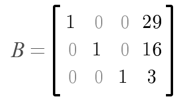
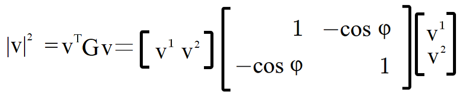
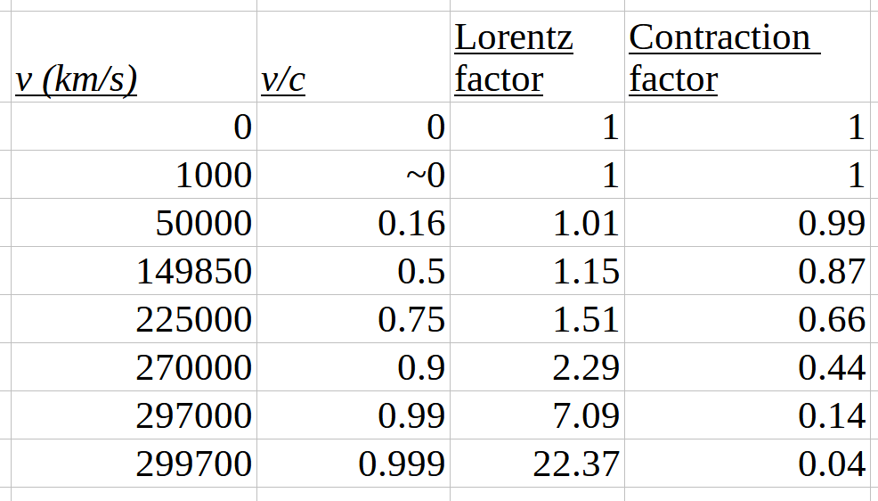
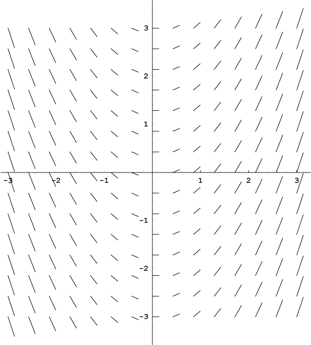
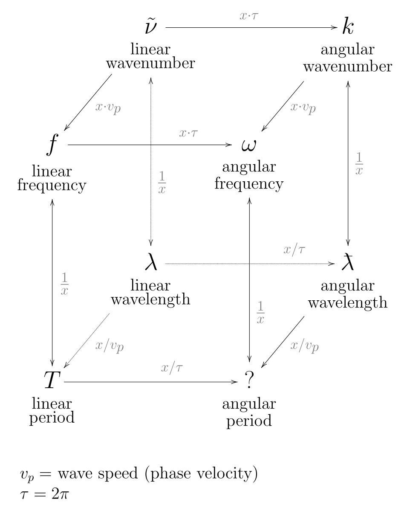
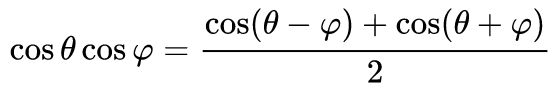
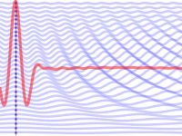
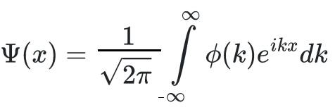

hole.
Science has overturned our concept of the world many times. We used to think the world was flat and that the sun revolved around it (some people still do think this). The next several chapters will talk about the surprising experiments and revolutionary theories that have most fundamentally changed our view of the physical world over the past 120 years or so, overthrowing the dynasty established by Euclid and ruled over most gloriously by Isaac Newton. Modern physics, which emerged in the beginning of the twentieth century, held two great surprises for mankind: quantum theory and relativity, and these will be the focus of Section Two.
In the previous section, we looked at how the curvature of the earth
means that systems of measurement that work over small distances begin to
fall apart or can't be applied over large distances. We talked a little
bit about what curvature means, and now it's time to revisit that. The
point at which humanity looked beyond Euclidean (flat) geometry to
describe the surface of the Earth might be considered the first phase in
the history of what I am calling in this section The End of the World As We Knew It;
and non-Euclidean geometry is the foundation of something
important later in that history, namely general relativity.
We will take a brief look at curvature in one dimension, which in a two-dimensional context might be considered clockwise or counterclockwise, up or down. Some types of curvature are more easily understood by looking at them in the context of one more dimension. In this chapter we will mostly look at two-dimensional curvature, which also comes in two types, positive or negative, but has features that you simply can't have in one dimension; a two-dimensional surface can curve into what we see in three dimensions as sphere, egg, donut or saddle shapes. We will look at the effects of this kind of curvature and how it and its effects can be measured. This is all interesting enough in itself, but it will also prepare us for a discussion of three-dimensional curvature (Chapter Thirty), which is as conceptually different from two-dimensional curvature as two-dimensional curvature is from one-dimensional curvature. Three-dimensional curvature is both positive and negative at the same time, but in different aspects. This sounds really abstract, but we will get around to visualizing all of it, despite the people who say it can't be done because we can't conceive a four-dimensional context to place it in.
When we talk about one-dimensional things, we usually talk about lines,
but not always in the same sense. There is the sense of a line
that
means something that always goes in the same direction and follows the
shortest distance between any two points on that line, and then there is
the sense of line
as we use it in line drawing:
something very thin,
perhaps infinitesimally thin, that may change direction or curve.
So in this chapter I will refer to both kinds of lines, but write
straight lines
when I mean the former type.
At any point on a line, that line may curve either toward or away from another point not on the line (Figure 17-1). The shorter the distance is to that point from the line, the more tightly the line must curve to maintain a constant distance from it. In this sense, a circle is curved around its center.
On a Cartesian graph, we might say that a function has positive curvature in ranges where its slope increases from left to right (where it points more upward), and negative curvature where its slope decreases in that direction (where it points more downward). In Figure 17-2, we see the graph of a function with positive curvature on both sides and negative curvature in the middle. From points A to C, the slope is upward; from A to B it gets steeper, but from B to C, that slope decreases until it becomes zero and finally goes back downward. B is an inflection point where the curvature goes from positive to negative. In calculus terms, we would say that the second derivative of this function — what might be called slope of the function's slope — changes from positive to negative at point B. In the terms we used to describe Figure 17-1, the curving line in Figure 17-2 that represents the function is curving around a point above it from A to B (and from D to E), and curving around a point below it from B to D.
Two-dimensional surfaces can have a curvature similar to this, if they
curve radially around a line that serves as an axis. If that radius
changes only in a linear fashion (or not at all), these surfaces can
easily be made flat. A cylinder and a cone are the two best examples of
this: a cylinder has a constant radius around an axis, and though that
radius changes on a cone, the sides of the cone are straight lines when
viewed in profile. One simple cut will allow either of these to shapes to
be unrolled into a flat surface (Figures 17-3 and 17-4). This kind of
curvature of two-dimensional surfaces is called extrinsic.
Two-dimensional surfaces may also have an intrinsic
curvature; this is
what is more interesting to us, and what takes us beyond the limits of
Euclidean geometry.
A two-dimensional surface may curve at any point on that surface both
toward and away from a point not on that surface. Such a surface
is said to have negative curvature.
Take the donut-shaped torus
as an example (Figure 17-5). Part of its surface is negatively curved.
Choose a point on the torus nearest the center of the torus, and notice
that the surface of the torus bends toward its center in one
direction, forming a circle with the center of the torus as its own center
and enclosing the hole
of the donut shape (Figure 17-6). Notice also
that in a direction perpendicular to the first, the surface bends away
from the center of the torus, forming a different circle that has a center
enclosed by the torus itself (Figure 17-7).
hole.
Other examples of negative curvature include the shapes of saddles, trumpets, and — my favorite — Pringles potato chips. In Figure 17-8 we see a two-dimensional surface being transformed between two types of flat surfaces: a cylinder and a pair of cones; in between these shapes, the surface is negatively-curved in a shape called a hyperboloid. The sides form a hyperbola (Chapter Thirteen), and the geometry of negatively-curved surfaces is sometimes called hyperbolic geometry to distinguish it from flat Euclidean geometry.
Chinese finger trapsare built on a principle similar to what we see in Figure 17-8. As the ends are pulled, the radius constricts. Source: Wikimedia Commons.
In contrast to negative curvature, there is positive curvature, the elliptic geometry of objects like the Earth, tennis balls, and so on. At every point on a perfectly spherical object, the surface curves only toward the object's center.
What these two types of curvature, positive and negative, have in common is that the rules of Euclidean geometry do not apply. On such a surface, the interior angles of a triangle do not add up to 180 degrees. The circumference of a circle is not equal to pi times its diameter. Parallel lines do not remain equidistant. Furthermore, this intrinsic curvature cannot be eliminated by cutting the surface. If you cut a sphere into pieces, none of those pieces will lie flat. This is the reason world maps are drawn with distortions or discontinuities; large regions of a curved surface cannot be faithfully represented on a flat surface (see Chapter Four). Using a globe and a felt pen, a triangle can be drawn with one corner at the North Pole and two other corners on the equator, and with each of the three interior angles being 90 degrees, for a total of 270 degrees rather than the 180 degrees demanded by Euclid (Figure 4-5, Chapter Four). Even smaller areas of the Earth have curvature which can be measured in this manner.
We tend to think of curved two-dimensional surfaces as being embedded
in a three-dimensional space. It's easier to visualize them this way, but
that third dimension is not an intrinsic property of the space, and need
not necessarily exist. By the same token, it's one thing to look at
two-dimensional curvature from the outside, like examining a globe; it's
quite another thing to notice it from the inside. For century after
century, it was known that the earth was round, and yet Euclid's geometry
worked just fine, because no one was taking highly accurate measurements
over very large distances.
It is thought that on a geographic survey commissioned in 1827, the
mathematician Karl Gauss noted that over great distances, the surface of
the Earth did not follow the rules of geometry established millennia
before by Euclid. Specifically, John Wheeler writes, [Gauss] found that the sum of the angles in his largest survey triangle was less than 180 degrees;
this was
both inescapable evidence for and a measure of the curvature of the Earth.
Even then, the difference observed by Gauss was
only 1/240th of a degree, so the fact that he even took notice
might also be considered a measure of his own confidence and competence.
James Hartle, in Gravity,
gives more details regarding Gauss' legendary survey while
cautioning the reader that the historical evidence is not conclusive
that it took place. Though dramatizing this development would make for a
great story, like Newton's supposed epiphany while observing the fall of
an apple, Gauss would have been well prepared for such a discovery.
For many years, Gauss had begun working on non-Euclidean geometry without
having published anything on it. Others who had similar thoughts began
publishing them soon afterward, not only beating Gauss to the press but
also writing about hyperbolic geometries like that which Gauss himself was
considering, and which were likewise quite different from what anyone
would notice on the spherical surface of the earth. Russian mathematician
Nikolai Lobachevsky was the first to publish in 1830, followed closely by
the Hungarian János Bolyai in 1832. In 1853, Gauss asked his student
Bernhard Riemann to prepare a presentation on the foundation of geometry
in hopes he could further develop alternatives to it.
Riemann succeeded beyond his mentor's hopes, announcing the next year that
not only was there a system for mathematically describing the curvature of
a non-Euclidean space at any point, but that this system could be extended
to an arbitrary number of dimensions. A handful of numbers could describe
the curvature of three-dimensional space and not many more would describe
four.
Anticipating Einstein's work by more than half a century, Riemann
explored non-Euclidean geometry as the explanation for the invisible
forces of gravity, electricity, and magnetism. Rather than being satisfied
with Newton's action at a distance,
Riemann saw that these forces could
be explained as properties of space itself. But lacking the field
equations later developed by Einstein and Maxwell, this ambition was
unrealized in his lifetime.
Riemann's 1854 lecture On the Hypotheses Which Underlie Geometry
proposed a family
of non-Euclidean geometries, of which spherical
geometry is just one. It was published posthumously twelve years later;
Riemann died in 1863. Arthur Cayley is credited with initiating the study
of elliptic (or spherical) geometry in his 1859 writing On the definition of distance.
It
seems strange that scholarship on the geometry of spheres, like the Earth,
actually lagged behind the much less intuitive geometry of negative
curvature, on which papers had been published decades earlier.
I hope you will permit me a few more paragraphs on hyperbolic geometry before we return to the more familiar geometry of spheres and an overview of how the math works. I promise to make it fun. We saw in Chapter Four that there are challenges in representing a positively-curved surface on a flat one, and that there are different projection methods for doing so. Similar challenges exist in representing a negatively-curved surface, and I'd like to show two different projection methods here. Whereas spheres tend to come back and meet themselves after curving around a single point, this isn't true of all curved surfaces; they aren't necessarily finite. So the methods of projection tend to take this into account, and represent all directions of infinity as a fixed distance from any given point, in much the same way that the horizon line and its vanishing points represent an infinite distance in panoramic photos and perspective drawings (See Figure 17-13 and Chapter Three).
In Figure 17-14, we see what is called the Beltrami-Klein projection model of a negatively-curved space. Like the Mercator projection of the spherical surface of the Earth, this projection also has its unavoidable distortions. Lines are shown as lines, but angles are not accurate. We see that lines which are not parallel do not necessarily meet, even at the infinite distances represented at the circular boundary of the model; this would be impossible in a Euclidean space, but it is one of the defining characteristics of hyperbolic geometry.

An alternative to the Beltrami-Klein model is the Poincaré disk (Figures 17-15 and 17-16), which has some amusing properties. In this model, straight lines appear curved, but angles and circles are preserved. All lines must meet the boundary, which represents an infinite distance, at right angles; this has the result that any line not passing through the center will be curved.
Henri Poincaré (1854-1912) was on the leading edge of scientific thought during his time and under slightly different circumstances might well have arrived at a theory of relativity before Einstein. In 1905, he described a world much like the one represented in the Poincaré disk; this description was both reminiscent of Riemann's efforts to explain the universe's fundamental forces in terms of geometry and anticipatory of Einstein's completion of what Riemann had begun:
Suppose, for example, a world enclosed in a large sphere and subject to the following laws: The temperature is not uniform; it is greatest at their centre, and gradually decreases as we move towards the circumference of the sphere, where it is absolute zero. The law of this temperature is as follows: If R be the radius of the sphere, and r the distance of the point considered from the centre, the absolute temperature will be proportional to R2 - r2. Further, I shall suppose that in this world all bodies have the same co-efficient of dilatation, so that the linear dilatation of any body is proportional to its absolute temperature. Finally, I shall assume that a body transported from one point to another of different temperature is instantaneously in thermal equilibrium with its new environment. … If they construct a geometry, it will not be like ours, which is the study of the movements of our invariable solids; it will be the study of the changes of position which they will have thus distinguished, and will benon-Euclidean displacements,and this will be non-Euclidean geometry. So that beings like ourselves, educated in such a world, will not have the same geometry as ours.
So let's talk now about how we make measurements and detect curvature in
our world. We have mentioned a few measurable effects of curvature
already: whether parallel lines converge or diverge; how many degrees are
in the sum of the angles of a triangle; and the ratio of a circle's
circumference to its radius. There is also the parallel transport
issue
mentioned in Chapter Four, before we had really talked about vectors. As
we saw in Chapter Eight (Figure 8-9) with the moving billiard ball
vectors, to add vectors at different locations, you have to move them
together, taking care to keep their components the same, or in other
words, keeping them parallel throughout the move. That is why we call it
parallel transport.
All of these effects are measurable from within
the space; one doesn't need, for example, to look at the globe from
the outside to measure the curvature of the Earth, nor does one need to
have a direct measurement of the Earth's radius.
For a practical example of how this works, let's imagine ourselves at the north pole with Alice and Zeno. By the way, in elliptic geometry, a pole has a meaning closely related to the one we know. Every straight line has at least one pole where all lines perpendicular to that line will meet, so any pole is defined in relation to a line. In the case of the north and south poles, that line is the equator. All lines of longitude cross the equator at right angles, meeting at both of these poles. Lines of latitude parallel to the equator do not meet, not because they are straight but because they curve around the nearest pole.
With that said, let's imagine that Alice has driven a stake into the ice
at the north pole, around which she has tied a rope; and that there is
sufficient ice all around her to walk a great distance in any direction
from the pole. She remains at the pole with a radio while Zeno uncoils the
rope and pulls it tight. Together, they make measurements. To make the
differences in these measurements easier to notice, let's also suppose
that the Earth is much smaller than it really is, and that it curves much
more tightly around its center. The rope is marked at equal intervals to
help Zeno measure its length. With one length of rope uncoiled, which is
quite long, he walks in a direction perpendicular to the rope and measures
how far he walks until he hears from Alice on his radio that he has walked
one tenth of the circumference of a circle, which Alice has measured by
watching the changing angle of the rope on the stake. Zeno radios back
with the distance he has walked, which happens to be sixty one hundredths
of a rope length. They each write down 1
and
then 0.61
Zeno uncoils
another length of the rope and heads back in the opposite direction,
measuring the distance he walks until Alice radios again and tells him
that he has walked the same angular distance. Zeno reports that this walk
was equal to 1.19 rope lengths. They each write down 2
under the 1
and
then 1.19
under
the 0.61
On the third pass, with three rope lengths,
the distance of his walk is 1.74 rope lengths.
| Radius | Arc length |
|---|---|
| 1 | 0.61 |
| 2 | 1.19 |
| 3 | 1.74 |
Alice looks at her table of measurements, and notices two things. First, Zeno's walks get longer for every length of rope that he is away from the pole. That makes sense, because the circumference of a circle grows in direct proportion to its radius, and Zeno has been walking a constant tenth of a full circle around the pole. But the second thing that she will notice, if their measurements are accurate enough, and their rope is long enough in relation to the curvature of the Earth, is that for each successive rope length between Zeno and the pole, his walks gain a little less distance each time. At one rope length of radius, Zeno's walking distance was 0.61 lengths. At two lengths, the distance was only an additional 0.58 lengths. At a radius of three lengths, Zeno only gained an additional 0.55 lengths in his walk. This decreasing incremental distance tells Alice that the surface they are measuring has positive curvature.
If Alice and Zeno were at liberty to fly high above the earth, they would be able to see the reason why their measurements of walking distance are increasing more slowly at greater distances. If Zeno were to have walked to the equator, his walking distance would have reached its maximum; and at greater radial distances after that, his walking distance would have actually grown shorter. If Zeno were able to make it all the way to the opposite side of the earth, still holding the rope tight and connected to the north pole, he would find that he had been walking around the south pole as well as (or rather than?) the north, until he reached the south pole and his walking distance became nearly zero.
If we establish a (naturally) polar coordinate system with the north pole
as its origin, calling the length of the rope the radius r and
the direction of the rope the angle θ, we can generalize Alice
and Zeno's table of measurements into something called a metric
of the
Earth's surface. At every point on that surface, there is not only an r
for its radial distance from the pole and a θ for its
direction, these being the coordinates of the point; but there
is also a distance s associated with every successive linear
distance r, and another distance s associated with
every successive angular distance θ. These last two numbers are
the metric for that point. At the coordinates [0,0], that
metric is [1.00, 0]; in other words, there is only one direction from the
pole, and that direction is outward. The numbers mean this: if
Alice or Zeno goes one rope length in the r direction (in this
case, any direction, since we are at the origin), he or she will have gone
one rope length (of course). If they confine themselves to moving only in
the θ direction, they will only be rotating in place, so they
will have gone no distance at all. Polar coordinates aren't really the
best system to use at the pole, but they work very well near
it. At any other point, the numbers are different. At the
coordinates [1,0],
the metric becomes [1.00, 0.017]. The number 0.017 is
the 0.61 lengths of walking distance divided by the 36 degrees of angle
that Zeno's walk traversed at a radius of one length. In other words, for
every rope length Zeno travels in the r direction from that
point, he will have gone (… wait for it …) one rope length. But for
every degree he travels in the θ direction, he will have gone a
distance s of 0.017 rope lengths. Alice and Zeno will find that
the metric does not change for increasing or decreasing θ coordinates,
but only for increasing or decreasing r coordinates. So at the
coordinates [1,0]
or at [1, θ] for any value of θ, the
metric will be [1.00, 0.017].
At the coordinates [2,0]
(or at [2, θ]
for any value of θ), the metric will be [1.00, 0.033]. The r
metric is of course unchanged, because it is a linear measurement. But at
[2, 0] the θ metric is a little less than twice what it was at
the point [1, 0] (Table 17-2).
| Coordinate | Metric |
|---|---|
| [1,0] | [1.00, 0.017] |
| [2,0] | [1.00, 0.033] |
| [3,0] | ? |
If we assign a metric to every point on this surface (or any other) in this way, we can do more precise quantitative analyses on this metric and use calculus to talk about the ratios of tiny differential changes dr and dθ in coordinates r and θ to tiny differential changes ds in the metric. More importantly, we can talk about how those ratios ds/dr and ds/dθ themselves change over tiny increases dr in the distance r (or in any other coordinate). If these ratios change, then we know that the surface is curved. In calculus, these tiny changes in ratio are called the second derivatives (d2s/dr2 and d2s/dθ2) of the metric with respect to the coordinate system. They are more precise and smaller-scale descriptions of the same changes that we noticed. For more on calculus, see Chapter Eleven if you skipped over it.
Speaking of which, if you did skip over Chapter Eleven, you may prefer to skip over the remainder of this chapter, and that is perfectly all right. We're going to go over some more technical details that really aren't necessary for enjoying the chapters to follow, but if you really do want to learn the math, then the rest of this chapter will be really helpful. This will be the material I wish I would have had when I was struggling to make sense of what is called differential geometry.
Wow, that chapter sub-heading is a mouthful, isn't it? Have I scared you off yet? No? Good.
I should point out that from here on, when I talk about angles, I will
mean measurements in radians rather than degrees, unless I write
degrees.
Quantities like arc length are simpler to calculate in radians;
the length is simply the radius r times the angle θ
rather than r times θ times π/180. I will also on
occasion use the *
character to indicate
multiplication when the x
character might be mistaken to mean the wrong thing, such as a vector
cross-product (Chapter Eleven).
In a two-dimensional polar coordinate system, Alice and Zeno were able to demonstrate curvature using only two numbers for the metric because the lines of constant r and θ are perpendicular (or orthogonal) at every point on the surface. This orthogonality is what makes the variables r and θ independent. There could be other coordinate systems in which this isn't so, and in such cases more numbers are needed for the metric, to describe how the variables depend on each other. But the polar coordinate system tends to break down at the pole itself, where the lines of constant θ all cross one another, because they are not parallel at most points on the surface. Later in this chapter we will discuss a Cartesian coordinate system on a spherical surface that has the surprising property of its x and y coordinates not being entirely independent; it will have lines of constant x and y that eventually cross one another. The fact that coordinate systems such as these have to be accounted for is why we have something called the metric tensor. Let's hold off for a moment on the question of what a tensor is in general. The metric tensor is an invention of Riemann's which, like the metric, tells us about distances surrounding any point in a coordinate system. John Wheeler calls it a machine for calculating the real distance between any to points in a given system. You feed it pairs of coordinates, and it gives you a distance.The difference between the metric tensor and the metric as we have described it so far is that the metric tensor is a two-dimensional array of numbers rather than just a single pair. This is, again, because we will need a generalized system that can handle non-orthogonal coordinate axes. So at the point [1, 0], where our metric is [1.00, 0.017]. the metric tensor looks like this:
The zero elements (upper right and lower left) in Figure 17-19 are where we would see nonzero values in cases where our two coordinate axes were not orthogonal and independent. We will have such an example later on.
Now let's talk about what tensor means. A tensor is an idea
that includes, and expands on, the ideas of scalars and vectors. A scalar,
you will recall, is a single quantity having no direction associated with
it; we call this a tensor of rank zero.
A vector is a quantity with an
associated direction, so a vector will have as many numbers as there are
dimensions in the space it is associated with. A two-dimensional vector
will typically have x and y components in a Cartesian
system and r and θ components in a polar system. We
can call a vector a tensor of rank one. To reiterate: no
directions, rank zero; one direction, rank one. The metric tensor is a
tensor of rank two, and as such it can represent the
relationships between multiple pairs of directions: for
example, between the components of the coordinate system.
The elements of a tensor are indexed by which components they represent. A rank one tensor, what we more commonly call a vector, has one index, and one element for each of the coordinates in the coordinate system. Let's recall Figure 8-10 for some concrete examples.
a = [1,-1]
b = [1, 1]
c = [2, 0]
Figure 8-10. The components [x, y] of the vectors a, b, and c. As discussed below, these components might also be named [x1, x2 ].
In Figure 8-10, above, we have some vectors with x and y components. As we consider vectors more generally as examples of tensors, it sometimes becomes more convenient to number the components of the vector than to assign them various letters. So in place of x and y, we might have x1 and x2, or even ε1 and ε2. The subscripted number in either of these cases is the component index. We could say of the vector a in Figure 8-10 that its x1 component is 1 and x2 component is -1.
A rank two tensor has two indices, one for a row in the tensor, and another index for a column; and a metric tensor has one element for every combination of the coordinates in the coordinate system. Skip ahead a little bit and look at the metric tensor G in Figure 17-22. It has four elements, G11, G12, G21, and G22. G11 and G12 are the top row (1 and 0), the topmost elements in each column, as specified by the first index having the value of one. G21 and G22 are the bottom row (0 and 1), as specified by the first index having the value of two.
In general, we can read the elements of a metric tensor using a sort of key like one of the following:
Figure 17-20. A key for the indices of metric tensors in terms of r and θ.
Figure 17-21. A key for the indices of metric tensors in terms of x and y.
The first index in each tensor will specify a row in that tensor. In Figure 17-20 these are the r and θ rows; in Figure 17-21 these are the x and y rows. The second index in each tensor will specify a column in that tensor. In Figure 17-20 these are the r and θ columns; in Figure 17-21 these are the x and y columns. Bear with me a moment longer, and we'll start to see how this all comes together with what we have been talking about.
Metric tensors help us in calculating distance in a way that closely relates to the Pythagorean theorem. We are most familiar with this theorem in a form something like c2 = a2 + b2, which describes the relationship between the sides of a right triangle, but we have also seen it in the form s2 = x2 + y2, which describes the sum of two orthogonal vectors in a Cartesian coordinate system and in flat Euclidean space. We could rewrite this as s2 = x*x + y*y, and then more generally as s2 = 1(x*x) + 0(x*y) + 0(y*x)+ 1(y*y) to show every possible pairing of x and y. Then, using the index key in Figure 17-21, we could place each of the zero and one coefficients (multipliers) into a metric tensor:
Figure 17-22 . The metric tensor for flat Euclidean space in Cartesian coordinates (also known in linear algebra as the identity matrix).
So now, courtesy of Bernhard Riemann, we have a very robust system for describing distances in any coordinate system, flat or curved, orthogonal or not. We could take the metric tensor in Figure 17-19 and the index key in Figure 17-20 and use them to calculate distances near the coordinates it is associated with. For every small dr and dθ, we would calculate the distance ds as follows:
ds2 = 1.00(dr*dr) + 0(dr*dθ) + 0(dθ*dr)+ 0.017(dθ*dθ)
Equation 17-1. Calculating a small distance using the metric tensor in Figure 17-19.
Of course, over distances which are large enough to be accompanied by a significant change in the metric, we will have to take those changes in the metric into account as well, and that involves integral calculus which will tell us how the distance s accumulates over all the incremental changes. This takes us into a subject area called differential geometry.
Though I think it's a good idea to show specific examples, it isn't often that you will find specific metric tensor values for specific coordinate values in introductory texts. More often, you will see tensors populated by variables that apply over an entire surface. For example, the metric tensor of a flat surface in polar coordinates can be written this way:
Figure 17-23 . The metric tensor for flat Euclidean space in polar coordinates.
Using this metric, we calculate that ds2 (the square of the distance ds) is 1 (dr2) + 0 (dr*dθ) + 0 (dθ*dr) + r2 (dθ2) = dr2 + r2dθ2. In other words, for very small values of θ, the distance s approximates the vector addition of the distance dr and the arc length r*dθ. For larger values of θ, it gets more complicated and involves calculus again, because (for example) the direction of dθ changes as θ itself changes. If you dive deep enough in the math of it all, you will hear this aspect of it referred to as changes in the basis vectors. See Chapter Nineteen for more on this.
For example, imagine we are standing at the north pole and that our coordinate system is such that θ is zero degrees longitude at our right hand, 90 degrees in front of us, 180 degrees at our left hand, and so on. In terms of places these longitude lines would pass near, we would have London far off to our right, Krasnoyarsk in front of us, and the Bering Strait and Aleutian Islands to our left (Figure 17-24). So, at a radius of one meter, and at θ=0, to our right, imagine there is a vector (red) pointing counterclockwise, in the direction of increasing θ. If that vector were moved (or parallel transported) to be right next to us, it would point the same way that we are facing, towards Krasnoyarsk. In fact, right where it sits it is still pointing in the general direction of Krasnoyarsk. Also at a radius of one meter, directly in front of us, there is another vector (orange), also pointing in the direction of increasing θ; this one points in the direction of the Bering Strait. There is a third vector (purple) that we can add to the first one to get the second one, and that third vector points in the direction of minus r (the three vectors are brought together at lower left to show that the red and purple vectors add to make the orange one). In other words, as we move in the direction of increasing θ, the vector dθ changes, and this change is in the direction of decreasing r. If you repeat this exercise, you will find that as we move in the direction of increasing θ, the vector dr also changes, and this change is in the direction of increasing θ; as we move in the direction of increasing r, the vector dθ changes, and this change is in the direction of increasing θ.
Figure 17-24 . The vector dθ changes direction for increasing values of θ, and its change is in the minus r direction.
If you think this is all terribly complicated, you're absolutely right. And the math is pretty ugly, which is why our exploration of it will be somewhat superficial here. But here's a table of what we have covered so far for two-dimensional polar coordinate systems:
As you move in the direction of increasing ___ this vector or value does this when the space is θ dθ changes in the -r direction
θ dr changes in the +θ direction
r
dθ changes in the +θ direction
r ds/dθ increases
r d2s/dθ2 stays the same
flat
r d2s/dθ2 increases
positively curved
Table 17-3. Changes in the metric and in the basis vectors in a two-dimensional polar coordinate system.
Before we move on to Cartesian systems, let's have an example of a generalized metric of a curved space. The metric for the surface of a sphere can be written this way, in terms of the sphere's radius R and the longitude φ:
Figure 17-25 . The metric tensor for the surface of a sphere in terms of the sphere's radius R and the longitude φ.
Figure 17-26 . The arc lengths dr and dθ in terms of the sphere's radius R and the longitude φ.
Using this metric, we calculate that ds2 (the square of the distance ds) is R2(dr2) + 0(dr*dθ) + 0 (dθ*dr) + R2cosφ2(dθ2) = R2dr2 + R2cosφ2dθ2. The lower the longitude is, the greater the distance involved in moving one degree of latitude (Figure 17-26). But again, this calculation is only approximate over small changes in r and θ due to dr and dθ being subject to changes in their direction. For example, if we want to know the shortest distance between two points at opposite ends of a half-circle (which would be a large value of θ), we would want the result to equal the diameter of the circle, 2r, not the arc length rθ between two opposite sides. To make sure we account for the changing basis of θ, we would use calculus, and we will be saving those details for another chapter if not for another book altogether.
For our next imaginary trip, we shall go with Alice and Zeno to the equator. Like our imaginary trip to the north pole, let's imagine a place with flat terrain where we can see long distances in all directions; and let us again suppose that the Earth is much smaller than it really is, so that its curvature will be more obvious in our measurements. Alice and Zeno will try to establish a Cartesian coordinate system with the equator as their x axis, and an arbitrary line of constant longitude for their y axis. They begin taking measurements. Zeno marches ten kilometers in the positive x direction, and then makes a 90-degree turn and marches ten kilometers in the positive y direction (the red path in Figure 17-27). He might wish to give the coordinates [10, 10] to this location, but just to check his measurements, he and Alice have agreed that they will meet by taking two different paths: Alice marches from the origin point ten kilometers in the positive y direction and then makes a 90-degree turn and marching ten kilometers in the positive x direction (the blue path in Figure 17-27). What they find is that Alice's trip ends at a different point from Zeno's , just a little shorter in the y direction and a little more in the x direction; whereas Alice finds that Zeno's trip ends a little bit short in the x direction and went a little too far in the y direction. But no matter how many times they repeat the exercise, even if they switch roles, they find that each path ends in its particular location, which is different from the other.
In mathematical terms, we might say that the actions of going ten
kilometers in the x direction and going ten kilometers in the y
direction do not commute; done in different order, they produce
a different result. This idea of commutativity will be important later on,
and is one of the surprises of quantum mechanics. As far as concerns Alice
and Zeno here, the difference between the results of their
differently-ordered paths is illustrative of something called a commutator
or Lie bracket (lee bracket
),
which are terms you may encounter in discussions of curved geometry,
general relativity, or quantum mechanics.
Figure 17-27 . Two paths on a curved surface.
It may seem as though some trick of the landscape is causing Alice and Zeno to lose their way, so they return to the origin and start working on building grid lines. They march one kilometer along the x axis, then turn 90 degrees and march in the y direction, driving red survey markers into the ground at each successive kilometer. They return to the origin, march two kilometers along the x axis, then turn 90 degrees and march in the y direction, again driving red survey markers into the ground at each successive kilometer. They repeat the process until they have placed one hundred red survey markers. Then they take measurements again, and find two complications. The first is that the markers of equal y distance (other than the ones on the x axis) do not exactly lie on straight lines, as the markers of equal x distance do If they walk in the direction of increasing x along all of the y=10 markers from x=0 to x=10, they have to turn a little to their left after each marker to go in the direction of the next one. This makes the coordinate system curvilinear rather than Cartesian.
The second complication is that the distance between the markers of equal y distance at x=0 and x=10 get closer together for every increasing measurement of y, and this is true (though perhaps less noticeable) for any two values of x , not just zero and ten. If Alice and Zeno were to draw lines between these markers of equal y distance, we could call them latitude lines, because they are always a fixed distance from their x axis, the equator. And as we saw in Chapter Four, the further we go from the equator, the more obvious it is that these latitude lines curve around the pole rather than making a great circle around the circumference of the Earth. It also becomes more obvious that the lines perpendicular to the equator, the lines of constant x which we could call longitude lines, grow closer together with distance from the equator, eventually meeting at the poles.
Figure 17-28 . Survey markers on a curved surface placed by measuring equal distances on lines perpendicular to the x axis.
If Alice and Zeno were so inclined, they could repeat the process, placing blue survey markers at equal distances along straight lines from the y axis, and they would have similar results. They would find that their blue markers of equal x distance (other than the ones on the y axis) did not lie on a straight line, and grew closer together for increasing values of x. Rather than being lines of latitude, the straight lines they follow from the y axis would be great circles that would eventually meet, one-quarter of the way around the globe.
Figure 17-29. Survey markers on a curved surface placed by measuring equal distances on lines perpendicular to the y axis.
An extreme case of this problem would be illustrated in this scenario: instead of marching a mere ten kilometers before they make their turns (Figure 17-27), suppose that Alice and Zeno each march 90 degrees around the globe (Figure 17-30). This is more easily visualized on an actual globe. Pick one up if you have one at hand. Beginning with a Cartesian origin in Ecuador, play Zeno's part and follow the equator 90 degrees eastward to somewhere in or near the Congo. Then turn left and go 90 degrees northward to the pole. That's where Zeno ends up. Now for Alice's part. Beginning again at Ecuador, follow the line of 80 degrees west longitude, 90 degrees northward to the pole. Then turn right 90 degrees and follow the line of 10 degrees west longitude southward to Africa, right where Zeno would have taken his left turn.
Figure 17-30. Points on the globe being assigned different coordinates due to different paths taken to get to them.
So it turns out that there is more than one way to describe any x or y coordinate in this coordinate system. Following Zeno's path, we could give Ecuador the coordinates of [0, 0]; the Congo coordinates of [90, 0] (ninety degrees or distance units in the x direction from [0, 0]); and the north pole a coordinate of [90, 90] (90 distance units in the y direction from [90, 0]). Following Alice's path, we could give Ecuador the coordinates of [0, 0]; the north pole the coordinates of [0, 90] (ninety degrees or distance units in the y direction from [0, 0]); and the Congo a coordinate of [90, 90] (90 distance units in the x direction from [0, 90]).
This problem is one of orthogonality; the straight lines drawn at intervals across the x axis and the straight lines drawn at intervals across the y axis meet at right angles only at the origin and nowhere else (Figure 17-31). A coordinate system of this type would be more generally called an affine system rather than a Cartesian system which specifically requires orthogonal directions of x and y at every point. We have the same problem in any system having non-aligned poles; at latitudes where the nearest magnetic pole is in a more significantly different direction than the geographic pole (the axis of the earth's spin, which points at the North Star), we need to know the angle between true north and magnetic north in order to follow a map using a compass.
Figure 17-31. A section of spherical grid composed only of straight lines (click to enlarge) The x and y axes each have their own pairs of poles.
The essential question is how we choose to establish each coordinate. For the x coordinate at a given point, do we choose the value of x that lies on the x axis on a straight line from that point, running perpendicular to the x axis? Do we follow a curving latitude line from that point back to the y axis and measure that distance as x? Or do we choose the distance x along a straight line that runs from that point perpendicularly through the y axis?
Let's set those questions aside for the moment and look at a coordinate system in flat space having non-orthogonal axes (Figure 17-32). Again, there are three ways in which we might choose to establish the x coordinate for any point. We might run a line from that point perpendicular to the x or y axis and call the distance from the point to either of those axes x. Or we could draw a line through that point parallel to the y axis, and the distance x would be where that line meets the x axis. Of these three options, only the first, a perpendicular projection onto the x axis, and the last, a parallel projection onto the x axis, are given serious consideration in textbooks. And that will be fine for us. Likewise, to find the y coordinate, we will only consider the two options of perpendicular or parallel projection onto the y axis.

Figure 17-32 . An affine coordinate system with non-orthogonal coordinate axes. Adapted from Wikimedia Commons.
In Figure 17-32, we have a coordinate system which uses numbers rather than letters to index its coordinates. This is a common practice in differential geometry. So what we see in the above figure in place of x is the generalized coordinate e1;the basis vector e1 points along the horizontal axis and has a length of one. Basis vectors by definition point in the direction of some coordinate and have unit length. The basis vector e2 points along the (sort of) vertical axis, which roughly corresponds to the more familiar y axis. Between these two axes is the vector v, which has a magnitude and direction which we can describe using two components, each of which corresponds to one of the coordinate axes. Now if e1 and e2 were orthogonal, there would be no ambiguity in how to establish the components of any vector. Measuring parallel to one axis would mean measuring perpendicular to the other, and vice versa. But as we have seen now in curved space, this isn't necessarily the case. We end up with two projection methods, parallel and perpendicular, and two sets of basis vectors, covariant and contravariant.
The first coordinate (or component) of v (the one we
might have called the x component) can be established in two
ways: we can drop a line perpendicular to the e1
basis vector and use whatever value corresponds to the distance along an
axis perpendicular to e2, an axis
that we will call e1(with an upstairs 1).
In Figure 17-32, that value is v1. In this
case, the coordinate index goes downstairs
as a subscript and we call v1
the first covariant component of v (see
Chapter Five for the meaning of the terms covariant and contravariant,
but don't worry about it too much for now). On the other hand, we could
establish the first component of v by running a line
parallel to the e2 basis vector
and using whatever value corresponds to that distance parallel the e1
axis. In Figure 17-32, that value is v1. In
this case, the coordinate index goes upstairs
as a superscript and we
call v1 the first contravariant component
of v.
Likewise, the second component can be established by either of these two
methods. A measurement perpendicular to e2, a
projection,
onto an axis perpendicular to e1,
results in the covariant component v2. A
parallel projection gives us the contravariant component v2.
This is one of those situations when context is important. The
superscripted two doesn't indicate the square of v;
instead it means the second of its contravariant components. Note that the
contravariant/upstairs-indexed vector components get paired with the
downstairs-indexed/covariant basis vectors, and vice versa. In Chapter
Nineteen I will owe you a better explanation of why, but for now just
understand that it has to do with the way that basis vectors and their
corresponding components change in opposite ways, as discussed at the end
of Chapter Eleven.
Again, yes, you are quite right if you are thinking that this is all very complicated. It takes a lot of getting used to.
There's a lot of discussion yet to be had on what dot products are, the meaning of the terms covariant and contravariant as they apply here, how covariant components are the dot products of the vector in question with the basis vectors, and how contravariant components are the dot products of that vector with what are called the dual basis vectors e1 and e2. It's all an extension of the idea of projection that we saw in Figure 8-13, and it ties into the dot operator that you may have taken notice of in Chapter Eleven, as well as that chapter's brief discussion of basis vectors and contravariance. We aren't going to delve much more deeply into all that just yet (we'll save that for Chapter Nineteen), but the more of the mathematics of general relativity that you want to understand, the more of that you'll need to know. For that purpose I would recommend Daniel Fleisch's A Student's Guide to Vectors and Tensors as a good starting point for those who prefer written material; in Chapter Nineteen I will have some video content to recommend to you.
Suffice it to say for now that the fact our two coordinate axes in 17-32
do not meet at right angles — that they are non-orthogonal, in
other words — creates an obvious duality in how we describe any
vectors in the system, and these dual spaces
of vectors with co- and
contravariant components become important. This is why I suggested in
Chapter i that you might consider the dual spaces of the complex
plane as arising from some fundamental interdependence — we might think of
it as a non-orthogonality of some sort — between the real
and imaginary numbers. We will find a similar non-orthogonality or
interdependence between time and space in this second section of the
book. The comparisons I am making here will probably not stand up to
close scrutiny, because they arise from a hunch having its origins in my
superficial understanding of statistical analysis, which may not have
anything to do with the subjects at hand; but I do find some interesting
correspondences here.
Setting all that aside for the moment, at last we get to see the role of the other two elements in our metric tensor. By the law of cosines (c2 = a2 + b2 - 2ab*cosθ), the length v (also denoted as |v|) of the vector v having contravariant components v1 and v2 (which can easily be misinterpreted as powers of a number v, I know, but this is the convention we are stuck with) is calculated as follows:
v2 = |v|2 = (v1)2 + (v2)2 - 2( v1 v2cos φ) = 1v1v1 - 1v1 v2cos φ - 1v2 v1cos φ + 1v2v2
Equation 17-2. The length of a vector in terms of its contravariant components and the angle between them and between the basis vectors.
where φ is the angle between the two contravariant components of v.
In terms of a metric tensor, this would be as follows in Figure 17-33, remembering that the elements of this tensor are indexed as shown in Figure 17-34:
Figure 17-33 . A metric tensor for use with covariant basis vectors and contravariant vector components in a system with non-orthogonal coordinate axes.
Figure 17-34. The index key for the metric tensor in Figure 17-33.
The symmetry in the upper right and lower left terms, which are zero in the
metric tensor for orthogonal systems (Figure 17-22), gives us the minus two
factor from the law of cosines. Notice that this metric tensor has no
terms which include the coordinates themselves; for this reason we need only
look at how the angle φ changes from place to place to determine whether the
space this metric describes is flat. In Figure 17-32, this angle between the
axes does not change and the space is flat. But in the curved space of
Figure 17-31 we can see the angle between the two basis vectors changing (as
shown in the direction of the coordinate lines) as we move away from the
origin, and the metric itself would then change in value with this angle.
We write the indexes for the tensor elements in Figure 17-33 downstairs
as subscripts ( G11 at upper left, G12 upper right,
G21 lower left, and so on). We pair the downstairs tensor
elements with the upstairs
-indexed vector components shown in the
key. So when we are computing the length of a vector, we pair G11
with the quantity v1 times v1,
G12 with the quantity v1
times v2, and so on, as hinted at in
equation 17-3 (see Notes ). Let's make it more explicit:
|s| 2 = G11 v1v1 + G12 v1v2 + G21 v2v1 + G22 v2v2
Equation 17-4 (see end notes for 17-3). The length of a vector s in terms of its contravariant components and the corresponding metric tensor G. Note the downstairs indexes for the tensor, which match the index placement for the basis vectors it pairs with.
Finally, let's rewrite equation 17-4 using the shortcut called Einstein
notation. When we are working in spaces of more than two dimensions, all
of the terms for each of the elements in the tensor can create a lot of
clutter. So we could instead express Equation 17-4 using the letters i
and j to stand for all possible values (1 and 2 in two
dimensions) of the components' indices, and taking it as implicit that we
add a term for each possible value or combination of the index or indices
that appear both upstairs
and
downstairs
:
|s|2 = Gij vivj
Equation 17-5. Equation 17-4 rewritten using the Einstein summation notation.
Though its meaning isn't immediately apparent, this convention of summarizing terms is standard in most texts discussing general relativity.
We haven't discussed much about linear algebra or matrix multiplication here yet, but we will get there in Chapter Nineteen. For those who are already familiar with linear algebra, I offer the following. In terms of matrix multiplication, Equations 17-4 and 17-5 would be written as:
|s|2 = vTGv
Equation 17-6. Equation 17-4 rewritten as a pair of matrix multiplication operations, where v is a column vector with contravariant components, Gis the metric tensor, and vT is the row vector resulting from the transposition of v (which in this case means simply setting v on its side).
where the same metric tensor G is treated as a multiplication matrix, and the vector v (still using the same contravariant components, if we have more than one basis to choose from) is multiplied by it twice: first as the (transposed) row vector vT, and then as the column vector v. We'll see more explanation of the meaning of row and column vectors and transposition in Chapter Nineteen. If any one of these last three equations goes over your head, don't worry; you might see this as a learning opportunity, because really all three of them are just different ways of writing the same thing. That being said, you will seldom see something like Equation 17-6 in a physics text. The Einstein summation convention is far more prevalent.
Lastly, it must be re-emphasized that in spaces where the metric tensor is not constant, we write of differential distances ds rather than s, and of ds2 rather than s2; likewise we would write of differential components dxi or dvi rather than vi. And we would compute the sum all of these differential changes together along with the metric tensor at each point along the way to calculate the total distance. It is a common practice to use a lower-case g for the metric tensor and the Greek letters mu and nu for its indices:
ds2 = gμν dxμdxν
Equation 17-7. Equation 17-5 rewritten in terms of differential geometry.
I realize that we're still a long way from being able to calculate the shortest path from Seattle to Berlin, but my intention in the last half of this chapter has been to give some helpful illustrations and examples that I find are often missing in mathematical texts and to show the relationships between many of the concepts and notations that a serious student is likely to encounter. I hope the chapter has been fun and interesting even in places where the math may go over the reader's head for now.
Section Two of this book can be thought of as proceeding along two tracks, one having to do with relativity and the other with quantum theory. Whereas differential geometry (in the previous chapter) was an important step towards relativity, one of the classical subjects that quantum mechanics developed from is thermodynamics, which we will discuss in this chapter. We will enumerate the three laws of thermodynamics one by one and discuss their implications. And we will see how thermodynamics is an integral part of a network of physics subjects including both quantum theory and relativity.
The phrase the arrow of time
is closely associated with the study of
thermodynamics and refers to the tendency of many observable phenomena to
be irreversible. The implication is that time prefers a certain direction
for some processes. It isn't at all difficult to melt an ice cube in a hot
drink; one gets warmer while the other gets cooler. It is less simple to
un-thaw the ice cube out of that same drink.
Our discussions of physics have so far tended to focus on the physical properties of particular objects and how each of them behaves in relation to another: a pair of billiard balls, or a satellite orbiting the earth, for examples. In these previous examples, each object was accounted for individually. Thermodynamics tends to be more about how large numbers of objects behave as a group; and as a group, these objects will have properties which cannot be ascribed to them individually. For example, it is not meaningful to speak of the temperature of an individual molecule, its pressure, or really even whether it is in a liquid or gaseous state. These properties only have meaning for large numbers of molecules.
Thermodynamics also leads into discussions of isolated systems,
volumes
surrounded by a boundary through which neither matter nor energy can pass.
These systems contain sets of objects which we can assume are unaffected
by anything which is not a part of the set, except under conditions which
we can observe or control. This really isn't much of an intellectual leap
from the idea of individual, isolated objects, and I don't have any
criticisms to level at either of these ideas at this point, but I wish for
you to keep in mind the question of whether such isolation actually exists
in nature; and to note where the term boundary
is used, because it will
play a significant role in quantum mechanics.
The First Law of Thermodynamics concerns the conservation of energy. It
implies that the internal energy of an isolated physical system
does not change, because no mass or energy is allowed to escape or enter
it. It states that the internal energy of a closed system, one
which can exchange heat energy with the outside world but not mass,
and which can perform physical work on the outside world, changes in
specific ways. The change in internal energy ΔU of a
closed system is equal to the heat energy Q passing through
the boundary of the system minus the work W the system does on
the outside world (a loose definition of work
in this context
is force times distance, which has the same units of measurement as
energy):
ΔU = Q - W
Equation 18-1. The First Law of Thermodynamics.
Consider the compression of a spring as an example of work; you apply a
force against the spring and succeed in decreasing its length by some
distance. The work done on the spring is that force times that distance,
and results in an equivalent amount of energy being stored
in the
spring; the spring is now able to exert a force on some other object and
thus turn that stored energy into kinetic energy. Raising a weight to some
height is likewise an example of work, a vertical force over some vertical
distance which results in the weight having greater potential energy
due
to gravity. In letting the weight fall again, we let that potential energy
become kinetic energy.
So far we haven't discussed the role of heat energy in all this, but
we're getting there. Another example of work is pushing a sled along an
icy road. We apply a force over some distance, and when we are done, the
sled has the kinetic energy corresponding to the work we have done, minus
whatever energy it loses in friction with the icy road. Note that the work
we did on the sled depends only on the force we applied times the distance
we applied it over; whether the sled immediately comes to a stop due to
friction or anything else is not part of the calculation. But where does
the energy go when it is lost
due to friction? It becomes heat
energy. As a closed system,
we lose energy by doing work on the
sled (and, coincidentally, by radiating heat as we do so, assuming it is a
cold day). As a separate closed system, the sled gains the energy
corresponding to our work, and may gradually lose it in heat exchange with
the road due to friction.
If you think that work and heat exchange and energy seem to have a mathematically puzzling relationship, I don't at all disagree with you; I think that the distinctions between these three things are somewhat contrived. I hope I have already made clear that work is the transfer of energy, whether it be kinetic or potential, regardless of what happens to that energy after it is transferred. What I would like to do next is propose that heat energy can be regarded as a kind of kinetic energy, and that its transfer might be regarded as a kind of work, with the result that all three things are more obviously equivalent.
The temperature of a liquid, solid or gas depends on the kinetic energy
of its individual molecules. This kinetic energy in a gas is the speed at
which the molecules move freely, bouncing against each other and against
anything else they encounter; in a solid, where the molecules cannot move
freely, it is the speed at which they vibrate in relation to one another
around some equilibrium position, like masses connected by a lattice of
springs. When friction occurs, there are collisions between small bumps on
the two surfaces in question. These collisions exert forces over very
small distances. Work is being done, even if only on a microscopic level.
Even without friction, when we place a warm cup onto a cold saucer, the
molecules of both surfaces are constantly vibrating and colliding with
each other. These collisions also exert forces over very small distances,
and thus work
is done even though neither object moves visibly. But I
don't think you are likely to see heat transfer described as a form of
work in many introductory physics textbooks; traditionally the two ideas
are kept distinct.
I'd like for us to go all the way back to Chapter Six now, and Figure 6-2, in which Zeno drops a dry-ish lump of mashed potatoes onto the bed of the moving truck. Why does this lump come to a stop rather than bouncing? Where does the kinetic energy go once the lump strikes the truck bed? The answer is that it becomes heat, or vibrational energy, in the potatoes, the truck, and the surrounding air. Some of the energy of the lump's fall goes toward the lump's deformation as it collides with the truck bed; through internal friction, this becomes heat. Some of the energy dissipates into the air as sound, making the air vibrate and creating a pressurized wave in it; this is a form of heat energy as well, which dissipates very rapidly. The rest of the energy becomes heat in the truck bed, as the potato lump smacks the surface and causes increased vibration in it.
We're going to do this out of numerical sequence and talk about the third law before the second, which seems to require the most explanation, and I'd rather not leave the third hanging for that long. This is also a good place to explain that the subject of thermodynamics is far from simple, no matter how much I may try to simplify it here. Furthermore, I have to admit that there are important aspects of it all which I don't yet understand, but what I do understand I will share here. And the reason I presume to talk at all about such an immense subject is because it is so inseparably connected to other subjects of this book, which I do understand somewhat better.
So, for reasons having much to do with what I have just written, rather than present you with the Third Law of Thermodynamics itself, I will instead talk about one of its very interesting consequences.
There is a lower limit to the temperature of any object. If all the
motion and vibration in all of the molecules were to come to a stop, then
it would be impossible for them to move any more slowly, and they as a
group could not be any colder. This lower limit of temperature is the same
for all the various types of matter, and it is called absolute zero.
Its
value on the centigrade scale is 273.15 degrees below zero (459.67 degrees
below zero on the Fahrenheit scale).
The Third Law of Thermodynamics establishes, among other things, that the temperature of any mass cannot be reduced to absolute zero. We can make it get close, but we won't be able to get it all the way there in a finite number of steps. This is one of a few important discoveries of the 20th century in which we found that nature had a certain limit which we could approach but not reach. One of the other limits was established by Einstein's theory of relativity: you cannot accelerate a mass to the speed of light. You can try to get close, but the closer you get, the more energy will be required to get any closer. The other highly significant limit is a cornerstone of quantum mechanics; we discovered an inherent level of uncertainty in the position and momentum of a particle. We can't know the values of both of those quantities beyond certain limits of precision.
Again, I feel obligated to emphasize my lack of qualifications regarding
the basic subject matter of thermodynamics. Regarding the Second Law in
particular, rather than make expert judgements on the state of the
science, I only feel qualified to comment on the quality of instruction
one might find in various places. It is the Second Law of Thermodynamics
which gives meaning to the phrase The Arrow of Time;
and of the three
laws, it is the Second which is the subject of so much rhetoric and
hand-wringing in so many popular science books. So have your critical
thinking skills at the ready, friends, we're going to talk about entropy.
I am grateful to Sean Carroll, author of From Eternity to Here (among others), for introducing me to what I regard as an excellent starting point for the Second Law, as well for as motivating me to pick up and read a play that I now cherish deeply. In Tom Stoppard's Arcadia, a young woman named Thomasina poses a fascinating question to her tutor:
When you stir your rice pudding, Septimus, the spoonful of jam spreads itself round making red trails like the picture of a meteor in my astronomical atlas. But if you stir backwards, the jam will not come together again. Indeed, the pudding does not notice and continues to turn pink just as before. Do you think this is odd?
Thomasina has noted that some physical processes seem irreversible. We might ask a similar question regarding Zeno's fallen lump of mashed potatoes. What, if anything, can we do to make the lump resume its previous shape and rise back to the point it was dropped from? Is it possible for us to send the sonic energy back to it though the air and to simultaneously strike the truck in places all around it in such a manner that the energy will return to the lump in a great converging wave and send it flying upward?
Certain things just wouldn't seem plausible if we were to watch a film of
them in reverse. We would know the visual trick that was being played on
us. If we had video of the lump of mashed potatoes hitting the truck bed
and ran it in reverse, the fakery would be obvious. Even if we turned the
image upside down to imitate the potatoes becoming unstuck from the
underside of the truck and then falling,
something about the way the
lump changed shape as it began to drop
would look suspicious. The idea
of running a film backwards is used often in popular science literature in
the context of the Second Law, for good reasons; it makes the reader stop
to think and gives them something easy to visualize. But it can also
distract readers from the real point, and give the impression that highly
improbable outcomes are supposed to be impossible. I will give an example
later of an engineering feat which is in some ways equivalent to
un-shattering a mirror or making Zeno's potatoes fly upward off of the
truck bed.
There is nothing in the laws of mechanics governing the behavior of the
truck or the mashed potatoes that rules out the entire process running in
reverse. And yet it doesn't happen. This is where some writers will try to
fill in what they see as a gap in physics, and they will try to use the
Second Law of Thermodynamics to do it. The simple truth is that energy (in
low densities at least) tends to dissipate, to flow outward. But
mechanical physics isn't usually written in terms of inward
or
outward.
It is mostly written in terms of vectors, which go
this way
or that way.
We have an equation that describes the diffusion of heat
quite nicely, written in terms of vectors. But the Second Law which gives
us the arrow of time
isn't about diffusion, per se; it
concerns something subtler, which scientists call entropy. Different
writers have different descriptions for entropy, and some of them are not
very useful; the ones that try to fill in this perceived gap
in science
are usually the less sensible.
The most concise and useful definition of the entropy of a system has to do with its ability (or perhaps its inability) to do work. A weight hanging from a pulley can do work because of its gravitational potential energy. A container of pressurized gas has kinetic energy that can be made to do work in an environment of lower pressure. A hot object can be made to do work if there is a cooler object to distribute the heat to. We say that a disequilibrium in temperature or pressure across some boundary creates a condition of relatively low entropy and that this low entropy is associated with the system's ability to do work.
The Second Law of Thermodynamics can and has been stated in many ways,
but we will consider it in this manner: the entropy of any
isolated system never decreases over time, and increases as any
work is done; thus the ability of any system to do work is finite.
Once a system reaches equilibrium in temperature and pressure, when all
the chemical energy has been extracted by burning all of the fossil fuels
and so on … when maximum entropy is reached, the game is over and no
more work can be done. The German word for entropy is Wärmetod,
which also translates as heat death.
This physical law is unusual in
that it has a specified direction in time.
You will find a lot of talk about order and disorder in books that
discuss entropy and the Second Law. Examine such matters with a critical
eye. You may, for example, be given to imagine a closed container of air
in which there is some imaginary, completely permeable boundary between
one end of the container and the other, and that at some moment, there is
greater average pressure on one side of the boundary than the other. In
other words, there is more pressure on one end of the container than the
other. You may then have it suggested to you that this closed system is in
a state of low entropy and perhaps even in a more highly ordered state
than one having uniform pressure. But is it? Someone may assert to you
that the gas in the container will over time reach an equilibrium state of
uniform pressure (and that this all has something to do with
irreversibility and the arrow of time,
etc. etc.). But will it? A writer
who is closer to the mark may say that the pressure difference between the
to ends of the container could be used to do work, so long as
that difference persists. But can it?
In this case, if we take entropy to mean anything more or less than the inability to do work, we will stumble. Because whether the equilibrium state of the container is to have uniform or nonuniform pressure, and whether a state of uniform pressure is or is not able to produce work could depend on gravity. If there is a strong difference in gravity between one end of the container and the other, the pressure will differ from end to end once equilibrium is reached, for the same reason that air pressure is greater at sea level than at high altitudes. And these differences in pressure cannot be exploited to do work. In strong gravity, a system at uniform pressure will evolve over time toward non-uniform pressure. In zero gravity, the reverse is true. The movie runs backwards in one situation compared to the other. It is tempting to suppose that gravity tends to slow or reverse the flow of time in some sense. We'll return to this idea in Chapter Twenty-Five when we discuss general relativity.
Randomness and order are highly subjective. The character string
5f4dcc3b5aa
has no immediately apparent order, but
it is in fact the MD5 hash of the string password
. We might look at a
set of five playing cards one by one, finding no particular order in the
face value of the cards, and judge the set to have no meaningful
order. Someone else might look at the same set of cards and see not the
first, but the second five digits of pi. The order or randomness of
something depends a great deal on how it is being measured or what it is
being compared to.
Let's return again to the closed container of air, and imagine some invisible, fully permeable boundary that divides the container into equal halves, left and right. If we found that by some miracle all of the air molecules in the container were on the left side, we would indeed be surprised, and with good reason. Why? Because that is a highly improbable state. How improbable is it? The standard scientific way of answering that is to first ask how many air molecules are in the container. That's something that we can measure with some degree of accuracy, but let's suppose that we happen to know that there are exactly 10,000 molecules in the container. Next, we ask: out of all the possible ways that these molecules could be arranged, how many of them correspond to having all of them being on the right, and how many of them correspond to some other distribution? Then, we implicitly assign each molecule a binary property of left or right, and say that there is only one outcome that corresponds to all of them being on the left, while there are an astronomical number of other possibilities. But think about what we have done: we have greatly simplified our description of the system. We drew an arbitrary boundary across the middle and reduced the set of states that an individual molecule could be in to one of two possibilities. We don't consider any difference between the molecules being all huddled in the upper-left hundredth of the container's left half on one hand, or on the other hand being evenly distributed through the left half; we chose the boundary where we chose it, and that is the limit of the detail we are considering. Neither do we distinguish one molecule from another; we don't care whether the oxygen molecules are to the left of the nitrogen molecules, or vice versa, or all mixed together. We don't care how fast any of them are going individually. As long as they're all on the left-hand side, it's all the same probability.
When it comes to regarding entropy as a measure of order or probability, it's important to realize that there is an inherent subjectivity in it. To give a numeric value to the probability of all the molecules being on the left-hand side of the container, we are choosing to disregard any other information about the system; as Carlo Rovelli put it, we are blurring our view of it all in some way:
The entropy of a system depends explicitly on blurring. It depends on what I do not register, because it depends on the number of indistinguishable configurations. The same microscopic configuration may be of high entropy with regard to one blurring and of low in relation to another.
What is not subjective is the container's ability to do work. If we replace our imaginary boundary with an impermeable physical barrier that we can move, we have something like a piston. If we move the barrier from one end of the container toward the other, the number of possible positions each of the air molecules on one side is reduced; and not coincidentally, the pressure inside the container will rise, and we will be able to get out of the container the work that we have put into it.
One final musing about reversibility and the Second Law: in the intense gravity at the core of a star, lighter elements are fused into heavier ones. In the case of the Sun, hydrogen atoms are fused into helium in a great nuclear fire. With each fusion reaction, energy is released which keeps the Sun shining and creates an outward pressure from the core. When the hydrogen fuel has been all used up, the Sun will begin a new phase of its life, with its core becoming super-dense. In stars significantly larger than the sun, the gravitational collapse caused by the end of the fusion process is followed by a spectacular explosion of heavier elements.
You wouldn't think that a process like this one could be reversed, but
consider the atomic bomb. A heavy element, uranium, is formed into
precisely-shaped pieces which would form a sphere if assembled; and indeed
when the bomb is detonated, these pieces are assembled into a
sphere by forcing them together in a number of precisely-timed explosions.
Precision is key in all aspects of the process, because what happens next
is otherwise highly improbable. As Robert Anton Wilson puts it in The
Universe Next Door, The trick is to put the pieces together fast enough to get a decent blast before the bomb blows itself apart.
In the
instant that the uranium forms a compact sphere, it has the mass and
density required to begin a self-sustaining fission reaction in which
uranium breaks down into lighter elements, and a great nuclear fire is the
result. It seems rather like the collapse of a star, in reverse.
A less commonly discussed but certainly intriguing perspective on entropy
was that of Henri Poincaré, who said that entropy must increase as well as
decrease, due to all possible states of a
system being inevitable given enough time. Or, as Hamlet put it,
If it be not now, yet it will come.
If that be the
case, I can say with confidence that Poincaré will eventually not only
read this book, but favor it with a positive review (Okay, I am stretching
the facts. Poincaré's statement was in the specific context of all
possible arrangements of molecules in a volume of gas).
As with the previous Math Vocabulary
chapter, I am going to preface my
remarks by giving you my explicit permission to skim through this chapter
or skip over it entirely. The intent of this chapter is to help you move
forward rather than to be an obstacle in your way. There is more than one
path through the key concepts of physics, and sometimes we aren't ready
learn the answers to questions we haven't asked yet. If you do choose to
pass over this chapter's material for now, you may find the motivation in
a later chapter to ask questions that are answered here.
In Chapter Eight, I mentioned that vector operations are important in 3D
gaming; what I didn't say is that these operations are related to
something called matrix multiplication. At the end of Chapter Seventeen, I
mentioned matrix multiplication as an alternative way to represent some of
the math there. In Chapter i, I mentioned that complex numbers
are well-suited for representing and working with rotations; but I didn't
mention that matrix multiplication was another way of doing the same. I
wasn't going to write much about matrix multiplication, let alone a whole
chapter, but then I saw this topic covered so beautifully in a series of
YouTube videos that I just had to tell you about it. So hats off to eigenchris for some truly excellent work on many
topics; I will be taking inspiration from his videos for the material in
many of the chapters to follow. This chapter in particular will rely
heavily on the ideas covered in his video Relativity 102b: Keys to Relativity - Covariance and
Contravariance.
Seriously, do yourself a favor and watch this video
at your earliest convenience, and so many things will start making better
sense for you. I hope that you will spend some time browsing through his
channel and finding more interesting things to watch; whatever your level
of learning may be, he will have something for you.
One of the main goals of this chapter is to demonstrate how different coordinate systems can be reconciled using something called a matrix, which is a structured set of numbers. We'll revisit classical relativity, namely the Galilean transformations, in terms of a transformation matrix; and we'll prepare to do something similar for modern relativity.
We have already discussed basis vectors and given them a definition; I wrote that basis vectors point in the direction of one axis in the coordinate system and have unit length. What makes basis vectors important is that they represent the coordinate system itself. When we talk about the components of a vector, we implicitly mean the vectors components in some particular basis. A vector represents some objective quantity and direction and in this respect is invariant, even though the reality that it describes may change over time and space. What also may change is the frame of reference, or basis, which describes it; and as this frame of reference or basis changes, the same invariant vector is described by a different set components. This was illustrated in Figure 8-14 by a measuring tool that moved to measure a fixed object from various angles.

Figure 8-14 (repeated). A single measurement in several rotated coordinate systems; in other words, the effect of changes to the basis of measurement.
Many of the concepts and terms you will read in this chapter are associated with a branch of mathematics called linear algebra, and I heartily encourage you to spend some time getting familiar with it, using a variety of resources which will present it in different ways so that your particular learning style might be best served. There's not anything in it that is particularly hard; it's really just another very useful way of thinking about math. It's a way of extending your math vocabulary that you will find tremendously advantageous, if not indispensable, in understanding many subjects in physics. I learned the basics by watching the recordings of Gilbert Strang teaching his students at MIT in Spring 2005. You needn't do as I did, nor need you watch the whole lecture series to get something of value, but I do recommend giving them a try. The Khan Academy's videos on linear algebra are great as well. I'll try to cover the highlights of the subject, telling you the parts I found most important:
Linear algebra has many applications; I think my first exposure to it was in a 100-level political science course in which we used a matrix to find correlations of some sort among poll numbers. That was a long time ago. What I will present here will be an overview of linear algebra's relationship with geometry, and that from the rambling perspective of an interested amateur rather than an experienced lecturer, so be aware that the subject won't be getting anything like a full treatment. And in case you are wondering, everything that follows in this chapter is in the context of flat, Euclidean spaces, not like any of the curved geometries of Chapter Seventeen.
There is a notation form for vectors that I have avoided so far, because it is vertical rather than horizontal, and for this reason it doesn't fit in a single line of text. So far, I have written the components of a vector from left to right, like this: (0,8,-9). But since we'll be talking about linear algebra, we're often going to be seeing the components written top-to-bottom, like this:
In this form, we call the vector a column vector, and later we'll talk about what distinguishes it from a row vector.
One of the first games you learn to play in linear algebra goes something like this: given a set of linear equations — wow, have we even talked about those yet? Linear equations? No? Whoops! Okay, backing up just a little bit.
Before you can play any of the systems of linear equations
games, you
need to know the rules of the specify a line using two numbers
game. And
that one goes like this: in two dimensions, x and y,
there are an infinite number of ways to draw a line. And by line in
this context, we mean something that continues endlessly without changing
direction. One way to determine a line is to specify any two points on it.
There is only one line that can pass through both of those points. But
each of those points will have an x and a y
coordinate, so that way of specifying a line requires four numbers (two
pairs). It turns out that the absolute minimum set of numbers you need in
order to specify a line is two. And this special pair of numbers, like
many things in mathematics, can be thought of in more than one way. The
graphical way of thinking about these numbers is that one of them tells
you at which value of y your line crosses the y axis;
and the other number tells you the slope of your line, how steep it is.
Let's look at an example:
Figure 19-1. The graph of the function y=½x + 3. Source: desmos.com (https://www.desmos.com/calculator/59qdbtnlzy)
The line in Figure 19-1 has a slope of one-half (its y value increases one unit, vertically, for every two x units, horizontally), and meets the y axis at a y-value of three. So its important numbers are one-half and three.
The non-graphical way to think about the two numbers that make a line is
to say that y is a function of x, and that in that
function, the first of the two numbers is multiplied by x, and
the second number is added to the product of x and the first
number. In the example above, y as a function of x
equals ½x + 3. Generally, the equation of a line takes the form y=mx
+ b, where m is the slope of the line and b is
its y-intercept,
the value of y where the line
crosses the y axis. But there is a notable set of exceptions,
those being the lines parallel to the y axis, which (by
definition of parallelism) do not cross it at any value of y;
these have infinite slope and their equation takes the form x=c
with c being some constant and y having all possible
values.
Desmos.com hosts a free version of the specify any line using two numbers
game at the link shown in Figure 19-1. Using the sliders on the
left-hand side of the page, you can change the value of m to
change your line's slope, and the value of b to raise or lower
your line.
With that out of the way, we're ready for a more sophisticated game which
we'll call the span game. Given a space in which every point is specified
by two real numbers, x and y; and given a set of
lines, linear equations of the form y=mx + b, the challenge is
to determine whether the set of lines will span the entire two-dimensional
space.
In linear algebra,
this space
is called R2
(R-two
), the set of all pairs of real numbers, or the space of all
vectors having two components x and y. By asking
whether the lines in your set span the entire space, the
question really is this: given any and every possible line in this space,
will there be a line in your given set that will cross it?
In general terms, if you only have one line, then you don't have the full span of the space; your line has only one dimension, and the space has two. If all of the lines in your set are parallel, then your span is not complete in that case either; it only covers those lines and not the spaces (or lines) between them. But if you have just two lines that are not exactly parallel, even if they are close, then you have a full span of the space. For any other possible line in the space, it is guaranteed that one of the two non-parallel lines in your set will cross it somewhere, eventually. That is one of the fundamentals of Euclidean geometry, really; a line can't be parallel to two other lines unless those lines are parallel to each other.
Figure 19-2. Two non-parallel lines. There is no line that can be drawn in this space that will not eventually cross one of these two lines.
Another way of looking at the problem, one which takes us from the idea
of a span to the more familiar idea of a basis,
is to take a small piece
of each line in your given set and to call it a vector; and then to test
whether you can make all possible vectors in R2 via
some linear combination of these vectors. If it takes three
copies of one piece and half a copy of another to make a given vector,
that's good enough. After all, you're free to chop up the lines in your
set to any size you want. In Figure19-3, we see that three copies of a
piece cut from the blue line can be added to four copies of a piece from
the red line to make the vector shown in green; we could do the same to
compose any vector we can imagine. If we have two non-parallel lines, we
have the span of the space, and the more important consequence is that we
can construct a complete pair of basis vectors for this space,
and for this particular coordinate system of x and y
values we have been using; in fact, by making linear combinations of the
vectors from your set, you can make a pair of basis vectors for all possible
bases, all possible coordinate systems in R2.

Figure 19-3. Segments of any two non-parallel lines (red and blue) in a two-dimensional space can be added like vectors to make any vector (green) in that space.
This game is pretty trivial in two dimensions, because the way to test whether two lines are parallel is just to compare their slopes, the m in their equations of the form y=mx + b. It gets more interesting in three dimensions, the vector space we call R3, in which we have three coordinate variables x, y, and z. In this version of the game, to determine whether your set of lines spans the entire space, the question is whether this set will intersect every possible plane in R3.
First of all, how are planes and lines even defined in three dimensions? If we take the equation of any line in R2 and apply it to R3 there are now an infinite number of lines that satisfy that equation. The line y=½x + 3 in Figure 19-1 would have one solution in the plane z=0 and another solution for every possible value of z; to visualize this, imagine a stack of an infinite number of copies of Figure 19-1 parallel to the one on your screen or printed page. So we are going to need at least one more number, a z value, to specify one and only one line in three dimensions. But that third number only gets us as far as being able to specify lines that lie in a plane of constant z value. It turns out that we need six numbers in order to have room for specifying any possible line in R3, which seems odd in light of the fact that we only needed two for R2. Do you think that this might be another case where that strange factorial function from Chapter Fifteen appears? 2!=2, 3!=6 … that might be worth looking into, but we'll leave that alone for now. We can budget our six numbers in two ways: we use one set of three for specifying any point on our line using its x, y, and z coordinates; and with the remaining three numbers, we can either specify a second point on the line or we can specify the x, y, and z components of a direction away from point number one, which is kind of the same thing, because this direction vector will give you the direction and distance to another point on the line.
Figure 19-4. A line in R3 specified by the points (2,1,-1) and (-2,-1,3); or alternatively, by the point (2,1,-1) and the set of all scalar multiples of the vector (-4,-2,4). Source: Wikimedia Commons
In Figure 19-4, we see an example in which one point on a line is specified by the coordinates (2,1,-1). The rest of the line can be defined either by the second point (-2,-1,3) or by the vector (-4,-2,4). This last vector can be multiplied by any scalar value λ and then added to the position vector (2,1,-1), and the result will lie on the line. If λ=1, then the result is the point (-2,-1,3) shown in the figure.
As for planes, we might say that the equation for a plane takes the general form z=px + qy + c, with p being a z-slope in the x direction (∂z/∂x in calculus terms), q being a z-slope in the y direction (∂z/∂y), and c being the z value where the plane intersects the z axis. Similar to our exceptions in R2, we will need to separately handle cases where p or q is infinite and where z can have any value by using the form y=mx + b. In Figure 19-5, for example, the green plane might have the equation y = (0x +) 2. The red plane might be something like … z = 2x - 0.5y - 1? I didn't choose this illustration with numbers in mind, nor did I take extreme care when drawing number scales on it, but I think that's a pretty good guess.
Figure 19-5. Three planes in R3. Adapted from Wikimedia Commons
So, back to the span game:
given some set of lines in three dimensions,
can you tell whether or not every possible plane in R3
would be intersected by at least one of those lines? In other words, can
your set of lines be chopped up and recombined to form a complete basis
for R3? If you were given a pair of lines in
the x-y plane (having the same fixed value of z)
that each had a different slope, then you would have a span for that
plane; if you had a third line that had a variable z value, then
your span would be complete. But that is a special case, and unlike a
picture, a system of equations doesn't always make obvious how one line
relates to another. The real challenge is when you don't have a
pair of lines that obviously lie in the same plane, and a third that
obviously intersects that plane. This would be a case where intuition and
graphing are less effective than the numerical methods that are in the
linear algebra tool set.
Those numerical methods, which we'll soon get to, are the same for the
span game as for a related game which I call the intersection game:
given a set of equations for lines or planes, can you find one and only
one point where they all intersect? It turns out that these two games are
closely related, because if your equations don't fully span the space,
then you won't have just one point where they all intersect; you will have
none or infinitely many such points. Multiple equations defining parallel
lines don't intersect and don't span the space; two equations describing
the same line (one being a multiple of the other, such as y=mx
+ b and 2y=2mx + 2b) will have an
infinite number of solutions but will not span the space. But this game is
slightly different: two planes that intersect do span the space, but their
intersection is a line, not just a single point. To limit the intersection
of our equations to just one point, we will need another plane that
intersects the line made by the intersection of the other two (Figure
19-5).
Let's look again at Figure 19-2 as an example. The two lines in our set are described by two equations. To find the intersection of these two lines, our task is to find one or more pairs of values for x and y that satisfy both of these equations. As you probably have guessed, there will be only one such pair of values, the x and y coordinates of the one point where these two lines meet. This coordinate pair is the solution for this system of linear equations.
To solve the system in Figure 19-2, we can begin by algebraically isolating x in one of the equations. Since y = 2.5x - 5, then y + 5 = 2.5x, and y/2.5 + 2 = x.
x = y/2.5 + 2
Equation 19-1.
We can then take this expression for x and substitute it into the other equation:
y = 1.8x + 1 = 1.8(y/2.5 + 2) + 1 = (1.8/2.5)y + (1.8*2) + 1 = 0.72y + 4.6.
Proceeding from (1)y = 0.72y + 4.6, we come to 1y - 0.72y = 4.6, then to 0.28y = 4.6, and finally to y=4.6/0.28=16 3/7 or roughly 16.43. This value of y can be substituted into Equation 19-1 to give us an x value of roughly 8.57 (8 4/7). And even though we can't see their intersection in Figure 19-2, we can be sure that these two lines cross very near the point (8.57,16.43).
This method works well in a two-dimensional space, but linear algebra can
be applied to as many variables as a person wishes to define and analyze,
and thus to spaces
of
many dimensions.
Consider a
three-dimensional space defined by variables x, y, and
z for the quantities of age, height, and weight respectively. An
equation specifying x=62.5 would be a plane in this space, and
would span all values of height and weight. If you were younger or older
than 62.5, then the point corresponding to your place in this space would
be one on side or the other of this plane. If we add an equation of y=185
to this system, we have another plane that meets the first at right angles
and intersects it to form the line of all points (all possible weight
values) corresponding to the age 62.5 and the height 185. If we added an
equation specifying a weight, a z-value of 120, this would be a
plane perpendicular to the other two, and intersecting their common line
at the point z=120.
But things aren't always so simple. Suppose that rather than already having a particular age, height and weight in mind, we ask ourselves where the intersection of three possibly complex conditions lies. The first condition might simply be a specific y-value, height perhaps, as shown in the green plane of fixed y-value in Figure 19-6 below. But suppose the second condition is a relationship between age, height and weight, something like specifying that the weight z should be equal to two times the age x minus one-half the height y, minus one. This would have the equation z= 2x - 0.5y - 1, represented by the red plane above in Figure 19-5 and below in Figure 19-6. And suppose the third condition would be some similarly complex relationship as well, specifying something that looks like the yellow plane in Figure 19-6. We see that such planes do not meet at right angles, but there is a point where all three of them intersect. What is the quickest way of calculating this point's specific age, height and weight values, given equations for all three planes which define the qualifying conditions? How do we know, given such a set of equations with no picture to consult, that there is in fact at least one point in the space where all of these conditions overlap?
I would rather not interrupt the current train of thought, but this
really is an excellent place to broaden our understanding of the principle
of superposition. A system of linear equations can be thought of as a
superposition of conditions. In a consistent system, one that actually has
a solution, each equation describes a property of the system. Graphically,
we literally place one or more lines or planes on top of another and see
where they cross over (Figure 19-6). Individually, none of these equations
will fix the solution at a single point. It isn't a coincidence that one
of the ways of describing quantum mechanics mathematically, matrix
mechanics, involves linear algebra concepts. As we will see in Chapter
Twenty-Seven, it is common to describe quantum mechanical systems as being
in a superposition of states. In linear algebra terms, we would
call a simple superposition of the conditions x=1 and x=3
inconsistent
and look for another variable y or z or
t that determines the conditions under which the system takes on
a particular value of x. But when faced with the same ambiguity
in quantum mechanics, we sometimes don't do so, and the reasons for that
are quite interesting. For the last hundred
years, there has been controversy over the idea of hidden variables
quantum mechanics and we will discuss that later on.
Figure 19-6. The intersection of three planes at a point. Source: Wikimedia Commons
All right, enough about superposition for now, and back to the challenge of finding the intersection of multiple conditions. Suppose that we wished to put a fourth dimension, a variable of annual income, into the mix as well, and to add an equation which specified the relationship of income to the other variables. Perhaps even a fifth or sixth dimension as well. This is where linear algebra comes to the rescue. Given a set of equations, you standardize them all into a certain form. You give your variables a particular order, whether they are w, x, y, and z, or whether they are x1, x2, x3, x4, and so on all the way up to xn for n variables. Then for each equation, you label the constant value and the coefficients for each of these variables as a, b, c, and so on so that each equation has the form ax1 + bx2 + cx3 = d . If a particular variable (such as y) doesn't appear in a particular equation (3x + z = 2), then its coefficient is zero (3x + 0y + 1z = 2). I am going to take the following example set of equations and its solution from chapter one of David C. Lay's Linear Algebra and Its Applications:
x - 2y + z = 0
2y - 8z = 8
-4x + 5y + 9z = -9Figure 19-7. A system of linear equations.
Once all of these coefficients and constants have been put into a standard order in this way, they form a grid called a matrix, with one row of numbers for each equation. We're going to get to several layers of meaning for the matrix, but for now just think of it as a sort of scoreboard. Using this matrix to keep track of our progress, the intersection game begins. The object of the game is to try to create a particular set of values on the left-hand side of the matrix; and if you are able to do so, the right-hand side will tell you something useful about the system.
Figure 19-8. The augmented matrix of the system of equations shown in Figure 19-7. The first three columns constitute the coefficient matrix of the system. We'll come back to these terms later.
The object is to get a diagonal row of ones from the top left corner of the matrix down to the bottom of the second-to-last column, with only zeroes above and below the ones (as in Figure 19-9). This pattern, the goal, represents a system of equations in which each variable has been isolated, as shown in Figure 19-10. If you can achieve this pattern by following the rules, then that final column in your matrix will be the coordinates of the one and only point where all these equations intersect. The rules of the game are the operations you are permitted to perform on the numbers and on the equations that they represent. These allowed operations reflect the facts that:
I am not going to walk you through all of the rules here or coach you on technique; there are plenty of better resources out there for you. I will just be describing how the game is played, sharing a few pointers so that you don't make the same mistakes I did, and telling you the reasons that I am a fan. The point of all this is that after the rules have been successfully followed and applied to the equations in Figure 19-7, their coefficients become ones and zeroes in all the right places (reflecting the fact that each equation has one and only one variable in it, and that the variables have thus been isolated), and their constant values become the solution to the system, as shown in Figures 19-9 and 19-10.

Figure 19-9. The matrix from Figure 19-8 in
reduced row echelon form.The first three columns constitute a special matrix called the identity matrix.
Figure 19-10. The system of equations represented by the matrix in Figure 19-9. Being easily represented by three perpendicular planes, this is a different system of equations than the one in Figure 19-7 but it shares the same solution.
Sometimes you can't get the matrix into this form by following the rules. That's not your fault, it's simply an indication that there isn't a unique solution to the system of equations. But when there is a unique solution, it demonstrates a fascinating property of systems of linear equations: look at each column of Figure 19-9 and take notice that each of them is a basis vector. The first column is a vector of length one pointing in the x direction; the second has the same length in the y direction, and the third in the z direction. By definition, if you add 29 of the x basis vector to 16 of the y basis vector and 3 of the z basis vector, you get the position vector corresponding to the point in space that is the solution to both this simple system of equations and to the one in Figure 19-7. That's not the mind-boggling part. What really amazes me is that the coefficients for the original system of equations, as grouped in each of the first three columns of the matrix in Figure 19-8, also represent the three basis vectors of some alternate coordinate system. Let's call these basis vectors ε1, ε2, and ε3. This coordinate system may be much different from our own. The three axes might not all meet at right angles, and the basis vectors may not be equal in length. But the coordinate axes do cover the entire span of the space, and that makes this system good enough to specify any point in the space. The basis vector ε1, in terms of its x, y, and z components, has the values (1,0,4), as seen in the first column of Figure 19-8. In the x-y-z coordinate system, this basis vector points along no particular axis and has a length of greater than one, but in the ε1-ε2-ε3 system, it points in the ε1 direction and has a length of one. Fair enough? The basis vector ε2, in terms of its x, y, and z components, has the values (-2,2,5); and basis vector ε3 has the values (1,-8,9). By now you must be wondering what makes this coordinate system special, and what if anything it has to do with the x-y-z coordinate system. Here it is: you can make a linear combination of the ε1, ε2, and ε3 basis vectors to get the vector represented by the last column of the matrix in Figure 19-8. You take a certain number of ε1, another certain number of ε2, and a certain number of ε3, and they will all add up to the vector (0,8,9). Well, duh. That's really the idea behind basis vectors; you can combine them to get any vector in the space. But how many of each do we need from the first three columns to add up to the fourth? That's the solution to the system. We got the answer by manipulating the matrix into the form it has in Figure 19-9. You take 29 of ε1, 16 of ε2, and 3 of ε3, and they will all add up end-to-end to make the vector (0,8,9). This is the same thing as illustrated in Figure 19-3, in which four pieces of one vector have been added to three of another to make a third. I am going to show you now how the mathematical notation for this looks, and we'll talk about it later:
Figure 19-11 . The coefficient matrix (from Figure 19-8) times the solution vector equals the column vector that appears alongside the coefficient matrix in Figure 19-8. We'll come back to this to explain it.
It's really amazing; with every recombination of the equations in your set — and by inference, every manipulation of the matrix — you can switch row order, or multiply a row by a constant, or add one row to another. But the equality still holds: if the solution coordinates of the system are (x,y,z), then x of column one, y of column 2, and z of column 3 will get you the vector in column 4. The objective of the manipulation is to turn the three left-hand columns into an orthonormal basis, one in which the basis vectors are perpendicular and have the same unit length, and in which the basis vectors align with the axes of the x, y, and z coordinate system. At that point the vector in column 4 becomes the solution itself. It's like I'm a kid again, scratching my head and trying to see why 4 times 3 is the same as 3 times 4. You are probably having trouble following along yourself, so please take comfort in the knowledge that I am going to run through this solution multiple times in multiple ways, because honestly I am figuring out half of the stuff in this chapter as I am writing it. I think it can be helpful to see another person's mental process, if for no other reason to see that everyone struggles sometimes.
This is the magic trick in linear algebra that has always tripped me up.
When I first saw it, the questions I was too mystified to even ask were,
Why do you take all those coefficients along with a column of constants and call them all column vectors?
And A vector is an ordered set of numbers; how can these coefficient columns be vectors if the equations they come from have completely arbitrary order?
And What is the relationship of any of these column vectors to the others, or to the vector that is the solution to the system of equations?
And once I
started to figure it out, Why do the x coefficients in three different equations become the x, y, and z values of some completely different vector having a completely different basis?
It
all still goes a little over my head, but now I have some of the answers
and a place to start looking for the rest of them, and so do you. To
really understand it all, we'll need to better understand what matrices
really are.
To learn the secret of matrices, we'll take a closer look at the ways we
multiply their parts with one set of numbers to produce another, and thus
establish the rules for matrix multiplication. We started off
using matrices as just a way to track our progress as we combined linear
equations in an effort to isolate variables. This sort of matrix is called
an augmented matrix
because the columns of
coefficients are augmented
with an additional column of constants from the linear equations in our
set. But then we noticed that a matrix is more than just a scoreboard;
part of it, the coefficient matrix, can be interpreted as forming a basis
for a coordinate system. From my viewpoint, the augmented matrix
doesn't have the properties that I generally associate with matrices, but
the coefficient matrix does. I think of a matrix as something that
multiplies with other objects, particularly vectors. I will need to
explain what it means to say the following: the coefficient matrix is what
we multiplied with the unknown column vector representing the solution of
the system to get the last vector which was the augmenting
part of the
matrix (Figure 19-11). That isn't how I described it previously, but that
is what happens when we combine x of column one, y of
column 2, and z of column 3. The vector containing the solution
was a set of weighting values that told us how many copies of each of the
column vectors in the coefficient matrix to combine to get the final
vector. Now it's time to see how that is equivalent to saying that we
multiplied the coefficient matrix with the solution vector.
This takes us to the rules of matrix multiplication. Multiplying a matrix with some object means multiplying every element in the matrix with an element in the other object. Multiplying a matrix with another matrix can be very time-consuming, and luckily we won't need to do it often, if at all. We're going to look at the simpler case of multiplying a matrix with a vector, and to keep things reasonable, we're going to limit ourselves to three dimensions.
Figure 19-12 . The method for matrix multiplication of a vector.
Figure 19-13. The method for matrix multiplication as applied in Figure 19-11.
Figure 19-12 has labels for the elements in all of the positions in a 3x3 matrix and for the elements of a 3-component column vector, and then shows how these elements are combined by multiplication of the matrix and the vector to create a new vector. Figure 19-13 shows how this set of rules was applied to Figure 19-11. And, you will recall, Figure 19-11 was an illustration of the relationship between the system of linear equations represented in Figure 19-8 and its solution in Figure 19-10.
Matrices typically are denoted with a capital letter. An equation such as the one in Figure 19-12 above, in which the coefficient matrix could be denoted as A and the vector it multiplies denoted as b, might have the following form:
Ab = c
Equation 19-2. Multiplication of a vector by a matrix results in a new vector.
Because I know this is confusing, let's walk through it all once
more. We started with a system,
or set, of linear equations
(Figure 19-7). We put them in a standard form so that each variable
appeared in the same order and had a coefficient,
or multiplier,
associated with it. We made a 3x3 grid, or matrix,
to represent these
coefficients, and we placed the constant values in the equation
alongside them to account for them as well (Figure 19-8). Because we
weren't aware of the rules for matrix multiplication at the time, we
didn't realize that our system of equations could have been represented in
the following way:
Figure 19-14. The equations in Figure 19-7 rewritten in matrix multiplication form.
Assuming that there is only one solution for the system, then at the time we began, the variables x, y, and z were constants that we just didn't know the value of yet. Together, they form a column vector that represents the point that is the solution of the system. By the rules of matrix multiplication, the coefficient matrix multiplies that solution vector to get the vector on the right-hand side. Before moving on, make sure that you can see that the equations in Figure 19-7 are represented in the middle and right-hand side of Figure 19-14; that you see how the entire system of equations has been rearranged on the left-hand side by the rules of matrix multiplication; and that you see how the actual values of x, y, and z shown in Figure 19-13 have been replaced by the variables in Figure 19-14.
Again, this is the part that I have always found most surprising: The
first column in Figure 19-14 contains all of the coefficients for x
in all of the equations. In that sense this column belongs
to the x
variable. Likewise for the other two columns of coefficients for the other
variables. However, it is also true that the values
in that first column together comprise a vector with significant meaning,
and that each value in that column is a component of this vector not just
in the x direction, but in the x, y, and z
directions. The vertical order of x, y, and z
is arbitrary in this sense; but if we apply it consistently, we will
find that the vectors defined by these three coefficient columns have a
special relationship with the vector of constants on the right-hand side.
If we make a linear combination of these vectors, making x
copies of the first, y copies of the second, and z copies
of the third, then add them head-to-tail, their sum will be the vector on
the right-hand side. And that will remain true after every time that we
apply any of the permitted operations to the system of equations — and by
extension to each row in the augmented
matrix containing the right-hand
side and the coefficient values. The equations change, but the solution
remains the same, and the relationships between the matrix and the two
vectors remain the same. And at this point it won't be clear at all what
significance that right-hand vector has, if any.
By combining equations to isolate the x, y, and z variables, the eventual result is that the coefficient matrix becomes something called the identity matrix, which has the special property of not changing the value of a vector when a vector is multiplied by it. In this respect, it is like the number one which does not change any number which is multiplied by it.
If we are really perceptive — I have to admit that this isn't at all easy to see yet, and I promise to make it clearer shortly — we will see at that every step of the way, with every recombination of rows in the matrix as we isolate our variables, we have had two related vectors, one known and one unknown, each vector having a different but known basis; and we are solving for the unknown vector by changing the basis of the known one to match it.
Let's start over from Figure 19-14, where we have the system of equations that we started with on the right and their rearrangement into matrix multiplication notation on the left. We'll call the coefficient matrix on the left C; the vector of unknowns next to it representing the solution of the system will be called s. The last vector on the far right will be b , so we have:
Cs=b
What I'd like to do next is make explicit the coefficients associated with the vectorb. The identity matrix (the first three columns of Figure 19-9) has the special property of being implicit in any multiplication, sort of like the number one. It also is arranged so that by the rules of matrix multiplication, it will pair a coefficient of one with each element of b. So we can add the identity matrix to our equation and its presence will be merely symbolic. Per well-established convention, we will denote it with the letter I:
Cs=Ib
Equation 19-3.
So that we don't get too mired in the details of row recombination or
matrix multiplication, I am going to ask you to take my word on what
follows. Again, this chapter is meant to be used as a supplement or guide
for your own study of linear algebra rather than a substitute for it.
Every move you can make in the intersection game,
every combination of
equations you perform to make new replacement equations and new matrix
rows to represent them, every step you take in isolating your variables in
pursuit of the solution of the system can be represented by a matrix M
that you multiply C and b with on each side of
Equation 19-3:
(CM)s = I(Mb)
Equation 19-4.
And for each of these row operations you end up with a new C and a new b, multiplied by some matrix M. The solution s of course remains untouched, because that is what we are solving for. And I is left alone because that is the basis that we want s to be expressed in once we have solved it.
Once again, the surprising property of matrix multiplication that allows us to solve this system of equations is that the coefficient matrices C and I can also represent sets of column vectors. The matrix I contains the basis vectors x, y and z associated with the coordinate system we are using for the vectors b and s. Each of these basis vectors is one unit long and has only one component, and so when we represent each of them with column vectors, together they will make the identity matrix. Likewise the matrix C can be thought of as representing an alternate set of basis vectors somehow associated with b and s; and the way this basis relates to these two vectors can be defined in two ways. First, s can be considered the coordinates of b in the basis defined by C. Alternately, s can be considered the quantities of each basis vector in C that must add together to make b. Either of these is just a way of saying that b is a linear combination of the basis vectors C as specified by s. When our series of row operations succeeds in changing the basis in the coefficient matrix on the left hand side to be same as the one on the right, the components of the right-hand side vector b became the solution values s.
Once we start thinking of matrices as representing either a basis (C in the preceding example) or a change of basis (M), we are ready to see their role as operators rather than scoreboards, and we can begin to understand how they are used to rotate and scale sets of different vectors in a consistent manner. In Equation 19-2 and Figure 19-13, the matrix on the left operates on the vector (29,16,3) to return a new vector, (0,8,-9). This operation both rotates the vector (changes its direction) and scales it (changes its magnitude). This is different from scalar multiplication, which never changes a vector's direction, and a little more like complex number multiplication, in which one complex number can scale or rotate another's location in the complex plane. Matrices can operate on the entirety of the vector space to rotate, stretch/squeeze, shear, and/or rescale it; to transform it in some linear fashion. For every such matrix, there is an inverse matrix that will perform the reverse operation and restore the vector space to its previous state. If a matrix is denoted by a letter such as M, its inverse will be denoted as M-1.
There are some excellent online resources to help us understand the way in which matrices operate on vectors and vector spaces, and I will point out some of my favorites. Paul Falstad's site has an application (http://falstad.com/matrix/) that allows you to manipulate both the bases of a vector space and shows you the resulting transformation matrix. I would say more about it, and give more examples of transformation matrices, but to really appreciate it, there is no substitute for hands-on experience. One last comment on rotations: you won't see it in a numerically-defined matrix like the one in Figure 19-15, but a matrix that simply rotates a space by an angle will have elements that are the sine and cosine functions of that angle.
Figure 19-15. A sandbox for playing with transformation matrices at falstad.com.
Grant Sanderson, aka 3blue1brown,
has an absolutely priceless body of
work on his website
and YouTube channel, including a series on linear algebra. The third and thirteenth
videos in this series relate closely to what we have just been talking
about.
There are a couple of terms related to transformation matrices that may
not come up later in this book, but which you may encounter elsewhere and
be unnecessarily intimidated by them, so I want give an overview of them
for you here. A transformation matrix may leave the direction of some
vectors unchanged. If, for example, the transformation simply stretches a
space vertically, then the vectors pointing in strictly vertical or
horizontal directions will not change direction. Vectors whose direction
is not changed by a particular transformation matrix form a set called the
eigenvectors of that matrix (eigen
is German in origin and
translates to own;
these are the
matrix's own
vectors in some sense).
The factors by which the eigenvectors' lengths are changed are likewise
called eigenvalues. The matrix has easily-calculated
properties known as the trace and determinant which
will give hints as to the matrix's eigenvectors and eigenvalues.
I'd like to take a moment here to digress very briefly into a discussion
of the idea of an operator, because it will be important
later. An operator is an idea very similar to that of a function. It
takes an input and produces an output. Matrices can be considered
operators that operate on
vectors to make a new vector, and this
paradigm becomes rather significant in quantum mechanics (Chapter
Twenty-Seven). A different kind of operator is a differentiation
operator, for example d/dx, which operates on a function to give
a new function which is the derivative of the first one with respect to x
(Chapter Eleven). Another example is the gradient operator (Chapter
Eleven), which takes a vector field as an input and returns another vector
field as output.
In Chapter Seventeen, I had quite a lot to say about the related concepts of orthogonality and independence. Next we're going to look at how these ideas turn up in linear algebra, including a mathematical operation called a dot product that multiplies two vectors together in a way that will test whether they are perpendicular. Related to the dot product, we will consider the meaning and significance of row vectors. I will also make good on my promise to make clearer what I said in Chapter Seventeen about basis vectors, row and column vectors, and (in non-orthogonal coordinate systems) dual basis vectors.
Independence in the context of linear algebra is not quite the sense of independence I meant to convey in Chapter Seventeen, where I related the independence of two variables to the idea of orthogonality. In linear algebra, we say that a system of equations is independent if there is no equation in the system that can be derived from a combination of the others. Put another way, in an independent system there is no equation that can be discarded without losing information about the system's solution. However, if we have n independent equations in a system of n variables, then we do have enough information about the system to determine its solution; we will be able to transform the coefficient matrix from a set of not-necessarily-orthogonal-or-equal-in-magnitude vectors to the orthonormal (orthogonal and having uniform magnitude of one unit) basis vectors of the coordinate system.
One way of testing whether two vectors are orthogonal is to project one onto the other, sort of like shining a light perpendicular to one of them and measuring how long a shadow the other one casts on it. This is done by computing the dot product of the two vectors. We already covered the cross product in Chapter Eleven, which makes a third vector from two vectors. The dot product by contrast makes a scalar from two vectors. While defining projection in Chapter Eight, we came close to defining the dot product and to showing that definition in Figure 8-13, which I will repeat here for the sake of convenience:

Figure 8-13 (repeated). The projection of line segment a onto the x axis.
Figure 8-13 shows the projection of the vector a onto the basis vector x. Since x by definition has a length of one, its role in the equation shown is implicit. Let's make it explicit now by rewriting the equation this way:
p = axcosθ
aâb = abcosθ
Equation 19-5. The projection p of the vector a onto the basis vector x is equal to the lengths of a and x times the cosine of the angle between them.
Equation 19-6. The dot product of the vectors a and b is equal to the lengths of a and b times the cosine of the angle between them.
This projection is calculated the same way as the dot product is calculated because they are in fact the same operation. The notation is just different, as seen in Equation 19-5 above. We won't always know the angle between two vectors; we might know only the components of the vectors. We could make the effort to calculate the angle between them, but if all we really want to know is their dot product, there is another way of calculating that directly from the vector components. This is one way that we encounter the concept of a row vector. If we take a column vector and transpose it so that it lies on its side, then it has a more easily-recognizable rule for multiplying it with another (column) vector. We just use the rules of matrix multiplication and think of the row vector as a matrix with only one row. Figure 19-16 shows how to compute the dot product of the vector (x,y) with the vector (u,w):
Figure 19-16. The procedure for computing the dot product xu + yw of two vectors using their components (x,y),(u,w). Source: Wikimedia Commons
There is another way of writing the dot product shown in Figure 19-16 . If a is a (column) vector with components (x,y) and b is another (column) vector with components (u,w), we write that we are multiplying the transpose of a, the row vector denoted as aT, with b:
aTb=a1b1 + a2b2 = xu + yw
Equation 19-7. The dot product of vectors a and b written in matrix multiplication form.
This is the notation used a couple of chapters ago in Figure 17-6. The way that the dot product operation tests for orthogonality is that if two vectors are orthogonal, their dot product will be zero. The application at http://falstad.com/dotproduct/ is a good hands-on way to get familiar with dot products.
There is another application of dot products, and that is to calculate the dot product of a vector with itself. This is useful when we don't know the magnitude of a vector s explicitly and must calculate that magnitude |s| from the vector's components (sx, sy, sz). In this case, the dot product is simply another way of expressing the Pythagorean theorem:
Equation 19-8. Using the dot product to compute the magnitude of a vector from its components.
Before moving on to the next subject, I feel that I should mention that there is another way of thinking about row vectors that visualizes them as a density in a certain direction. For more on that, check out the eigenchris YouTube channel. Speaking of which, this is the point at which we come back to the reason I am writing this chapter. We are going to introduce a new way of writing a matrix so that we can follow along with what eigenchris is going to teach us about changes of basis.
In Figure 19-17 (below), we start with Equation 19-3, Cs=Ib,
and in step one, we replace them with all of the numbers written out as in
Figure 19-11. In step two, we break up each column of the two matrices
into column vectors. The coefficient matrix C becomes the column
vectors ê1, ê2
and ê3. (By the way, it's common to put
little hats
(^) over the letters for basis vectors, but I haven't
figured out an easy way to do that for any given letter.) The
identity matrix I becomes the x, y
and z basis vectors. In step three, we combine these
basis vectors into a row vector containing column
vectors. So we have changed the notation of each matrix: the matrix C
is rewritten as the row vector [ê1 ê2
ê3], with each element of that row vector
itself being a column vector. Step four is to put these rewritten
matrices back into the equation so that we have a row vector (of column
vectors) multiplying a column vector on each side.
Figure 19-17. Rewriting Equation 19-3 and Figure 19-11 to represent matrices with row vectors.
That's just the change of notation, and was really where I was going with
this, but since we've gone this far, let's show how the system of
equations could have been solved using a single matrix, rather than
fussing about with a series of row operations, each of which could have
been represented by a different matrix, as was discussed in the text
preceding and following Equation 19-4. Maybe the reason they don't start
with this technique in textbooks is because it's the worst kind of
cheat, if you don't bother to learn why it works. Or, perhaps because not
every system of equations will permit this shortcut; the coefficient
matrix has to be invertible,
which is to say that the system must in
fact have a solution. Step five is to compute the inverse of C
using a tool like the one at desmos.com:
Figure 19-18. Inverse matrices C and C-1 multiply together to equal the identity matrix.
Then you can call this inverse matrix M and insert it into both sides of the equation from step four (lines one and two in Figure 19-19). Since [ê1 ê2 ê3] is C and is the inverse of M, CM multiplies together on the left-hand side to become the identity matrix, or the row vector [x y z], as shown on the final line of Figure 19-19. M and b multiply together to become the column vector (29,16,3) or s, and both sides now match. All of the math is included on the end of the last line if you care to check it. What we have learned here is that even if the solution s had been unknown, we would have gotten it by multiplying both sides of the equation by M, the inverse of C.
Figure 19-19. Finding (or verifying) the solution s or (29,16,3) by multiplying both sides of the system of equations (as shown in Figure 19-11) by the inverse of the coefficient matrix C.
It must be that if we had groped our way through all the row operations necessary to isolate the variables in our equations, and if we had kept track of each of them as individual matrix multiplications, their product when we finished would be that inverse matrix of C.
Okay, I have rambled on long enough, and it's time to return to the star of this chapter's show, eigenchris. In the video that I mentioned at the beginning of this chapter, he emphasizes that the concepts of covariance and contravariance can really be distilled down to a balance between opposite changes: one thing grows as its counterpart shrinks. And these counterparts are basis vectors on one side and vector components on the other. This is the idea I was driving at toward the end of Chapter Eleven.
Instead of the one-dimensional kitchen example I used, eigenchris uses the example of a pencil lying diagonally in some coordinate system. The vector from one end of the pencil to the other will be a column vector with some x and y components, perhaps 3 and 4. Maybe our basis is in inches, which would make the pencil 5 inches long (you've got the Pythagorean theorem down by now, don't you?). Let's call our basis the row vector [êx êy] and our vector components the column vector (x,y). Multiplying this basis times these components, we get our invariant vector v, which represents the physical distance and direction from one end of the pencil to the other. The pencil doesn't care what basis we measure it with or what measurements we get on that basis, it just is. The right hand side of Equation 19-9 is the objective reality, and the left hand side is our way of describing it.
Equation 19-9. An invariant vector v described by components (x,y) which are determined by some basis [êx êy] .
There's nothing wrong with putting the identity matrix in the middle of this equation (Equation 19-10) ; it's like multiplying by the number one. But we're going to replace that matrix by factoring it into two inverse matrices.
Equation 19-10. Adding an identity matrix to Equation 19-9 as a placeholder.
Now let's suppose that we change our basis of measurement to be twice as big. Then our measurements will be twice as small. We went over all of this at the end of Chapter Eleven. But now, thanks to eigenchris, we have a useful way of writing that mathematically. We factor the identity matrix into two inverse matrices; one will make the basis vectors twice as big, and the other will make the components half as big (Figure 19-30).
Figure 19-20. The vector v represented in a new basis [ê1 ê2].
These two matrices, the change-of-basis matrix and the change-of-components matrix, can switch places if we want to go back from the new basis to the old. This works for all sorts of changes to the basis, including rotations and even shear transformations such as the one shown in Figure 19-15.
Figure 19-21. Specific and general forms of transformation matrices. Source:Relativity 102b: Keys to Relativity - Covariance and Contravariance.
The pièce de résistance of this video is how it incorporates he Galilean transformations we discussed in Chapter Six and the Lorentz transformations that we haven't yet looked at for special relativity in Chapter Twenty. Both of these changes of physical frames of reference or changes of basis can be represented and calculated using matrices as well (Figure 19-22):
Figure 19-22. Galilean and Special Relativity expressed in terms of transformation matrices. Source:
Relativity 102b: Keys to Relativity - Covariance and Contravariance.
Let's repeat the exercise shown in Figure 19-20, this time beginning with a vector s which represents the distance between two events in terms of both the time and the distance between them (Figure 19-23). Going back to the example in Chapter Six, the vector (t,x) would be the time and distance Zeno measures between the lump of mashed potatoes being released from his hand and their impact on the truck bed. We insert two inverse matrices (line two) between Zeno's basis vectors and the measurements he makes between the two events, the two components of the vector s. One of these inverse matrices can be multiplied with Zeno's basis vectors to give us the basis vectors for Alice's frame of reference (line three). The other of these two matrices can be multiplied with Zeno's components to give us the components that Alice will measure for that same invariant vector s (line four).
Figure 19-23. The vector s represented in a new basis [ê1 ê2] under a Galilean transformation.
Compare the results in Figure 19-23 to the Galilean transformation equations in Chapter Six:
x′=x-vt
t′=t
Equations 6-1 and 6-2 (repeated).
Understanding the Galilean transformations in terms of a change of basis
will put us in a very advantageous position to understand relativity,
particularly general relativity, in which one often encounters the terms
covariance
and
contravariance.
On that note, let's revisit the way
these terms appeared in Chapter Seventeen and clarify their meaning in
that context. First, let's recall Figure 17-32:
Figure 17-32 (repeated). An affine coordinate system with non-orthogonal coordinate axes. Adapted from Wikimedia Commons.
Here we have a coordinate system which the two basis vectors e1
and e2 seem somehow to not be
fully independent. As we move to the right along the e1
axis defined by e1, we have
increasing values of e2 overhead.
From
any point on the e1 axis, as we move to the right, we
could draw a line perpendicular to that axis or to e2
and find an increasing value of e2.
If e1 and e2
were variables, we might think they were somehow correlated, like age and
weight. Infants tend to weigh less than adults; the two variables are not
fully independent.
Having a non-orthogonal coordinate system such as this, you may recall
from Chapter Seventeen, presents us with more than one way to measure the
components of any given vector; and this is because a measurement parallel
to one axis is no longer the same thing as a measurement perpendicular to
the other axis. Parallel and perpendicular measurements become distinct
methods with distinct results. In an orthogonal coordinate system we have
(covariant) basis vectors e1 and
e2 and contravariant components which we can
call v1 and v2;
the difference in the placement of the indices, being in sub- or
superscript, indicates co- or contravariance. In a non-orthogonal system,
those bases and components still go together, and are the results of the
parallel
method; we measure components by tracing a line parallel to one
axis and seeing where it crosses the other. We can see in Figure 17-32
that the two components, no longer perpendicular to each other, still add
up to the same vector, but in the shape of a parallelogram rather than a
square. But in this non-orthogonal system we also have the perpendicular
method of measurement; and in order to get two components that still add
up in this way to make up the vector in question, we must trace a line
perpendicular to one of the axes and seeing where it crosses not that
axis, but its dual axis as defined by its dual basis
vector. We'll get to how this dual axis and basis is defined in a moment,
but for now take a look at Figure 17-32 and observe the parallelogram
formed by v1 and v2;
its neighboring sides are vectors that add up to make v,
but if these to sides did not continue through the system's two
axes to be measured on these dual axes, that would not be so. So the dual
basis is what makes the perpendicular method of measurement work. It has
these two properties: first, e1 is
perpendicular to the dual basis vector e2
and e2 is perpendicular to
e1 . Second, each basis vector also has a
relationship with its own dual vector such that their dot product is one.
In other words, the greater the angle between them, the greater the
difference in their magnitudes, and as one becomes larger the other must
become proportionally smaller. The dual basis vectors are thus contravariant,
and accordingly, their indices go upstairs
:
en â en = enencosθ = 1
Equation 19-11. The definition of dual basis vectors.
Because of the first property, when the system is orthogonal, the angle between a basis vector and its dual is zero, and in that case the second property makes them equal in size as well; they are in essence the same vector. At the risk of sounding pedantic, the duality is a consequence of the non-orthogonality. At the risk of both interrupting the flow of thought and sounding cryptic, in the chapters that follow, I will try to communicate the idea that it is a similar non-orthogonal relationship, a non-independence between time and space (and the corresponding basis vectors x and t), that creates the duality of past and future, as seen (previously) in our light cone diagrams and (coming up) the dual square-root solutions to a squared vector quantity called the spacetime interval.
Back to the here and now: note in Figure 17-32 that the contravariant/upstairs-indexed vector components get paired with the downstairs-indexed/covariant basis vectors, and vice versa. Covariance and contravariance also determines which transformation matrix to apply when changing the basis: one matrix applies to the (contravariant) vector components and the (contravariant) dual basis vectors, and the inverse of that matrix applies to the (covariant) basis vectors and the covariant (dual) components.
I have finished
writing this chapter more than once, only to find in
the process of writing a subsequent chapter that there's another thing I
ought to have included here. I think we're getting close to the end, but
there is something that we will need for Chapter i2
when we learn about vectors in the context of relativity, and that is to
learn the relationship of the dot product operation to the metric
tensor concept in Chapter Seventeen.
I think it's worth our time to have a quick review of what the metric tensor represents, which is a way of expressing how distances may be calculated from their coordinates. We started in Chapter One with the Pythagorean theorem, c2 = a2 + b2, then in Chapter Seventeen we generalized this to c2 = 1a2 + 0ab + 0ba + 1b2 = 1aa + 0ab + 0ba + 1bb. In other words, we included every possible ordered combination of a and b, and gave them explicit coefficients of zero or one as appropriate. You might reasonably ask why we would want to keep track of the zero terms, and we'll get to that shortly. If we were talking about x and y coordinates in a Cartesian system rather than sides a and b of a triangle, we would write that the magnitude s of a vector with components x and y was calculated as follows: s2 = 1xx + 0xy + 0yx + 1yy.
We then arranged all of these coefficients into a 2x2 matrix which we called the metric tensor:
Figure 17-22 (repeated). The metric tensor for flat Euclidean space in Cartesian coordinates (also known in linear algebra as the identity matrix).
We also made ourselves a key, a visual reference for pairing the numbers in the metric tensor with the coordinate combinations they were the coefficients for. This key was an index:
Figure 17-21 (repeated). A key for the indices of metric tensors in terms of x and y.
We found that in coordinate systems having non-orthogonal bases, that all combinations of x and y became relevant, and correspondingly that there would be no zero elements in the metric tensor. We're going to fudge a little bit now, and let x and y stand for the contravariant components in this coordinate system without changing them to generalized coordinates having superscripts for index values, as we did in Equation 17-2.
By the law of cosines (c2 = a2 + b2 - 2ab*cosφ), the length s of a vector having components x and y and an angle φ between its coordinate axes is calculated as follows:
s2 = 1xx -2cosφxy + 1yy = 1xx -1cosφxy -1cosφyx + 1yy
Equation 19-12. The length of a vector in terms of its contravariant components x and y and the angle φ between them.
And so we ended up with this metric tensor containing all the coefficients specified in Equation 19-12, in the order shown in Figure 17-21.
Figure 17-33 . A metric tensor for use contravariant vector components in a system with non-orthogonal coordinate axes.
Using the index key in Figure 17-21, we could refer to the elements in this metric tensor by their index values Gxx, Gxy, Gyx and Gyy. Then we could rewrite Equation 19-12 this way:
s2 = Gxxxx + Gxyxy + Gyxyx + + Gyyyy
Equation 19-13. The length of a vector in terms of its contravariant components x and y and the metric tensor.
With an understanding now of the dot product, it's time to re-examine
Figures 17-21 and 17-33 as representing the dot products of the
coordinate system's basis vectors. The dot products of every
combination of basis vectors are specified in Figure 17-21, and the
computed values of these products are shown in Figure 17-33 in the same
order as shown in Figure 17-21. In orthogonal coordinate systems, any off-diagonal
elements (elements having indices which are not equal) in
the metric tensor are zero because they involve the dot products of two
different basis vectors, as seen in Figures 17-22 and 17-23 (Chapter
Seventeen). In a flat, orthogonally-defined space, the metric tensor is
the identity matrix. The metric tensor in Figure 17-33, on the other hand,
belongs to a non-orthogonal coordinate system and thus all the dot
products of its basis vectors are non-zero.
In a flat, orthogonal coordinate system, the metric tensor can be left out or understood as implicit because its multiplicative value is like the number one; it has no effect when multiplying a vector. Equation 19-8, in which we find the magnitude s of a vector by computing its dot product with itself, could be rewritten to make the metric tensor explicit, as follows:
Equation 19-14 . Using the dot product to compute the magnitude of a vector from its components, using the identity matrix as the metric tensor.
In curved or non-orthogonal systems, we have to include the metric tensor explicitly, and so in this case we find the dot product in this way:
|s| 2 = s TGs
Equation 19-15. The magnitude of the vector s where G is the metric tensor.
In the system shown in Figure 17-32, we would find the magnitude of v in terms of its contravariant components v1 and v2 by using the metric tensor this way:

Equation 19-16 . Using the dot product to compute the magnitude of a vector v from its contravariant components, using the metric tensor in Figure 17-33.
And this would give us the same results as we see in Equations 17-2 and 17-4:
|v|2 = (v1)2 + (v2)2 - 2( v1 v2cos φ) = 1v1v1 - 1v1 v2cos φ - 1v2 v1cos φ + 1v2v2
Equation 17-2. The length of a vector in terms of its contravariant components and the angle between them and between the basis vectors.
|v| 2 = G11 v1v1 + G12 v1v2 + G21 v2v1 + G22 v2v2
Equation 17-4. The length of a vector v in terms of its contravariant components and the corresponding metric tensor G.
These are all simply matters of notation, but they will become important.
And now for something completely different.
In a restaurant and karaoke bar overlooking the Oyster Ground of the
North Sea, an immediately-recognizable figure entered the lobby. Seeing
him in person for the first time, Alice caught her breath. We're so
delighted you were able to meet us, Dr. … Albert,
she said,
still in awe of the fact that she was not only meeting the legendary
Einstein, but that he wished to be on a first-name basis with her.
She had decided not to tell him that she had named one of her cats after
him, as that would seem embarrassing and weird. As you may have surmised, I am Alice,
and this gentleman is my friend Zeno of Elea. Zeno, Dr. Albert
Einstein.
Sehr angenehm, Zeno. Please call me Albert.
The pleasure is mine, Albert. Delighted to meet you.
I hope that you both enjoy this place,
Alice said as the group
continued to the reception podium. It's new, owned by an old friend of mine from England.
It's always the right time at the Non Sequitur,
said the hostess.
Thank you. Alice, a table reserved for three if you would be so kind.
Alice tried not to beam too obviously over the accomplishment of this
tremendous social feat. Being a famous netcaster has its benefits:
Einstein had gotten word of being mentioned on Episode Fourteen and had
reached out shortly afterward. I hope we aren't too early.
Welcome,
the hostess replied cheerfully. She glanced down at the
reservations list and made a note next to Alice's name. The antique desk
that the list lay on was made of a dark and well-polished wood. A tasteful
placard at the front read All ages welcome.
The overall elegance of the
furnishing was marred by someone having scratched the words Never more
into the writing surface, and by these words having been crossed out.
Alice noticed the graffiti just as the hostess led them away to their
table, and wondered if it had been made by a disappointed patron on his
way out. There was another thought nagging at her though, as she kept up
with the casual chat between Einstein and Zeno, and this thought was like
a sneeze she could be done with if only the light were adequate.
At the microphone, a woman who looked as if she had just stepped out of a Vermeer painting and a black man wearing robes and a jeweled turban were singing a duet that they obviously found humorous:
Unsure forever, lost in space
Mysterious transit; steps leave no trace
If I change what I ask, the prior answer is erased
Give to me momentum; take from me my place …
Alice recognized the tune but was unfamiliar with the words. She looked around as if in expectation. There were movie posters on the wall, but Alice did not recognize most of them: Looper, Tenet, and Donnie Darko, among others. Groundhog Day seemed to ring a bell.
Unfortunately, the boss was called away on some urgent business; he
sends his regrets.
the hostess said to Alice's great disappointment, but
in anticipation of the question she had at that moment begun speaking
aloud:
Is Theo …?
Alice asked. Oh. Pity. Please give him our best regards.
Three well-dressed fraternity types were seated at the bar. The one in the middle was obviously drunk and upset, and his companions at either side seemed most solicitous in consoling him and completely unsuccessful in hushing him. There being very little room elsewhere, Alice, Zeno and Einstein were seated at the table nearest these other three.
In a confidential tone, Zeno spoke to those at the table: If I am not very much mistaken,
the loud young man behind me is Hamlet, heir to the throne of Denmark.
Glancing discreetly in the prince's direction, Alice had a hunch that
Zeno was right. My maths tutor mentioned him to me once; he knew Hamlet as a philosophy student at Oxford before Hamlet transferred to another school on the continent. I can't recall the name of it.
A philosopher prince!
Einstein exclaimed. How very commendable.
He
then reminisced aloud regarding his happy experience at Oxford.
At the bar, Rosencrantz was doing his best to provide grief counseling to
Hamlet. As you wish it, my Lord and good friend. But I humbly submit that you would greatly benefit from the company and the blessed distraction of a woman.
The advice seemed to fall on deaf ears. Guildenstern rolled his eyes at
Rosencrantz as Hamlet continued to stare some hundreds of yards through
the assortment of bottles at the bar. Let us have a merry song!
Guildenstern proposed, then led the trio of schoolmates in an irreverent
song about the drinking habits of the great
philosophers.
I like this place very much,
Zeno said to Alice and Einstein.
It has an atmosphere like the one I have long imagined for another place that I
have read about …
Zeno raised his voice slightly to make himself heard
above the singing, which at that moment asserted that
Wittgenstein was a beery swine.
Zeno continued: … but have never managed to get to yet, the Restaurant at the End of the —
Wittenberg!
Alice finally recalled.
Hamlet transferred from Oxford to Wittenberg. Terribly sorry to have interrupted, Zeno. Do go on.
Think nothing of it,
Zeno said.
I say, that's rather a slanderous song, isn't it?
asked Alice.
Perhaps,
Zeno said.
But I know more than a few of those men, and I wouldn't say that the lyrics miss the mark in every case.
Hearing the
names of Socrates, Plato and Aristotle, and keeping an ear out for the
mention of his own, he did not know whether he would be more offended over
what the song might say about him, or more offended not to have been
included at all.
The Wittenberg students concluded their singing, then ordered another
round of ale, and their merriment gradually subsided. At the table next to
them, Einstein was recounting the intellectual path that led him to
relativity: … and at last it occurred to me that time was suspect!
he exclaimed.
Overhearing this, Hamlet stood and turned to address the other group in
heavily accented English, beginning enthusiastically but then forgetting
his train of thought and muttering grumpily to himself in his native
language. The time is out of joint! O cursed … Line!
At this, a lone cloaked figure in a booth at the edge of the room nearly choked on his tea, then tried to look inconspicuous.
Einstein had recently learned the English idiom "out of true" for carpentry frames having non-perpendicular joints, and
his thoughts went immediately to his former math professor's spacetime diagrams upon hearing the philosopher
prince uttering a similar phrase referring to time and then making an
obscure reference to a line.
How interesting that you should say so, young man,
Einstein replied.
My Danish isn't very good, but my friends in Copenhagen do me the kindness of conversing with me in German. As you no doubt overheard, my dinner companions and I have English in common with you. When you say that time is out of joint, are you referring to the non-orthogonal relationship of time to space?
Your … Danish?
Hamlet asked, unsteady on his feet.
I am sorry for your misfortune. I highly recommend the ale.
Expressionless, Einstein and party looked on in awkward silence. Hamlet
stifled a belch, then burst out laughing. I jest. Salutations, wise Einstein. Your fame is great at Wittenberg.
With half-crossed eyes, he
then extemporized: The time was out of joint! Oh, blessed fate, that you were ever born to set it …
At this, Hamlet faltered and his schoolmates
lunged forward to steady him.
Please excuse …
said Rosencrantz, his thoughts changing tracks as he
truly noticed Alice for the first time and looked her over, then turned
his gaze on Hamlet.
… the prince.
continued Guildenstern. He recently lost …
… his girlfriend?
Rosencrantz interjected, speculatively.
That hasn't happened yet,
Guildenstern hissed.
You can't know that, because we aren't in Elsinore.
Rosencrantz countered. Ask him,
he said with a jerk of his
head toward Einstein. Or read Poincaré. He'll tell you the same.
Switching to Danish, the two of them continued arguing in loud whispers.
The prince gave Alice a wan smile as his companions led him off in the
direction of the restrooms.
That may be the most ridiculous pair I have seen since Tweedledee and Tweedledum, thought Alice.
Einstein, having intuited Rosencrantz's point despite being ignorant of
its context, was reminded of a conversation he once had with Henry Ford;
he was considering recounting it to his dinner companions when Alice
finally saw the significance of what she had seen upon entering the lobby,
and clapped her hand to her forehead. Realizing that she ought to have
recognized her friend's handwriting, she exclaimed: Ugh!
How is a raven like a writing desk?
That dear fool!
[Aside:] Though this be madness, yet there is method in 't.
We have done a great deal of preparation, and now we are ready to explore
relativity, one of the two great revelations of modern physics. I trust
that you are already familiar with the name Albert Einstein, author of the
theory; and I think it likely that you have already read other books or
articles on relativity. After all, I wouldn't be writing this book if I
hadn't done so myself and come away not quite satisfied. Indeed, I hope
that you have consulted or will consult a variety of other sources for
their perspectives on relativity. I am confident in this book's ability to offer a new
and insightful approach to relativity. As a reader, you will bring your
own particular preconceptions and understandings to bear on the material
that follows here, and there isn't a particular order or level of detail
that will suit everyone equally. I say this not by way of justifying my
own particular approach, but as something that you should keep in mind
lest you become discouraged in your reading. I sometimes lack some
necessary patience and often come to a new subject with a set of questions
already in mind, wanting to find their answers in a particular order, and
that approach doesn't always serve me well. If this material is new to
you, you may want to put a pin
in the points that you don't quite
understand, to keep reading and see what does become clear, and then
return. I have been pondering relativity for longer than I care to say,
and I still find new and interesting ways of seeing it.
At the time Einstein developed relativity, he was a well-educated physicist not yet having completed a PhD. He was working as a patent clerk in Switzerland, a country famous for its clocks. At the beginning of the 20th century, as the world was rapidly becoming better connected by rail and telegraph lines, new ways of synchronizing clocks were being invented. Einstein's office was required to review patent applications that dealt with such technological challenges. Henri Poincaré, a French mathematician, had professional responsibilities that likewise placed him at the forefront of the world's efforts to synchronize itself. As early as 1898, Poincaré questioned the meaning of simultaneity over large distances and wrote that there may not be a meaningful, universally applicable time. There can be little doubt that Einstein was familiar with Poincaré's insight in this area, and he is likely to have discussed it among his peers in the years preceding the 1905 publication of his first paper on relativity.
Figure 20-1 . Albert Einstein (1879 - 1955)
James Maxwell's work on electromagnetism was still new when Einstein considered its meaning as a teenager. Particularly, Einstein wondered what it would be like to observe light from a perspective that kept pace with it as it raced through space. Einstein's imagination suggested that it would behave as a standing wave in which the electric field increased and decreased, peaking in the same locations that would remain at rest relative to the observer. But, he realized, Maxwell's equations did not seem to allow for light that stood still with respect to an observer in this way. So he dug deeper.
During Einstein's boyhood, scientists had endeavored to detect the
ether,
the presumed medium through which light waves propagated — the
thing that did the waving.
Without water, there are no water waves.
Remove the air from a test chamber containing a tight balloon, and there
is nothing to carry the sound waves when the balloon pops. All waves have
to be a disturbance of something. The idea of a luminiferous
(light-bearing) ether was invented to give light some sort of medium to
travel through in the otherwise empty space between the stars. Albert
Michelson and Edward Morley conducted a series of experiments designed to
detect the ether and which failed to do so, but failed in a useful way;
they all but proved that there was no such ether, leaving it for someone
like Einstein to boldly suggest that the speed of light as predicted by
Maxwell is constant relative to any observer*, not relative to
any universal frame of reference such as the ether. This is a satisfying
conclusion for its egalitarianism, but it has some stunning consequences
that require us to change our intuition. (*More precisely, the speed of
light is constant relative to any unaccelerated observer, in
other words one at rest or in uniform motion. We'll get to the case of
accelerating reference frames later.)
Einstein presented the theory of relativity in two parts: first was what
came to be known as special relativity,
or relativity in the special
cases of uniform relative motion. This was followed by general relativity,
which covered not only uniform motion but accelerated motion
as well. We'll introduce special relativity first, with its surprising
predictions, often-intimidating mathematics, and enormous philosophical
implications. In this chapter I hope to make special relativity appear
less strange by showing its consistency and symmetry both within itself
and in comparison to the other subjects covered so far; in this and the
following chapters I will also outline a less challenging mathematical
perspective and debunk some of the shakier philosophical ideas which
relativity has fueled.
Let's do a quick review of some of the major points we have covered already:
Apparent size varies with distance and viewing angle (perspective, Chapter Three)
Apparent spatial order is reversed by rotation (the balls on the number line, Chapter Five)
Apparent temporal order varies with location in space (the clock array scenario, Chapter Seven)
Time is local, not global. Apparent synchronization cannot be made global; it can be created locally only at the expense of true global synchronization. (the clock array scenario)
Apparent time rate (frequency) can also vary with relative motion (the Doppler effect, Chapter Six)
Measured distance varies with relative velocity (Galilean relativity, Chapter Six)
Several quantities vary inversely with the square of the distance from a center point: the area of a sphere; the intensity of light; the forces of gravity, electrostatic force, and magnetism; the angular velocities of a series of points measured perpendicular to the direction of motion (Chapters Nine and Ten).
Magnetism is caused by movement of electric charges and changes in voltage. Electric force may be measured partially as magnetic force depending on the relative motions of the source and the observer (Chapter Twelve).
Magnetism, unlike electric charge, is apolar. It only appears polar when circular currents occur within a closed surface and measurements are taken outside that surface (Chapters Nine and Twelve).
Circular motion (revolution) and spin (rotation) are equivalent as forms of angular motion (Chapter Twelve).
Periodic motion is a more general category of behavior that includes rotation and is represented by a pair of sine waves. Each of the waves represents alternation between two opposites; each pair of opposites relates closely to the other. Examples are: front-back and top-bottom; left-right and clockwise-counterclockwise; north-south and east-west; positive-negative divergence and positive-negative curl.
The very concepts of space, time, and causality require a universal
maximum speed limit
(Chapter seven). This speed happens to be the
speed of light.
The crux of Special Relativity is the law that
all unaccelerated observers will measure light in open space to have the
same speed, no matter what their speeds are relative to each other. For
this reason, Einstein at times referred to his theory as one of
invariance.
A
key consequence of this invariance is that at relative speeds near the
speed of light, two observers' measurements of the space and time between
events must differ, in order for their measurements of the speed of light
remain to constant. Here is an example similar to the one that first
impressed on me the strangeness of the theory of relativity:
If observer A is in a space station and observer B flies by at 100,000 miles per second in their rocket ship with their headlamps illuminating the path in front of them, the light from the lamps will have a certain speed. To observer B, the light goes forward from their own rocket ship at the speed of light, 186,000 miles per second. To observer A, the light will not have the simple sum of this velocity and the velocity of the rocket ship (186,000 + 100,000 = 286,000 mi/sec). The light must still be measured to go at 186,000 miles per second.
How paradoxical this seems! But if we discard the idea of a universal
time shared by all observers, we can imagine a logically consistent way
for this to be true. Each observer must measure the other's clock (or any
other apparatus of time measurement) to be running slow, and the other's
yardstick
(or any other apparatus of spatial measurement) to be
shortened in the direction of their relative velocity. Indeed,
each observer will measure their counterpart to be narrower in that one
dimension and to be aging less slowly; this reciprocal measurement of
diminished size is similar to (but more profound than) the reciprocal
perception of diminished size when two people pass on the sidewalk and recede
toward the horizon. This difference in measurements of time and space will
be what we explore in this chapter.
There is more than one way to compare the length of a moving yardstick to a moving one. We could build a measuring grid with the yardstick and then set the grid up on the other side of the stick as it passes us by and take a high-speed photograph to see how far apart the two ends are, like the way the doorway at your local convenience store may be marked to measure the height of a bandit making a getaway. Or, in a way that seems somewhat paradoxical at first, we could attach a camera to the stick and have it photograph us against the measuring grid as it passes by, then use it again to measure us again when we are at relative rest.
On the face of it, this may seem rather ridiculous, that moving clocks
should run slower than clocks at rest and that moving objects should be in
some respect shorter than when they are at rest. And it isn't just
clockwork that must run slowly as a consequence of relativity; all
physical processes having the same velocity in our frame of reference are
slowed to the same rate. But from Einstein's point of view, his
conclusions were inescapable, given the facts known at his time. And
relativity has been experimentally confirmed over and over again. So how
did we come to this point in the history of science, where common sense
longer seems quite so sensible? Here we will follow Einstein's reasoning,
and by the time we are done, we should find our former common sense
replaced by a better sense of reality.
As mentioned in Chapter Six, concerning classical relativity, each observer measures time and space using a particular basis: a master clock and one or more measuring-sticks or number lines each pointing in an independent direction of space. This basis defines our coordinate system in time and space. But just as two observers may have differing orientations in space, we find in relativity that there is no universally applicable standard of time. And we will find that the differences between two systems of measurement are rather unlike our common sense of rotation, orientation, and scale.
Times being what they were when Einstein developed relativity, he often
proposed thought experiments
using the movement of trains as examples.
But I prefer a different metaphor; the more I think about
relativity, the more I become convinced that the key to understanding it
deeply, and to developing an intuition for it, is an idea called the
light clock.
This idea was introduced in a short paper by Gilbert Lewis and Richard Tolman in 1909.
A light clock is an imaginary device consisting of two facing mirrors, at
a fixed distance from one another, between which rays or pulses of light
may be reflected and timed. One trip back and forth between mirrors by a
pulse of light is one tick of the clock; the opposing mirrors ensure that
the clock keeps ticking. Because the essence of relativity is the
realization that all unaccelerated observers must measure the same value
for the speed of light, the light clock is a most appropriate means of
envisioning the measurement of time. Furthermore, it makes some of the
consequences of relativity apparent in a very simple geometric way.
Imagine such a light clock as a pair of mirrors lying parallel to the
ground, one low and one higher (Figure 20-2). If the mirrors are one foot
apart, a beam of light will be able to cross the gap between them in
roughly one nanosecond. We can imagine that each such crossing is a tick
of this clock. Imagine now that the mirrors are set in very fast motion
along the ground. If a beam of light is sent across the gap to strike the
same point on the opposite mirror as before, it must now travel not only
that same vertical foot, but an additional distance along the ground. If
the speed of light is to remain constant, it must travel that longer
distance in a longer time, greater than one nanosecond. And indeed it
does; we thus measure that the clock ticks more slowly. As the mirrors get
closer to the speed of light, the light pulse traveling between them must
use more and more of its velocity just to keep up with the mirrors rather
than making the crossing between them. However, if someone is riding along
with the clock, they will notice neither a change in the distance
the light travels (because this distance is perpendicular to the direction
of motion) nor in the time it takes to get there, because it has to move
at the same speed for all observers. The conclusion is that for the speed
of light to be measured equal by all unaccelerated observers, moving
clocks must run more slowly. Any other clock the ride-along observer may
take with them will run at the same slower rate as the light clock
itself.
You may ask, as I did, Why is that? What if they take a clock that runs mechanically on pendulums and gears rather than a pulse of light between two mirrors?
And well you should ask. The experimental fact is that the
moving clock does run slower. None of the parts of any clock, light clock
or otherwise, would be able to exceed the speed of light in their attempt
to keep up with the mirrors, and it turns out that even a slow-moving
mechanical clock enjoys no advantage in that respect. Any mechanism that
would keep time is only able to keep up with the mirrors in the light
clock, rather than proceed with its normal function once everything is
moving fast enough in a single direction. Maybe the more productive
question is to ask, What does all matter have in common with a light clock?
Is mass somehow similar to the energy we know as light? In the
chapters that follow, I won't be able to show that all mass is in fact
just light energy bouncing back and forth across some invisibly small
distance. But what I will do is describe a hypothetical system in which
that (or something very much like it) is true, and then demonstrate that
many of the surprises we find in modern physics are not only completely
consistent with that hypothesis, but more importantly, that they are more
easily understood in that context.
Figure 20-2 . Left: The light in a
light clocktravels the distance L and back in onetick.Right: the clock is measured as being in motion, and during each half-tick, the light must travel the distance D, which is greater than L. If the speed of light is to remain constant, we must conclude that moving clocks are measured to run more slowly. Adapted from Wikimedia Commons
You may study this strange thought experiment
of
the light clock
with
great skepticism, looking for an inconsistency in the logic until you say,
Aha! But what about a pair of mirrors whose light pulses travel and are reflected in the direction of the mirrors' motion?
This does have
the result that a stationary observer will measure a shorter distance
between the moving mirrors, but as the clock moves faster, they will still
see that the clock slows down as the light pulse between the mirrors
struggles more and more to catch up with the mirror moving ahead of it.
The orientation of the clock does not matter.
Figure 20-3 . A light cone diagram showing several paths between events A and B.
Nor does the size of the light clock matter; in fact, in a system having
several clocks of different sizes but in uniform collective motion, all of
the clocks will keep pace with each other, slowing down as measured by an
observer in relative motion. Look at the light cone diagram in Figure
20-3, to which I have added a grid of light-like
lines (gray)
representing the paths that light might take in this plane if it radiates
outward from a body at rest between events A and B. Let us imagine that
this body is wide in relation to the diagram, and that the blue line
represents the center of its mass over time. Let's suppose that the
narrow, green, zig-zagging path is the path taken by a beam of light in a
small light clock that forms part of this body; and that the orange path
corresponds to the light in a somewhat larger clock that is also part of
the body. We see that the smaller clock ticks
three times while the
larger one completes half a tick. This is due to the distance between the
mirrors in each clock, which you can see in the diagram is six times
greater for one clock than the other. This will all be accounted for in
the calibration of the clocks, if they are used to tell time. We could
even suppose that if we looked closely enough at the blue path, we would
find that it was not straight, but that it was rather a zig-zagging path
of much smaller width and higher frequency. The
point of all this is that no matter how many clocks
comprise this body
as a system, and no matter the distance between the individual pairs of
mirrors, if the system moves at a speed near the speed of light (along one
of the black lines at the edge of the diagram), all the light beams in all
of the clocks will be required to move in the same direction to keep up.
This is no trick of sophistry or mathematics; high-precision clocks have
verified this behavior experimentally. Nor does the design of the clock
have any particular bearing on the result; whether the clock in question
is a light clock or an atomic clock, time truly does run more slowly for
moving frames of reference, and we will need to spend some time discussing
what we mean by this.
In one sense, we might say that everything moves at a constant speed, the
speed of light, through something called spacetime;
that all bodies at
rest relative to us experience time at this particular speed, and that the
faster we see a body move through space, the slower it appears to move
through something we call time,
with its clock slowing down as a
consequence. We might then conclude, as many have done, that time is a
fourth dimension in a physical sense. But look again at Figure 20-3. What
we call time,
the ticking of various sorts and sizes of clocks, may be
nothing more or less than oscillatory movement through the old, familiar
three dimensions of space. If everything is considered to be
always moving at the speed of light, with only part of that motion being
macroscopically visible, then a fourth dimension of time
becomes superfluous because in some sense we already have three of them.
Again, I am not going to assert that all matter is essentially a light
clock, because then I would have to explain what the mirrors are made of,
or how the light beam in the clock can reflect itself, and that is beyond
my expertise (although I will show in Section Four how some of the great
minds of science seem to have suggested just such a thing). But this view
of the physical world can serve us very well at least as an analogy.
Furthermore, if time were merely a dimension in addition to the three we
already have, then we would expect motion in this dimension
to be
independent of motion in the other three. If you are in a train and want
to pass a book to someone seated across the aisle, it doesn't matter to
either of you how fast the train is going. The motion of the book and the
motion of the train are a simple superposition in any frame of reference.
This is not the case between time and space. When an object is pushed to
give it a greater relative velocity in our frame of reference, that push
slows down that object's clock. Its motion in time
is dependent in some
way on its motion in space, such that these two motions must always add to
the speed of light. We'll analyze this relationship over the next few
chapters.
Before going more deeply into the surprising things predicted by relativity, it is important to make and repeat some distinctions. Appearance is different from measurement. In Chapter Seven, we made this clear with the chimes and pistols sounding or appearing to be out of sync when they actually were synchronized. In Chapter Three, we noted that relative displacement affects perception of size but not the measurement of it.Relativity requires that relative velocity affects the measurement of size. We have seen how relative spatial placement will affect whether certain objects are measured to be arranged one behind the other, right-to-left, or left to right. As we shall soon see, relativity requires that relative velocity will affect whether certain events (A and B) are measured to be simultaneous, A before B, or B before A.
Finally, we mustn't confuse places or objects with events.
A place is a location in space. An event is a specific place at a specific
time. An object is neither of those things; it is a relationship between
places and times. To do
relativity, we must de-couple our sense of
events from our sense of objects, like a drummer learning to keep two
simultaneous rhythms. The two ends of the object that is your drumstick
don't necessarily belong to the same time. The stick always has two ends,
but the relationship between those ends is mediated by time. You push on
one end of the stick, now, and the other end moves, later. The two ends
occupy different events in a way that is more than just their
separate places. As we shall soon discuss, the time order of the
events happening on either end of the stick may vary depending on who is
measuring. As a result, the stick itself may appear shorter to a moving
observer, while events on the stick may seem to occur further apart.
The second aspect of special relativity, in addition to the difference or the rate at which two observers experience and measure time, is the difference between how they measure length. This difference also has its basis in the fact that time is measured differently between observers; not only do their clocks run at different rates, but if they each carry with them two clocks which they have synchronized in their frame of reference, and if the clocks lie on the fore and aft sides of the observers' motion relative to one another, each observer's clocks will appear out of sync to the other. In other words, the two observers will disagree on what events are simultaneous. To me, the event of my first clock being in front of me and reading exactly 12:00 is simultaneous to the event of my second clock being to my rear and reading exactly 12:00. And I measure these two clocks as being one meter ahead of the other. But to someone going in the opposite direction at high speed, those two events are not simultaneous. For them, what is simultaneous to the event of my first clock, in front of me, reading exactly 12:00, is not the event of my second clock being one meter to the rear of the first and reading exactly 12:00; it is the event of my second clock, behind me and slightly less than a meter behind my first clock, reading just a little after 12:00. That third event, being later in time as I would have measured it, is naturally forward in space as we both measure it, because the clock is moving forward with me. The other observer and I both agree on where my second clock read exactly 12:00, and where it read slightly past 12:00; we just don't agree on what other events were simultaneous with each of those. The distance between the two clocks is diminished for the other observer because what is simultaneous to me is not simultaneous to them. And exactly the same thing is true in reverse; I measure that the other observer's clocks are out of sync, closer together, and running slowly.
As we compare one frame of reference to another, it is vital that we
remain conscious of the distinction between the basis of
measurement in a given frame and the directions and magnitudes
of measurements (for a refresher on this, see the ends of chapters Eight
and Eleven). A change from one frame of reference to another means a
change of basis vectors, and therefore an opposite (contravariant
)
change to the measured components of any given vector. If our basis, or
measuring stick, is shortened by some factor 1/γ, then all of our
measurements will increase by the same proportion and have a new value
1*γ. So as we observe the meter-sticks (or basis vectors) of a
reference frame moving relative to ours to have shrunk, we will know that
measurements between events made by observers in that reference frame will
come out proportionally larger. Likewise with their clocks having slowed;
they will measure more time between events than we do.
Now that we've covered the what, why, and how
of special relativity,
let's look at the how much.
As is often the case with physics, there are
multiple ways to introduce the math. I am going to spoil the surprise and
state right away that it simply comes down to the cosine of the angle θ
in Figure 20-2, the light-clock diagram. There are far more uglier ways to
write the math, and I don't want these to put you off before you have seen
the simpler version. I will explain both formulations so you can recognize
either of them when you see them and understand how they relate.
The historical approach to the math would involve explaining that even
after the Michelson-Morley experiments, there were some who still wanted
to save the idea of the ether; they didn't succeed in that, but one of
them nevertheless came up with a formula that became useful in relativity.
H. A. Lorentz theorized that an observer's motion through the ether
actually caused him and his instruments to shorten in the direction of
motion. That, he supposed, was why the observer always measured light to
have the same speed in all directions. The Lorentz factor
is a somewhat
unsightly mathematical expression, but Einstein found it ready-made for
relativity and it does indeed represent the degree to which one observer
finds the measurements of another observer in relative motion to be
lengthened in the direction of motion. According to relativity, the
observers themselves do not merely appear but are mutually measured
to be proportionally smaller. This is how they can both agree on the speed
of light.
The Lorentz factor
is complex enough to be represented a number of
ways. Sometimes it is symbolized by the Greek letter gamma (γ). Sometimes
it is shortened by using the letter beta (β) to stand for the ratio
of relative velocity to the speed of light (v/c). In
this form, the Lorentz factor is . Unabbreviated, it takes the form:
Equation 20-1.
Notice that when v (the relative velocity of another system or frame of reference) is zero, or at least much less than the speed of light c, the Lorentz factor is one or near one. Multiplying anything by one has no effect; that means that at low speeds, the Lorentz factor does not have significant effect. But as v reaches significant fractions of c, the Lorentz factor becomes large enough to notice. As v approaches c, the factor gets very large indeed, and where v=c it results in division by zero, which is undefined. This reflects the fact that nothing other than light (or other forms of electromagnetic radiation) may go at the speed of light.
I am going to set aside this form of the Lorentz factor for the moment and instead look at one of its mathematical reformulations, which to me seems more fundamental and approachable. If we return to Figure 20-2, we see that the light reflecting from the mirrors of the light clock does so at an angle θ with the vertical line that meets the mirrors perpendicularly. When the clock is at rest relative to us, we measure this angle to be zero. It turns out that the Lorentz factor can be rewritten as 1/cos θ.
γ=1/cos θ
Equation 20-2.
To see how this is so, we will change our units of measurement to
simplify our calculations. As I have said before, constants in equations
tend to distract from the important relationships between the variables.
Since the speed of light is a constant and the truest measure we have, it
would make perfect sense to set c equal to one and adjust our
units of measure accordingly. In meters per second, c is 2.998 x
108. In other words, light travels about 300,000 km per second.
Expressed in light-years and years, c is simply 1. A light-year
is the distance light travels in one year, which is very far indeed. Light
years and years are good measurements for an astronomical scale. For
measurements on earth, we might choose a system of nanoseconds (ns) and
light-nanoseconds (about one foot). Let's use the abbreviation cns
for light-nanosecond(s).
Suppose we have a measuring stick which is one cns in length. This is the distance light travels in one nanosecond, being at the constant speed c. Let us also suppose that we have another instrument in the shape of a carpenter's square. Each arm of the square is also 1 cns long at the inside, and each arm is marked in hundredths of a cns. Moving our square to measure the stick, we can match the length of the stick exactly on either arm.
Figure 20-4.
We can also place the square diagonally so that with the stick it forms a right triangle. In this way, the stick touches each arm at a certain length. As the length on one arm decreases, the length on the other increases. These lengths can vary between zero and one cns and always add so that the sum of their squares is one.
Figure 20-5.
Now we will have the length of this stick represent a velocity vector, and we will label it c. We will arbitrarily pick one arm of the square to represent the velocity v measured between us and another observer in uniform motion with respect to us. Labeled v, the measurement along this arm represents the distance (in light-nanoseconds) traveled by the other observer in one nanosecond. We will label the other arm w, w being a quantity also having units of light-nanoseconds per second and having a significance which we will establish shortly. The angle opposite v we will label as θ. This gives us a right triangle with sides of length c, v, and w (Figure 20-6).
Figure 20-6.
Let's put our measurement system to work now. If we measure the other observer to be at rest, then we place our square so that v=0 and w=1. Now let us suppose that the other observer is in motion with respect to us at half the speed of light. We place our square so that one end of the stick touches the v arm at 0.50 and so that the other end touches the w arm. What does the w arm measure? It happens to give us the factor by which we will find the other observer's clock to have slowed. w is equal to 1/γ, which in this case is about 0.87; so we and the other observer will each measure the other's clock to be running only .87 times as fast as our own/their own. By this fortune of nature, we have a nice visual aid for relating v to γ. We can move our measuring square from side to side and see how the inverse of the Lorentz factor changes with relative velocity.
There is a mathematical relationship here which we can use to write the Lorentz formula into something more intuitive. In Figure 20-6, since c is equal to one and w is measured in the same units as c (light-nanoseconds per second), we could also say that w = c/γ. So, using trigonometry, we find that where v/c=sin θ, the Lorentz factor γ is 1/cos θ. This θ is the same angle labeled as such in Figure 20-2.
So we find that the other observer's macroscopic speed v
through space comes at the expense of their experience of time,
which we
might consider their microscopic speed through space w:
the ticking of their light clocks, the orbits of their constituent
electrons around their atomic nuclei, and so on. In our triangular diagram
these speeds add like perpendicular vectors: v2 + w2 = c2.
The vector w, a speed through time,
adds to the perpendicular
vector v, a speed through space,
to give us c, a speed
through spacetime.
But if we were able to look closely enough, it might
turn out that it's all really only space. As a dimension, time is imaginary,
and shortly we will see how this is so in a very mathematical sense.
But this is not all; cos θ also gives us the amount by which we will find the other observer to be contracted in the direction of our relative motion. Not only does the other observer's clock run at 87% speed, they are also only 87% as long in that one direction as we would measure them to be if we were at rest in relation to them. This diminishing length corresponds mathematically to the diminishing aspect of objects in a rotated perspective (in Figure 3-4, a face of a block looks shorter or longer when rotated).
There's something very peculiar about this relationship that may not be apparent yet, and I want to prevent giving the wrong impression here. In Figures 20-4 through 20-6 we are doing something that looks familiar but is in fact quite different from what it may look like. We should be accustomed by now to taking any two arbitrary vectors and adding them to make a third. This is simply superposition as we have come to understand it. It's even simpler when these vectors are at right angles to one another. We can add any velocity vector a which points in the x direction and add it to a velocity vector b in the y direction to get a third velocity vector c having a length which depends on the lengths of its two components. If the a is larger, then c will be larger. If b is larger, then c will be larger.
But Figure 20-6 is not like that, because the magnitude of c is fixed; it is a predetermined sum for v and w. If v gets larger, w must become smaller. If w becomes larger, it's because v got smaller. This is not a simple superposition like we deal with in all the areas of physics we have discussed up to now. In Chapter Six, the amount of time it took for Zeno's lump of mashed potatoes to fall to the ground was not thought to be in any way dependent on whether he stood on the side of the road or whether he was standing on the back of a truck; and it didn't matter whether the measurement was taken from aboard the truck or by someone the truck was passing. The fall of the lump and the motion of the truck were independent and could be added together in a simple superposition. But in relativity, we see that this is not exactly so. The difference was too subtle to have been measured at the modest speed of the truck, but if their measurements could have been made accurately enough, Alice would have measured more time in the fall of the lump from her position at the roadside than Zeno would have measured from the back of the truck. While in relative motion, Alice would say that Zeno's clock was slow; Zeno would say the same of Alice, and that the force of gravity on the lump was stronger than Alice measured it to be. But that takes us into the subjects of relativistic mass/energy, and I'd like to save that for a little later. What I'd like to emphasize for now is that velocities which were simply added in superposition in the classical paradigm — including the speed of clocks — do not add that way in relativity.
To summarize: where the velocity v of another observer as a
fraction of the speed of light is sin θ, their contraction factor
w is cos θ. In some abstract sense, the same angle θ
that is formed between a light beam bouncing off of its mirror and
the normal
(perpendicular) of the mirror's surface is also an angle
formed between two frames of reference when they are in motion relative to
one another. As v/c (β) approaches the limit of 1
(nothing can go faster than c), w approaches zero (the
object in motion shrinks to a depth near zero). An increase in an object's
velocity changes its orientation with respect to us such that it is
measured to be smaller in the direction of its velocity. It is as
though objects at rest in relation to us face us directly so that we
measure their full aspect; objects in motion are rotated so that this
aspect is diminished. But, as shown earlier, this measured difference in
size has to do as much with differences in simultaneity as it does with
some sense of rotation.
To summarize further: what I am calling the contraction factor
w
is the inverse of the Lorentz factor γ. The contraction factor is the rate
at which a moving clock will run in proportion to its speed at rest, and its
volume in proportion to its volume at rest (being contracted in one
direction, the direction of relative motion, by that factor).

Table 20-1. The Lorentz factor and contraction factor at some sample velocities.
So how does this Lorentz factor come into play? Mind you, we are still talking about uniform relative motion, that is, frames of reference in which neither observer is accelerating. The Lorentz factor is used to gauge how much our measurements of time and distance will change from one frame of reference to another. With the Galilean transformations which we learned in Chapter Six, we transformed the measurements of two coordinate systems in uniform relative motion in this way:
x′ = x-vt
t′ = t
Equations 6-1 and 6-2.
If someone else has velocity v along the x axis of my frame of reference, I could use the above equations to reconcile my measurements with theirs. We did this exercise in Chapter Six with the dropping lump of mashed potatoes. At low speeds — that is, speeds much less than the speed of light — the Galilean transformations work just fine. This is because the v/c part (or β part) of the Lorentz factor is near zero, making the factor as a whole nearly equal to one. But at higher speeds, where v/c becomes larger, the Galilean transformations no longer work if both observers are to measure light to have the same speed in all directions. For high speeds, the Lorentz factor (γ) must be included:
x′ = γ(x-vt)
Equation 20-3.
t′ = γ(t-vx/c2)
Equation 20-4.
Equation 20-3 shows how the distance x′ between two events as measured by one observer will differ from the distance x measured by an observer in relative motion along the x axis at velocity v. If an observer who measures a distance of x between the events also measures them as being simultaneous (t=0, therefore also vt=0), then a second observer in relative motion will measure a distance of x′ which is simply x times the Lorentz factor. Note that this is the distance between two events, not the measured length of some moving object. We will measure a moving object to have shrunk in the direction of its motion, because what is simultaneous to us is not simultaneous to an observer in that object's reference frame. But given specific non-simultaneous events to measure a distance between, the distance that we measure between those events will be greater than the distance measured by an observer for whom the two events are simultaneous.
Equation 20-4 shows how the time t′ between two events as measured by one observer will differ from the time t measured by an observer in relative motion along the x axis at velocity v. If an observer who measures a time of t between the events also measures them as being local (x=0, therefore also vx/c2=0), then a second observer in relative motion will measure a greater time difference of t′ between the events which is t times the Lorentz factor.
Note what happens if we replace v in this pair of equations with its equivalent βc (c*v/c): the time coordinate t becomes ct, which has the same units of distance as x, and the equations become symmetrical:
x′ = γx - γβ(ct)
Equation 20-5.
ct′= γ(ct) - γβx
Equation 20-6.
Since the Lorentz transformation equations are linear in terms of x
and t, they can be written in terms of transformation matrices,
as seen in Chapter Nineteen. Since not all of us are going to be all that
into the math, and since eigenchris does such a beautiful job of
explaining it all, I won't delve more deeply into that just yet, and for
now refer you to eigenchris' YouTube series on relativity, specifically
the video Relativity
104e: Special Relativity - Spacetime Interval and Minkowski Metric
if you'd like to see it right away, and presented better than I will show
it in Chapter i2.
Equation 20-7. The matrix multiplication form of Equations 20-5 and 20-6.
Here is an example of differences of measurement between two coordinate systems. You and your friend drive cars which are both fifteen feet long. When you are stopped side by side or traveling at the same speed, each of you measures the other's car to be fifteen feet long. Using the above formula, the Lorentz factor is one when your relative velocity (v) is zero.
To make all this easier to visualize, let's suppose that the speed of light were only 60 miles per hour (about 44 feet per second). You are stopped at a traffic light, but your friend comes up alongside you just as the light turns green and passes you at 30 miles per hour (22 feet per second). The Lorentz factor for this relative speed, half the speed of light, is 1.15, as shown in Table 20-1.
So if each of you now were to measure the distance between two events which are simultaneous in your frame of reference, the other would find the distance between those two events to be 15 percent larger; and the two events would not be simultaneous in the other observer's frame of reference.
Because each of you measures the front and rear ends of the other's car at offset times rather than times which are simultaneous to the driver of the car, the other's car is measured to be shrunken along the direction of your relative motion. At relative speeds of one-half the speed of light, you measure your friend's car to be 1/γ, or 87 percent, as long as your own.
While you are stopped at the traffic light, suppose you have your hazard
lights blinking. To you, the lights in the front and rear of your car
blink on and off at the same time. But to your friend, they do not blink
simultaneously. Your front lights lead your rear lights slightly, even as
he comes alongside you. If your friend has his hazard lights on, you will
measure the same thing, but in reverse. His rear lights lead his front
lights. There is a fundamental reality upon which both of you will agree.
You both agree on the speed of light. You will not agree on the length of
your cars, namely the spatial distances between the two simultaneous
events of front
and
rear,
nor on the time between all events. But
there is something else you will agree on, which is the combined space-time
distance between the events. You will agree, for instance, on the combined
space-time distance between the particular events of the individual lights
blinking on or off. I will explain what this space-time distance means and
how it is calculated shortly.
Let's establish a three-dimensional coordinate system to better analyze the problem. The street you and your friend are traveling on will be our x axis. The intersecting street is the y axis, and a line perpendicular to the plane of the intersection is the z axis.
Figure 20-7. A street intersection with three Cartesian axes. Length Îx between two blinking hazard lights.
Let's focus on just one blink of your hazard lights, and just on the right-hand side of your car where your friend passes by. The blink of the right front light is one event, and the blink of the right rear light is another.
For you, the distance between the two events is 15 feet along the x axis. You measure no difference along the y or z axes, and no difference in time.
For your friend, the difference in time is about two tenths of a second, which means he is measuring the events at two different times. It works out that the distance between the two events is 17.3 feet in his moving frame of reference. The two (simultaneous) ends of your car he measures at 13 feet apart, but since the events of the blinking lights are not simultaneous to him, he has moved slightly in the interim and this extends the measurement in his frame of reference. Though he finds the length of your car — the distance between two places — shortened by the Lorentz factor (the length of your car is multiplied by 1/γ), he finds the distance between the two events to be lengthened by the Lorentz factor (length is multiplied by γ). If each of you had large clocks on the ends of your cars and each of you synchronized your own clocks, you would see a time difference between the two clocks on the other car. You each measure the other car to be shorter because from the other person's perspective you are measuring the leading end of their car first and then the trailing end later, even though in your frame of reference you are measuring both ends simultaneously. How do we mathematically reconcile your measurements to those of your friend? With the rules of geometry.
For all the disagreements over space and time measurements between observers, there is a quantity that they all can agree on besides the speed of light, and that is something called the spacetime interval. And luckily for us, it isn't much more difficult to calculate than a Pythagorean (vector) sum of perpendicular distance components. What follows in this chapter are some of our most useful mathematical tools in analyzing relativity, which also happen to be some of its greatest conceptual stumbling-blocks. We'll talk about what these tools are, how they are useful, where they came from, and how they can lead us astray if we misinterpret them. Throughout this chapter, keep a close eye on not only how calculation of the spacetime interval is much like a simple vector sum in three dimensions, but also the important ways in which it is different.
In the Pythagorean theorem's application to Cartesian coordinate systems,
the distance s separating two places is calculated using the
formula s2 = x2 + y2 + z2. To our
three dimensions of space, though, we must add the imaginary dimension of
time if we are to measure the combined space-time distance between events.
So our total space-time
distance will be s2 = x2 + y2
+ z2 + (it)2. When I said that time was imaginary in
a mathematical sense, this is what I meant. Here we see the
imaginary number i, the square root of minus one, attached to our
time coordinate
t. In the scenario which we are continuing
from Chapter Twenty, we are measuring space in feet and time in seconds,
so to make our units match up, we have to add in a factor for the speed of
light (c) which in our fictitious case is 44 feet per second. Where
c=44, s2 = x2 + y2 + z2
+ (ict)2.
Now that I have made my point about time as we understand it being imaginary in some sense, I am going to change our formula to its more modern standard form. We're going to refactor it so the squared i appears outside the parentheses in the last term as the value negative one, so that (ct)2 is now subtracted rather than added.
s2 = x2 + y2 + z2 - (ct)2
Equation ii-1. A typical modern form of the equation for the spacetime interval. Note that when y and z are zero, this simplifies to s2 = x2 - (ct)2, which sharply contrasts to the Pythagorean sums c2 =a2 + b2 or s2 = x2 + y2. A Pythagorean sum is the equation of a circle, and the spacetime interval is more akin to the equation of a hyperbola (Chapter Thirteen).
Using the Pythagorean theorem, or at least our imaginary-component modification of it as it applies to spacetime (Equation ii-1), you calculate the interval between the events of your front and rear hazard lights blinking. You measure fifteen feet of separation on the x axis, and no difference in time:
s2= 152 + 02 + 02 -(44*0)2 = 225
Measuring 17.3 feet of separation and two-tenths of a second between the events, your friend calculates:
s2= 17.32 + 02 + 02 -(44*0.20)2 = 17.32 + 02+ 02 -(8.66)2 = 225
The square root of 225 is 15, so both of you will agree that if the two
events had been measured in a frame of reference where they were
simultaneous, the distance s between them would be 15 feet apart.
This 15 feet is called proper distance
between the two events (though
rest length
and
proper length
are also common terms, I prefer to avoid
them due to length
implying that the spacetime interval concerns objects
rather than events).
The quantity s2, the spacetime interval, is independent of the
frame of reference from which it is measured, and it is the
four-dimensional
distance between two events. It is calculated much the
same as we have done it, albeit with the actual value of the speed of
light. The right hand side of the equation may also be multiplied by -1.
Since the left-hand side is a squared value, this does not fundamentally
change the equation.
s2= (ct)2 - x2 - y2 - z2Equation ii-2. Another typical form of the equation for the spacetime interval, with the right-hand side reversed in sign.
Spacetime intervals can also have a negative value. This depends on which of the two conventions above (Equation ii-1 or ii-2) is followed and on whether the events are separated more in space than they are in time. In the system we have been using (Equation ii-1), where positive intervals represent a distance in space, or proper distance; negative intervals represent a distance in time called the proper time. I'll explain what is meant by proper time after I provide an example. Let's say you count half a second between two events which are local to you, for instance your right rear turn signal blinking on and then off again.
Using Equation ii-1, you calculate the spacetime interval between events:
s2= 02 + 02 + 02 -(44*0.5)2 = -484
Equation ii-3.
Your friend, approaching from behind, measures the time between the events to be longer by the Lorentz factor. He measures a delay of 0.58 seconds. Since he is moving relative to your turn signal during this time, he also does not measure both events to happen in the same place in his reference frame (this is the same as the dropping ball problem in Chapter Five). He is further from your car when the light blinks on and nearer when it blinks off again. He measures a difference of 13 feet between the two events and calculates:
s2= 132 + 02 + 02 -(44*0.58)2 = -484
In both cases, s2 is calculated as -484. The square root of
this is the imaginary quantity 22i and (as above) is in units of
feet. Dividing this by our fictitious speed of light (44 f.p.s.), we
transform this into 0.5i and our units become seconds. Again, time
is imaginary in a mathematical sense. This imaginary number 0.5i
is the imaginary distance,
or time, between the two events in a
reference frame where they happen in the same place. So both you and your
friend will agree that the local time or proper time
between the two
events, the time measured between the events in a reference frame where
they are local, is a half-second. Proper
time is so named not because it
has good manners, but because it is proprietary;
it is the time
belonging to a reference frame and/or to an object having that reference
frame.
This bears repeating: if we use Equation ii-1 as our standard, then when
s2 is positive and s is therefore real, it represents a
proper distance. When s is imaginary, it represents a proper
time. There is one final case to discuss, that in which s is zero.
This happens when the space and time terms of the formula for the
spacetime interval balance out. In this case, the Pythagorean sum x2
+ y2 + z2 , which is the square of spatial distance
between two events, is equal to the term (ct)2 , which is the
square of the distance traveled by any ray of light during the time
between the two events. These two parts of the equation, being equal but
opposite in sign, add to zero. If the spacetime interval between two
events is zero, this means that a ray of light leaving the first event in
the direction of the second event would intersect the second event; that
is the light ray would arrive at the place of the second event at the
exact same time as the second event. If we were to look at the night sky,
there would be a spacetime interval between the event which we would
measure as here and now
and any events we see in the sky. This interval
would be zero in all cases. We see the events we see now because their
spatial, radial distance from us is exactly equal to the distance light
travels between now
and the time they occurred. The light we see from
the moon is just over one second old. The moon is just over one
light-second distant from the earth.
Now let us relate the spacetime interval to the concept of the light cone diagram which we introduced in Chapter Seven. Our event is at the center. According to the convention we have followed so far in calculating the spacetime interval, events having a positive spacetime interval in relation to ours are impresent, or outside the cones. Events which define a negative interval in relation to our event are the past and future, inside one of the two cones. The events having a zero spacetime in relation to ours are the present. These events define the surface of the cones. They are the events we see right now (the lower cone) and the events from which other observers may see us as we are right now (the upper cone).
It is worth restating the point that the sign (positive, negative, or zero) of the spacetime interval is reciprocal between events. That is, if the interval from A to B is positive (twenty-five, for instance), then the interval from B to A is also positive (also twenty-five). A is impresent to B and B is impresent to A. It is when we take the square root of the spacetime interval to get the proper distance between events that the relationships become complementary. A spacetime interval of twenty-five has roots of five and minus five. For example, event A is 5 units to the right of B; B is minus five units to the right (that is, five units to the left) of A.
If the interval from A to B is negative (minus sixteen, for instance), then the interval from B to A is also negative (also minus sixteen). A is within one of the light cones of B and B is within one of the light cones of A. Again, it is when we take the square root of the spacetime interval to get the proper time between events that the relationships become complementary. A spacetime interval of minus twenty-five has roots of 4i and -4i. For example, event A is 4 seconds before B; B is four seconds after A. A is within B's past light cone, and B is within A's future light cone.
If the interval from A to B is zero, then the interval from B to A is also zero. A is on the boundary of one of the light cones of B and B is on the boundary of one of the light cones of A. Each is present to the other, but the distinction of which is future and which is past (or, similarly, which might be the cause and which the effect) is not found in the value of the interval. One of two cases is true, however: if light flashes occur at A and B, then either A's flash will be observable at B, or B's flash will be observable at A, if no obstacles lie in between.
The time order of two events may be relative, but causality is not. If
there is a frame of reference K in which two events A and B are
simultaneous and separated by a positive distance on the x axis (this is
an important if
! There may not be such a frame of reference for a given
pair of events), then there are many frames of reference K- and K+ in
which the events occur one after the other and in either order. If K- is
moving in the minus x direction relative to K, then A will
precede B in K-. If K+ is moving in the positive x direction relative to
K, B will precede A in K+. Though the time order is relative, no two
observers would disagree about a relationship of causality between A and
B. All will agree that A and B are far enough separated in space that one
could not have caused the other. Causality cannot happen over a large
distance and short time, where the distance s (in light-years,
for instance) between the events is greater than the time t (in
years). We call the interval between such events spacelike
because they cannot be causally connected over time, in contrast to event
pairs which have timelike separation.
We have some intuitive sense of spacelike and timelike intervals. At a young age, we may be anxious for the school bell to signal the end of classes for the day or for Santa Claus to come; we understand that there's nothing we can do to hasten either of those things, but we know we can be there when it happens. Those events are separated from us by a timelike interval. On the other hand, if we sleep through our morning alarm and wake up two minutes before the stock exchange opens, we know there is no chance of us being on the trading floor when the opening bell rings. That event has something similar to a spacelike separation from us; what would make it actually spacelike is if the stock exchange were so far away that we couldn't even radio a partner who is already on the floor to give him buy or sell instructions before trading starts in the next two minutes.
These events having spacelike separations from us occupy what I called
the impresent
regions of the light cone diagram in Figure 7-13, the
areas in neither the upper or lower cone. And it can be argued that
one can't speak of an unambiguous time order between those events and the
one we occupy at the center of the diagram. Carlo Rovelli makes this
argument very strongly in The Order of Time:
What is happening
nowin a distant place? Imagine, for example, that your sister has gone to Proxima b, the recently discovered planet that orbits a star at approximately four light years' distance from us. What is your sister doing now on Proxima b?The only correct answer is that the question makes no sense. It is like asking
What is here, in Beijing?when we are in Venice.
In Rovelli's example, there is nothing that we or our sister can do now that can have any effect on the other's life for years to come. Even between places on earth, the same basic condition exists; the difference is one of degree, not of principle. The delay may only be a few millionths of a second if we are speaking to our sister on the phone, but it is there. If we want to see each other in person, the delay is of course longer. This is the idea behind the thought experiment that appeared in this book's introduction and gives this book its title. Even when noon comes how long would it be until Ford can see for himself that his cat is in fact dead? How long would it be until he could even receive word on the matter from his family or household staff?
Going to the admittedly more confusing example in Fit the Fifth
,
how can anyone at the Non Sequitur in Terschelling, Netherlands know
whether or not Hamlet's love interest Ophelia is still alive in Helsingør,
Denmark? How long would it take for word of her death to arrive on
horseback? How long by carrier pigeon? By radio or cellular phone? How
precisely meaningful is it to say that it is a particular time somewhere
else, particularly when there might be two different frames of reference
in which a pair of events — one at one place and one at the other — may be
measured to occur in opposite time order? This ambiguity, I now confess,
motivated much of the exaggerated nonsense we witnessed (and will return
to) at the Non Sequitur.
What modern science has come to think of as a four-dimensional
spacetime was not Einstein's idea as such. In fact, the idea of any
unified spacetime
was not explicit in the 1905 publication of Einstein's
paper on special relativity; it was conceived later by Einstein's former
math professor, Hermann Minkowski (ming-koff-skee
),
who created a four-dimensional geometry as a context for special
relativity in 1908 and announced it thus:
The views of space and time which I wish to lay before you have sprung from the soil of experimental physics, and therein lies their strength. They are radical. Henceforth space by itself, and time by itself, are doomed to fade away into mere shadows, and only a kind of union of the two will preserve an independent reality.
It would take another four years for Einstein to warm up to Minkowski's
reinterpretation of his work. Since the mathematicians have invaded the theory of relativity, I do not understand it myself any more,
he once
complained, but Minkowski's concept nevertheless soon became a cornerstone
of Einstein's efforts to formulate general relativity.
While the
math undeniably produces valid results, we must be cautious in how we
think of time as a dimension of any sort, let alone as a fourth one
related to the familiar three. Our relative speed w through the
imaginary dimension of time might be thought of as a constant c
not just in one, but presumably in any direction, and thus in all
three dimensions of space; all of our parts wiggle every which way. We
also might say that any fixed time such as 1:00 approaches us from all
directions at the speed of light, and then flees with that same
speed in all directions once that time has passed. That's an unusual thing
to say, but what I mean is that the light from the events which we will
see at 1:00 defines what is our present
at 1:00. This light comes toward
us from all directions at the speed of light, reaching us at that exact
time. Thereafter, the light from our 1:00 event scatters in all directions
at c. We can't see it anymore because it's not here anymore. After
it passes, 1:00 gets further and further away from us at the speed of
light. In this respect, we experience time radially rather than
linearly. In another sense, our speed w through the imaginary
dimension of time is always c in our own frame of reference, and
might be supposed to correspond to our angular and oscillatory
motion(s) through space, as represented by the motion of light in a
light clock. We measure ourselves to have a linear spatial
velocity v of zero in our frame of reference. In our triangular
diagram (Figure 21-6), v2 + w2 = c2, or 02 + w2
= c2.
This is why I am often uncomfortable with the use of the term
four-dimensional
when referring to spacetime. Space has only three
dimensions and time is always measured in these three dimensions. If I add
x2 + y2 + z2 to determine that some star is
three light years away from me radially, I know that the light I see from
it now is three years old. The difference in time is the difference in
space. This three-dimensional space-time equivalence might be apparent in
the terms for the spacetime interval if we ask why time, which is
imaginary as a distance, is subtracted, whereas the real
dimensions of
space are added. The calculation used to suggest to me that: If you
measured more time between the events than I did, you must have measured
more space too, because space and time are the same. Subtract the time
measurement so you don't double-count anything.
But this isn't quite it.
The other formulation of the spacetime interval (Equation ii-2), in which
the signs are reversed to make time and proper time real
and space and
proper distance imaginary,
is equally valid. Now I see that the math
simply reflects the fact that relativistic length contraction goes hand-in
hand with the slowing of clocks, and that if some pair of events are
measured further apart in space by one observer than by another, they will
also be measured to have greater separation in time. Rather than calling
either space or time imaginary,
we should instead consider the
distinction between them imaginary.
This imaginary factor is a point which Einstein may have failed to
emphasize adequately in his explanation of relativity. Einstein described
Minkowski's idea of a four-dimensional spacetime
without satisfactorily
addressing the fact that this fourth dimension
is mathematically imaginary
in its relation to the other three, and thus makes the proposed
four-dimensional space ontologically invalid, though mathematically sound.
When pointing out that the term ct2 is subtracted (rather
than added) in the semi-Pythagorean sum for the spacetime interval
(Equation ii-1), Einstein wrote of this exception as being a matter of
giving time due prominence
among its three spatial peers — rather than
it setting time apart as something entirely different and in some sense
redundant.
While instructionally useful, the idea of a four-dimensional world
is
misleading, in that one might assume that a fourth dimension would be at
right angles to the other three and that all of history exists in
progressively greater distances along a time axis.
This model is
suggested by the light cone diagrams we used in Chapter Two. This is also
what H. G. Wells had suggested in his 1895 novel The Time Machine.
The Time Traveler in Wells' novel reasons that if time is a dimension, he
should be able to move in it as he is able to move through the three
dimensions of space. He builds a machine which allows him to do this,
visits the far-distant future, and then returns to his own time. Many
time-travel stories have been written, because the idea of time as a
fourth dimension makes entertaining fiction; but it may be a poor
foundation for learning real science. In Chapter
Twenty, I discussed some reasons we might choose to see time as
being simply a different way that we experience the familiar three
dimensions of space.
Einstein wrote of the Lorentz transformations as correspond[ing] to a
Science writers since Einstein's time have made the mistake of asserting
that time can rotation
of the coordinate system
in the four-dimensional world.
rotate
into space and vice versa, as if we can diminish
one by increasing the other. This is simply not so, as time and space
measurements are each contravariant with regard to changes in the basis
vectors, and these bases are covariant with each other in magnitude. Put
more simply, time and space increase or decrease together. The
sense in which Einstein used the word rotation
is not the one with which
we are familiar. We will see all of this illustrated in Chapter
Twenty-One.
All these criticisms notwithstanding, Minkowski did give us both the
spacetime interval and a very useful system of diagramming coordinates in
two different frames of reference. Not only do they allow us to compare
measurements between coordinate systems, but they show time as not
necessarily orthogonal (at right angles) to space, which we might take as
a hint that there is a dependency of some kind between the three
dimensions of space and what it is that we measure as time.
Let's look at Minkowski diagrams and see how they work. In Figure ii-1,
we have a Minkowski diagram which uses the familiar image of a light cone,
the grey area bounded by a black background. Points A, B, and C are three
events separated in space and simultaneous in our frame of reference, the
frame considered to be at rest,
with velocity v=0. There are
multiple other frames of reference represented in this animated
illustration, with velocities relative to ours ranging from half the speed
of light in the direction to our left (in the negative x
direction) to three-tenths of the speed of light, going in the opposite
direction to our right. As the illustration changes to represent
these various relative velocities, the green grid lines are compressed and
stretched along a diagonal direction between opposite corners of the
diagram such that lines representing constant position or simultaneous
times in that other frame of reference become diagonal as well. The x axis
is a line of constant time corresponding to the time t=0. For
us, the x axis crosses through all three events A, B, and C, and
all three thus have the same zero time coordinate. In the other frames of
reference, though, the x axis is tilted such that events A and C
are on opposite sides of it; accordingly, in these frames of reference,
one of the events A or C is measured to be in the relative future, and one
in the relative past.
Figure ii-1 (animated). A variable Minkowksi spacetime diagram shows the changing time order of events in different frames of reference. Source: Wikimedia Commons.
It may cause you great consternation to be told that these events could in some sense be reversed in time order, but it's really okay that these events have no absolute sequentiality, because they are far enough away from each other that there is no potential for causation between them in any frame of reference. None of the three events lies inside a light cone of another. We aren't likely to notice ambiguities of this type in the everyday world because the speed of light is so fast. A difference of one second is the difference between here and the moon. Remember that a typical light cone might be considered to have exaggerated scale; in the units of measurement we are familiar with, the sides of the light cone would have a much shallower slope, leaving relatively little area in the diagram where time order does not matter (Figure 7-16).
So the next time you're reading a book about quantum weirdness that
describes Alice
performing measurements that instantaneously change the
results of her lab partner Bob
who is making measurements far away,
remember that it's a logical fallacy. These events cannot be said to have
a strict relative time order. They have meaningful time coordinates
in some frame of reference, but no meaningful concurrence or sequentiality.
We will return to this fallacy in Chapter Thirty-Two.
Some aspects of an animation can be hard to appreciate since everything is
always moving, so let's look at some still diagrams of Minkowski spacetime
and see how they can be constructed. Later in this chapter you will also
find a link to an interactive diagram.
In one frame of reference, which we will call K, events occurring at various times t along an x axis can be mapped on a two-dimensional x-t coordinate system.
Figure ii-2. Reference frame K with coordinate axes x and t.
Events in the frame K′, which is in uniform motion relative to K along a common x axis, can also be mapped on this grid if allowances are made. First, we will stipulate that both frames measure time relative to the event at which their origins crossed; that is, the event (x,t) = (0,0) is common to both frames. Secondly, we will continue to measure space and time in units such that c=1. Let's draw a light ray leaving the origin O, or the event (x,t)=(0,0), and then calibrate the scale.
Figure ii-3. A vector representing the velocity c, with x and tcomponents equal to one.
Above, we have arbitrarily chosen the event P as the event which is
reached by the light ray after one unit of time (t=1) in the
frame of reference K. The construction of the x′ and t′
axes, which are the measures taken in the reference frame K′, is as
follows: Between K and K′ an angle φ is defined such that the
tangent of φ is equal to the relative velocity v/c
between the two frames (tan φ = v/c; φ =
tan-1 v/c). This is not the angle θ which
appears in the light clock diagram; it has no significance in physical
space. It is the angle associated with the worldline,
the path of the
origin, of K′ in the reference frame K; specifically, it is the
angle between the t axis belonging to K and the t′
axis belonging to K′.
Figure ii-4. The x′ and t′ axes belonging to the reference frame K′ are shown in relation to the x and t axes belonging to K. The coordinate axis t′ is the worldline of the origin of K′ through the reference frame K.
In the Minkowski space-time diagram, the x′ and t′ axes form the angle φ with the x and t axes respectively so that they form an angle less than a right angle to each other (Figure ii-4). If we were to mix measurements between K and K′, using the time coordinates of one and the space coordinates of the other, the angle between the two axes t′ and x (for instance) would give us an affine coordinate system much like the one seen in Figure 17-32, and a metric similar to the one in Figures 17-33 and 17-35 (depending on whether we use the angle between the two mixed basis vectors t′ and x, or the angle between the x and x′ axes): all four elements would be nonzero.
We might think that the metric of K′ is likewise dependent on the angle between x′ and t′ as seen in Figure ii-5, but in their own frames of reference, the metrics of K and K′ are the same. We'll show what those metrics look like a little later on.
Now it's time to look at the coordinate grid in K′. The x′ grid lines run parallel to the t′ axis and the t′ grid lines run parallel to the x′ axis:
Figure ii-5. Coordinate grid lines in K′.
The event P at (1,1) in K is measured in the frame K′ to be at the coordinates (1/γ ,1/γ ), each of which is less than one. Conversely, the event Q measured at (1,1) in K′ is measured at the coordinates (γ,γ ) in K, each of which are more than one.
Figure ii-6. Vector component measurements in two frames of reference.
Let us pick two events A and B which are simultaneous in K; and event C which is simultaneous with B in K′. We see in the diagram below that neither pair of events is measured to be simultaneous in both frames of reference, only in one. They can lie on a grid line of constant t (A and B) or a line of constant t′ (C and B), but not both:
Figure ii-7. Events A and B are simultaneous (t=1) in system K but not in K′. Events B and C are simultaneous (t′=0.5) in system K′ but not in K.
If you would like to have a diagram that you can adjust and experiment with, try the one shown here and hosted at geogebra.com:
Figure ii-8. Screenshot of an adjustable, interactive Minkowski diagram at geogebra.com by Giovanni Organtini
What sort of vectors will we find in this four-dimensional representation of spacetime? We call them four-vectors, and we have already talked about them without calling them such. A four-vector is just a vector with four components, three being related to space and the fourth to time. Like all vectors, it has components that change based on the frame of reference or basis it is being measured in. We started off in Chapter Eight with vectors having two space components, then saw vectors with three space components in Chapter Twelve. In Chapter Nineteen we reinterpreted the Galilean transformations from Chapter Six as being a matter of vectors having one time and one space component. In the Galilean system, the time component was agreed on by all observers regardless of their velocity. Now we are becoming familiar with a quantity called the spacetime interval, which is invariant between all frames of reference; we will consider that interval as a vector having components in three directions of space and one direction of time. Observers in various reference frames may measure the components of this vector differently, but as a physical reality it is invariant.
We're going to dive a little deep into the math now, but just for a few paragraphs. Even if you don't follow all the math and the abstract thinking, you may find some of it intriguing, as we are going to use it to better understand the precise relationship of time to space.
There is more than one way to treat the spacetime interval as a vector, and one of them has fallen out of favor among scientists. The first standard, abandoned very early on, was to call the space components x, y, and z, and the time component ict; to calculate the magnitude of this vector, we compute its dot product with itself to get |s |2. We covered this earlier in Equation 19-8 : s Ts = |s |2. When we wish to make the metric tensor explicit, we write: |s| 2 = s TGs , as in Equation 19-15.
Equation ii-4. The magnitude of the spacetime interval s in terms of components x, y, z, and ict. s2 = s TIs
This all comes out the same as in Equation ii-1; it's just new notation. In this formulation of the spacetime interval as a vector, the metric of spacetime is simply I, the identity matrix associated with flat space and orthogonal coordinate axes. There's nothing strange about the big I. It's the little i, the imaginary number in our time component, which remains the weird part that demands explanation. It's like a dangling thread on a knit sweater that just dares us to pull on it, and pull on it we shall. We have already given the i a philosophical significance by proposing that it means that the distinction between time and space is imaginary; but let's try to exhaust the ways we can explore its significance mathematically.
I propose to name the convention shown in Equation ii-4 after Henri
Poincaré, who conceived this kind of four-dimensional spacetime in the
time between Einstein's 1905 paper and Minkowski's 1908 announcement of a
different formulation. When later in this book I refer to a Poincaré metric
or Poincaré standard of spacetime, this will be what I mean.
If we don't like the i just dangling there in Equation ii-4, we could invent a metric that hides if for us; we could call the time component ct instead of ict (Equation ii-1), and write that |s |2 is s T times M times s where M is the spacetime metric that masks the imaginary i for us by replacing it with its real-valued square. We call this metric the Minkowski metric.
Equation ii-5 . The magnitude of the spacetime interval s in terms of components x, y, z, and ct. s2 = s TMs , where M is a peculiar spacetime metric.
What we have done here is simply a change of basis. Components and basis vectors are contravariant, so if we divide the i from the last component, we multiply it into its corresponding basis vector. In Equation ii-5, the i has been scratched out from the time component and has been moved to the matching basis vector, where it shows up in the metric tensor; the metric tensor contains the dot products of the basis vectors, and the i has been squared in the process of multiplying the new time basis vector with itself, so for this reason the i re-emerges here as a factor of minus one (circled). One benefit of this basis is that it puts all four components of the vector in the same units of measure.
But something is still fishy here. In this system, the dot product of the
ct basis vector with itself is minus one. Now it's the
metric tensor that looks freaky. Maybe the Minkowski metric should scare
you at least a little bit because it hides the i. Minkowski
himself didn't do that when he first presented his spacetime geometry.
Disguising the i with this metric seems to me like papering over
a very fundamental and important truth that relativity implies, namely
that the distinction between time and space is imaginary. Maybe you don't
think that doing so is any more or less strange than having an i
in the vector components, because you get
that this metric is not in any
sense normal. Bernhard Riemann would have asked Was machen Sie denn
da? What do you think you are doing there? My metric tensor should never produce distances which are a negative square.
(For this reason,
strictly speaking, the Minkowski metric is not a metric tensor, but a
member of a more general class of mathematical objects called bilinear
forms.) But this convention of using ct as the time
component has been the standard for most of the history of relativity, and
as a result we get intervals having a square which is negative (Equation
ii-3).
There are many other conventions for spacetime vectors. Most commonly, the time coefficient goes before the space components. And we have seen that you can reverse the signs of the squares of all the time and space components (Equation ii-2); this would mean that the signs in the metric tensor would flip as well. Some conventions use numerical indices rather than letters; some of those range from 0 to 3 and others from 1 to 4. But most of these variations, the i does not appear directly; it lurks in the matrix, waiting to be fully explained.
When the idea of magnitude in a vector space was generalized to the
complex plane, the problem of finding a product of an imaginary number
with itself was put in different terms. Rather than doing what we have
done in Equations ii-4 and ii-5, inserting a metric between the two copies
of the number to make it all work out, someone decided to just go ahead
and say that the problem was solved by multiplying the number not with
itself but with a sort of mirror image
of it that lived in a related but
separate space, a dual space.
As we saw in Chapter i, the
squared magnitude of a complex number, what we call the inner product
of
a complex number with itself, is not the square of that complex number. It
is the complex number times something else, called its complex
conjugate, which is the reflection of that complex number across the real
axis in the complex plane, its counterpart in the dual space. The number x+iy
gets multiplied by its conjugate x-iy.
There's no obvious reason that something similar couldn't have been done
for spacetime. I'm going to have the variable x momentarily
stand for all three dimensions of space together for clarity's sake; in
this paragraph and the next two or so, let it be understood that x
implies â(x2 + y2 + z2). With that context, I
wish to point out that someone could have decided that the interval s2
wasn't computed in terms of x2 minus (ct)2.
It could just as well have been put in terms of multiplying the quantity x+ct
times a conjugate
or
dual
quantity x-ct. And just
to keep time and space on their proper footing, I should acknowledge that
the same is true of multiplying the quantity ct+x times the
quantity ct-x, when the interval has been defined that way, with
opposite signs. The interval would then be seen as two complementary
numbers which are multiplied together to evaluate the magnitude of the
interval each represents, rather than being seen as the same thing
multiplied by itself with a matrix in between.
This duality has really been there for us to see all along. Being a square, the quantity s2 which defines the interval always contains two solutions for s, one positive and one negative. What we are seeing here is a certain ambiguity in the direction of time in the first case (x+ct times x-ct) and in the direction of space in the second case (ct+x times ct-x), and this simply arises from the way we calculate the length of a vector. This method goes all the way back to Pythagoras: when we square a quantity, we discard any information we had about its sign, positive or negative. The square holds what we need to know about the length, but contains no information about a direction. In this ambiguity of direction, we might also see a reflection of the way light connects the same two points in space in opposite directions of time and space. I see the moon as it was a second ago, and what I am doing now can be seen on the moon a second from now.
As for the question of whether to subtract (ct)2 from x2 or to subtract x2 from (ct)2 when calculating the interval, it seems reasonable to follow the example of Hero (Chapter i) and choose the order that gives you a positive number to take the square root of. Some event pairs have spacelike separation, and some timelike, and never shall the two be confused; the order of subtraction that will make i unnecessary should tell you whether the interval you are calculating is timelike or spacelike.
Going back to the complex number analogy, choosing the most convenient convention of signs would be to reflect the number x+ct across the nearest axis, since both axes would in this case be real, to get either x-ct or ct-x as appropriate, and then to multiply the two together. By choosing the nearest axis, you would avoid crossing the asymptotes of the hyperbolas defined by the two equations x2 - (ct)2 =1 and (ct)2 - x2 =1. Those asymptotes, x=ct and x=-ct, are the equations of lightlike intervals. After this alternate way of looking at the interval hit me like an apple falling on my head, it wasn't too long before I saw that this idea I was developing looked a lot like what mathematicians call split-complex numbers, and that these are indeed seen as a good fit for Minkowski space. It's good to know I'm not completely mistaken in this approach.
I realize that all of this is terribly abstract, but one of my aims here is to show that the mathematical formalisms we use to represent physical reality are subject to change and ought not to be confused with the reality itself. I also hope this digression might inspire you to take a closer look at some similarities between some things that aren't often juxtaposed and to consider how and why they are similar and how and why they are different.
In Figure ii-9 I hope I can make my meaning in the previous paragraph
more clear. You can see a gap in the center where the hyperbolas do not
meet, but that is simply a matter of scale and of having arbitrarily
chosen an interval
of one on the right-hand side of both hyperbola
equations. Either of these equations, when scaled a certain way, will make
a shape very much like a light cone.
Figure ii-9. An illustration of a complex number analogy for the calculation of the spacetime interval, showing the equations x2 - (ct)2 =1 (red), (ct)2 - x2 =1 (blue), and x=ct (green). The events ct1±x1 have spacelike separation from the origin and lie in its future light cone; the events x2±ct2 have spacelike separation from the origin and lie in neither light cone.
I can't say what there is of lasting value in the split-complex number paradigm for the calculation of the spacetime interval, but I find some useful insights in it. For one, it reminds us of the significance of the hyperbola. In the next chapter, we'll return to the conic sections and see their application in relativity, and we will also return to Figure ii-9.
The spacetime interval is a four-displacement vector, dealing with
relative positions; velocities can be represented as four-vectors as well,
accounting for both time and space. Given the foundation of relativity, we
should hardly be surprised to learn that the invariant quantity in this case
will be the speed of light. But still, what exactly does the speed of light
have to do with each and every possible velocity in spacetime? In previous
chapters, I have suggested that relativity is more easily understood if we
consider everything as behaving in essentially the same manner as a light
clock; that it all moves at the speed of light at all times, even if it is
just bouncing back and forth over a short distance. The motion that we can't
see macroscopically is considered movement through time,
which allows
changes to proceed. This is not a viewpoint you will often read, but all
physics textbooks nevertheless represent the velocity four-vector as having
an invariant magnitude equal to the speed of light; only its direction
changes in a change of reference frame or after its corresponding object is
accelerated, not its magnitude.
Figure 20-6 (repeated).
Four-velocity vectors have the three familiar space components from
classical physics, but to keep everything invariant, the sum of the
velocities through space is accompanied by a fourth component which is a
velocity through time.
This four-vector is similar in many ways similar
to what we saw in Figure 20-6, with the sum of the space velocities at
right angles to the speed of the clock and summing up to the speed of
light in a Euclidean fashion; but standard physics texts tend to disguise
this rather simple relationship behind the formalism of Minkowski
spacetime. Let's look at the difference between the two approaches.
First of all, let's label each of the space components of the
four-velocity in question as i , j , and
k , and say that their vector sum is v.
The components i , j , and k
could be the x-y-z coordinates in a Cartesian system, or they could be
three polar coordinates; it really doesn't matter as long as they allow us
to fully describe the direction and magnitude of the velocity in 3D space.
What Figure 20-6 is telling us is that there could be a fourth component,
w, which adds with the other three to always make a
constant vector sum of c. This vector w is proportional
to the speed
of a clock which is moving with velocity v,
and by no coincidence would also be the speed through space of the beams
in any light clocks having this same velocity. If you're willing to go out
on a limb with me, you might imagine w as the
microscopic, possibly subatomic oscillating speed of all the parts of any
physical object moving with velocity v, but that is
entirely unnecessary if it doesn't help you get a better grip on the math.
The magnitude of w is c divided by the
Lorentz factor, γ. Let's call all four components together
the four-velocity U (i, j, k, c/γ),
and show how the magnitude of this vector would be computed.
In Equations ii-4 and ii-5, we saw how the magnitude of a four-displacement vector was computed both in algebraic notation and in matrix multiplication notation. I'd like to do the same again here.
Figure ii-10 . A four-velocity vector in the flat, Euclidean (and fully Riemannian) space specified by the Poincaré metric (Equation ii-4).
Notice that the metric
of this vector space is simply the identity
matrix. I have only included it here so that it can stand in contrast to
the more common way of representing four-velocity vectors. What you will
see in textbooks is a rather different four-velocity vector U with
components (γi, γj, γk,
γc), which correspond to a much different vector space
having the Minkowski metric:
Figure ii-11 . The more commonly-used four-velocity vector for the pseudo-Riemannian space specified by the Minkowski metric (Equation ii-5).
At the bottoms of Figures ii-10 and ii-11 I have done some algebra to show that these two systems are mathematically equivalent. Again, the mathematical formalisms we use to represent physical reality are subject to change and ought not to be confused with the reality itself.
The conic sections we reviewed in Chapter Thirteen and saw in Chapter Sixteen as manifestations of gravity are also very useful in describing relativity. It is surprising to me that these representations are not used more commonly.
In Chapter Seven, I introduced light cone diagrams as an imaginary geometry in which time as measured by a particular observer is arranged perpendicularly to that observer's space. We used Figure 7-14 to imagine that each horizontal slice of a light cone represents a set of events that are simultaneous to that observer; in that example, we imagined the set of events that a spherical pulse of light would occupy as it expanded outward over time, and each slice of the cone represented a particular time.
But as we saw in Chapter Thirteen, we can slice a cone in different ways; if we tilt the plane we use to slice the cone, we get an ellipse. And due to some interesting circumstances, we can slice light cones in various ways to show how different sets of events are simultaneous for different observers. The circular slices are simultaneous for the observers (and for the frame of reference) to whom (and to which) the light cones belong; for other observers or reference frames in relative motion to the former ones, sets of simultaneous events are defined by ellipses.
Figure 21-1. A light cone diagram. The circular ends of the cones represent events which are simultaneous to an observerat rest,moving along the center line. The red elliptical sections of the cone represent events which are simultaneous to a second observer, in motion relative to the first. Adapted from Wikimedia Commons
If we wish to relate Figure 21-1 to the Minkowski diagrams at the end of the previous chapter, then the center line would be the t axis, and the x axis would be perpendicular to it; we would draw the t′ axis through the dots at the center of the ellipses, and the x′ axis in any of the planes which intersect the cone for each value of t′.
It's worth taking a look at the idea of the ellipse itself to get some sense of why it is a natural fit for special relativity. The ellipse could be considered an extension of the circle, or a general category of which the circle is a special case. What I mean by this is we might consider a circle to be an ellipse having both of its foci in the same place, the distance between them being zero. There is a mathematical relationship between the separation of the foci and the relative lengths of the two aspects of the ellipse. Let's call a the distance from the center of the ellipse to one of its two furthest points from the center, b the distance from the center to one of the nearest points, and c the distance from the center to one of the two foci (Figure 21-2). If we know the lengths a and b, we can calculate c using the relation c2= a2 - b2. If a is 5 and b is 3, then c2 is 16. The two values of c would then be plus and minus four, which in this case means four units of distance to either side of the center.
Figure 21-2. The geometry of the ellipse. Source: Wikimedia Commons
If we were to calculate c using the relation c2= b2 - a2, then c2 would be minus sixteen and we would have two imaginary solutions for c, namely 4i and -4i. These are the imaginary foci that I hinted at in Chapter i. I would like to include Figure 21-3 at this point, which shows how something like Figure i-7 in Chapter i might be constructed, and also just because I enjoy looking at it (if you look at it too long, it seems to enjoy looking back at you too).
Figure 21-3 (animated). See Figure i-7. Source: Wikimedia Commons
And now I would like to tie all this geometry into the concept of the light clock. Suppose that instead of a pair of flat mirrors between which a pulse of light was endlessly reflected, we had a spherical mirror, polished to perfection on its inside surface. If we were able to create a pulse of light at the center which went in all directions, the light would be reflected back to that center. If we were somehow able to get ourselves out of the way of that process in time, then the reflected light would continue through the center and expand outward again in a never-ending cycle. I am not saying that such a spherical light clock could be engineered for practical use of any sort; I just want you to consider the physics and geometry of it, because of what we are going to ask next.
What happens if we set this clock in motion or, equivalently, consider it
from a moving frame of reference? In that case, the center of the sphere
will not be in the same place by the time the light comes back to it after
one cycle or tick
of the clock. How does all of that reflection
work out in the new frame of reference?
Once again, the ellipse serves an important role. In Figure 21-4 we see a pool of liquid contained by an elliptical boundary which reflects any waves on the pool's surface. If the surface is still and waves are then created by dropping liquid onto the surface at one focus, they will be reflected and then converge at the other.
Figure 21-4. An elliptical reflecting surface. Source: Wikimedia Commons
Figure 21-5. An elliptical reflecting surface (still frames from animated original). Source: Instagram
Does the surface of the sphere take this shape when it is on motion, being contracted in the direction of motion as per the requirements of special relativity so that the waves go back and forth between foci? Well, yes and no. First of all, if we suppose that the direction of motion is horizontal so that one focus is to the right of the other, as in Figure 21-4, then the sphere will contract in that direction so that it is shorter left-to right than it is top-to-bottom, which is not what we see in Figure 21-4. But hold on, we will see it all work out anyway, because in addition to length contraction, we have the effect of time dilation and non-simultaneity. While the sphere as an object is not simultaneously in the shape of Figure 21-4, the events at which the light reflects from the sphere during one cycle do have this shape in our frame of reference.
Figure 21-6 (animated). One tick of a spherical light clock in motion at over half the speed of light.
In Figure 21-6 we have an animation of how all of these considerations
play out. It's very busy
visually and warrants repeated viewing,
focusing on the relationships of different processes each time. Here is a
list of the various shapes in it:
tickof the clock. Those portions of the red circle which are outside the black elliptical boundary of the clock should be considered imaginary, with the portions inside being real.
tickof the clock. Those portions of the blue circle which are outside the black elliptical boundary of the clock should be considered imaginary, with the portions inside being real.
tick.
Relating all of this back to Figure 21-1, suppose that this figure
represents a duration of one tick of the spherical clock in the clock's
own frame of reference, starting just after the light is reflected back
inward from all points on the surface, continuing through the time when
the light again reaches the center until it reaches the mirrored surface
again. The width of the light cones at each vertical height of the diagram
represents the radial distance of the light from the clock's center at
some time in its frame of reference. Each end of the diagram represents a
simultaneous snapshot
of where the light is at its widest propagation at
that point in the clock's cycle. Each point on the mirrored surface at
this time is considered an individual event, and in the clock's
reference frame, these events are simultaneous. But in any reference frame
in relative motion, these events will be neither simultaneous nor
spherically-shaped in space. They will form an ellipsoid in space and be
spread out in both space and time, as we see in Figure 21-6, where they
form the green ellipse. Similarly, the events forming the shape of the
clock itself, if considered as an instantaneous snapshot from a frame of
reference moving relative to it, are measured as being non-simultaneous in
the clock's own reference frame; and this set of events which had an
ellipsoid shape in the other frame of reference is spherical in the
clock's own. To get the shape of the black ellipse or the green
ellipse from the spherical mirror, we either multiply or divide its
horizontal length by the same Lorentz factor. These two operations of
multiplication and division are thus perfectly balanced, like the inverse
transformation matrices in Figure 19-22. For a fascinating in-depth
discussion of the symmetries involved in changes of reference frame, I
highly recommend the relativity playlist on the eigenchris YouTube
channel.
If you want to understand relativity well, you absolutely need to be acquainted with the hyperbola. If you haven't done so yet, go to the geogebra page shown in Figure ii-8 and play with the velocity slider at the top of the Minkowski diagram. Notice that because of the way the red grid changes scale, the intersection points of this grid move along a hyperbolic curve as you adjust the velocity.
As mentioned in Chapter i2, the formula for the spacetime interval describes a hyperbolic relationship between the space and time components of a vector. In Chapter Twenty, I explained what this means in terms of physical behavior; rather than being able to make simple sums of vectors, we must account for the speed of light as an upper limit. We'll look at that a little more in-depth soon (Chapter Twenty-Three), but first let's compare the equations and the graphs of circles and hyperbolas to one another.
Figure 21-7. The unit circle in relation to the hyperbolas having semi-major axes of length one.
The equation for a circle of radius 1 is shown in Figure 21-7, along with its graph. Think of this circle as representing all of the different ways that a meter-long arrow could be measured on a grid of coordinates. From head to tail, there might be a distance of one meter down and zero meters left or right; or perhaps 0.71 meters up and 0.71 meters right. The measurements would vary depending on the orientation of the coordinate grid, but each of these pairs of measurements would be found somewhere on the red circle. We use the Pythagorean theorem to tell us how to add up the components, as reflected in the equation for the circle. For speeds much lower than the speed of light, we could use a similar equation to calculate the approximate sum of two velocities: to make a simple linear combination or superposition of two vectors. If Zeno stands in the truck bed and drops something which falls at 3 meters per second while the truck itself moves perpendicularly to the right at 4 meters per second, then Alice standing at the roadside will see the object fall 5 meters per second downward and to the right.
But relativity, with its hyperbolic math, turns the circle inside out into a hyperbola. Instead of an arrow's length with x and y components in an endless number of arbitrary coordinate grids, we now lay the arrow onto an x axis that is shared in common by several coordinate systems, and we will consider the separation of the arrow's two ends in space and time having components x and t. Each of these coordinate systems will have the same orientation in space, but will be in relative motion to one another along their common x axis. We are at rest in relation to the arrow and hold up a meter-stick to it, measuring its two ends at the same time and finding them to be one meter apart. In order for us to compare our measurements to those made from other frames of reference, we place high-precision clocks at either end of the arrow, and synchronize them. We have them blink in unison every ten seconds, and these blinks will mark pairs of events for us to compare measurements on. We measure that the blinks happen simultaneously, one meter apart.
The equations for hyperbolas representing an invariant intervals of 1 are
also shown in Figure 21-7, along with their graphs. I will now explain
their physical significance, which is very much like the significance of
the circle in the previous example. Our measurement (of one meter distance
in space and no difference in time) lies both on the red circle and the
right-hand blue hyperbola in Figure 21-7, at the x and t coordinates
(1,0). Observers in any of the other (moving) frames of reference
mentioned previously can also measure the difference in distance between
the two ends of the arrow and the difference in time between the two
clocks sitting on either end. They will find the arrow to be shorter and
the clocks to be slower and out of sync. But the space and time distances
they measure between any pair of blink
events will be greater than ours
and will lie on some other point of that same blue hyperbola. They will
measure the two blinks not to be simultaneous, therefore having a greater
separation in time; and because the observers are in motion, they will
have moved some distance in the time between the first and second blinks,
and this will cause their space measurement between the two events to be
greater as well.
For every point on the blue hyperbola, there is some associated relative velocity that will result in the corresponding measurements of space and time distance between the pair of blinks that we measure as being simultaneous at time t=0. Some of these velocities will measure the clock at the head of the arrow to blink first; velocities in the opposite direction will measure the clock at the tail of the arrow to blink first.
The same hyperbolic relationship is true of timelike
event pairs as
well. If we have just one clock, remaining in place and blinking once per
second, the spacetime separation between blinks will have x and t components corresponding to the point (0,1) in Figure 21-7, where
the red circle meets the upper green hyperbola. But observers in very fast
motion relative to us will measure that these blinks are less frequent as
well as happening at successive points along a line rather than happening
all in the same place; they will measure greater separation in both time
and space, and these components of measurement will all lie on the upper
green hyperbola in Figure 21-7.
For every pair of events ct1±x1 in the upper cone of Figure ii-9 (repeated below), there is a hyperbola joining them; and there is a frame of reference in which one event or the other is in the same location as the event (0,0) and in which the time duration between that event and (0,0) is the value of t where the hyperbola crosses the t axis. Where one observer might measure ct+x, another might measure ct-x.
Likewise, for every pair of events x2±ct2 in the right-hand quarter of Figure ii-9, there is a hyperbola joining them; and there is a frame of reference in which one event or the other is simultaneous to the event (0,0) and in which the distance between that event and (0,0) is the value of x where the hyperbola crosses the x axis. Where one observer might measure x+ct, another might measure x-ct.
Figure ii-9 (Repeated). Click to enlarge.
Figure 21-8. (Click to enlarge) A series of hyperbolas representing various timelike intervals (if t is graphed on the y axis). The intervals between events (±2, 6) (ct1±x1 in Figure ii-9) and the event (0,0) each have a proper time of â32, or about 5.7, meaning that an unaccelerated observer who crosses one of these events coming from the event (0,0) will measure 5.7 time units and no distance between the events.
This is what is meant by rotation
in the context of spacetime. It isn't
that you can choose among coordinate systems along a circle and make the
time coordinate diminish while the space coordinate increases; neither can
you trade off an extent in space for an extent in time, though this sort
of trade-off is exactly the way we tend to think about rotation
in
everyday Euclidean spaces (for example, in Figure 3-4 width and depth
change places). In spacetime measurements, the time and space coordinates
between events increase or decrease together as you change coordinate
systems, as shown on the hyperbolas associated with any fixed interval.
In three-dimensional space, rotations are often described using sine and
cosine functions operating on coordinates. In Minkowski space, those
circular trig functions (sin and cos) can be replaced by their hyperbolic
counterparts (sinh and cosh) to accomplish the hyperbolic rotations
that
correspond to a change of reference frame. In Equations 20-4 and 20-5. we
put these transformations in terms of γ and β in
a way which turns out to be mathematically equivalent.
I could go on to explain all of that, but I think I will instead refer the reader to a video (Relativity 104e: Special Relativity - Spacetime Interval and Minkowski Metric) by eigenchris for the details. And in case you might wonder: no, the hyperbolic angle that the sinh and cosh functions operate on to perform the rotation is not the angle I used in defining γ as 1/cos θ (Equation 20-2).
We won't be doing anything with hyperbolic trig here, but it's interesting to note that the sinh and cosh functions have a definition much like their circular counterparts. Whereas eiθ = cos θ + i sin θ (Equation i-2), ex = cosh x + sin x.
We'll get to how velocities are added relativistically in Chapter Twenty-Three, and we will see a little more of the hyperbola there.
Up to this point in our exploration of relativity, we have been
discussing only the differences in measurements between various
frames of reference. In this chapter we'll spend some time visualizing
what special relativity looks like.
It is our great fortune to have as a
resource a video game developed for this purpose. In 2012, the MIT game
lab released A Slower Speed of Light,
in which the speed of light
approaches the player's own walking speed as gameplay progresses. You can
download
the game for free and play it yourself, and The Action Lab has a
great 12-minute
overview of it on YouTube which explains the physics behind the
game's behavior.
Figure 22-1. Screenshots from A Slower Speed of Light.
(MIT Game Lab).
The Doppler effect, which we mentioned in Chapter Six, is visible in the game in the way light changes color. As a wave phenomenon, light does change frequency depending on our speed relative to its propagation, just as the sound from a car or train changes frequency as it passes. The village that the game takes place in has huts with chimneys, and these chimneys may glow red as you approach them, due to the infrared light associated with their heat shifting upward into the visible portion of the spectrum. The Doppler effect becomes more noticeable throughout the game, and if you move sideways you will see color shift toward the blue end (higher frequencies) of the spectrum on one side of the screen and toward the red (lower frequencies) on the opposite side. Later in the game, you may see the space ahead of you turn black as the light shifts frequency to a range above what is humanly visible.
One of the more surprising visual effects of relativity is a sort of
dolly zoom
effect, to borrow a term from filmmaking. Movie fans are
likely to have seen at least one example of this effect, made famous in
the Alfred Hitchcock film Vertigo
and again in Steven Spielberg's
Jaws.
(A compilation of film clips can be seen here.) The effect is typically that the foreground
subject remains unchanged while the background changes size, and is
achieved by changing the camera's zoom level while moving the camera
toward or away from the main subject at a rate that balances out the zoom
effect that on subject.
Figure 22-2 . An example of the dolly zoom effect. Click here to view. Source: Wikimedia Commons.
It is one of relativity's symmetries that what we measure to
be contracted in the direction of relative motion may appear elongated,
due to the distortion of the angle of approach of incoming light. This
effect, which is rather like the cinematic dolly zoom,
is called by many
names, including aberration, relativistic beaming,
or the
searchlight effect.
As we leave a state of relative rest and begin
moving forward at a significant fraction of the speed of light,
approaching objects in the distance ahead of us will appear elongated and
further away due to their locations now corresponding to events further
back in time. If we walk backward, the effect is reversed, and now
everything receding in front of us appears nearer and contracted. Passing
objects — those not directly ahead of us or behind us — behave
differently. Light from the far side of an passing object may take a
significantly longer time to reach us than light from the near side, and
for this reason it will appear rotated; this may be the strangest effect
of all, called Terrell
rotation. It's so non-intuitive that it took over fifty years after
the publication of Einstein's special relativity for someone, namely John
Terrell, to publish it.

Figure 22-3. The Lorentz contraction and Terrell rotation of a passing cube. Source: Wikimedia Commons
Figure 22-4. The Lorentz contraction and Terrell rotation of a passing sphere. The red cross marks the point closest to the eye. The sphere maintains its circular outline because, as the sphere moves to the right, light from further points of the Lorentz-contracted ellipsoid takes longer to reach the eye. Source: Wikimedia Commons
The light delay due to radial distance also causes apparent curvatures, as seen in the screenshot below. The bases of the white pillars are relatively near to us as we pass between them, but their tops, being a greater radial distance away, appear in a position further in the past, which is further ahead of us; for this reason the pillars will appear curved as we pass between them. If we were to stop at the point shown below, the light from the top of the pillars would soon catch up, and they would appear straight again.
Figure 22-5 . A screenshot from The Action Lab's overview of
A Slower Speed of Light.(click to enlarge). Source: The Action Lab (YouTube).
Take some time to play the game, and to compare and contrast what we see due to special relativity with what we discussed in Chapter Ten and saw at the end of Chapter Three.
Our objective in this chapter will be to learn about dynamics in
the context of relativity: how we must think about force, acceleration,
momentum, and energy. Before we get into all that, I'd like to say that
this is one of the times that I am honestly using the pronouns we
and
our
in more than an editorial sense when
I write that we
will be
learning; this is a subject area that isn't as clear in my mind as I would
like it to be, and I have every expectation that I will learn at least as
much as the reader in the process of explaining it.
The math for this next part isn't very pretty, so perhaps it's best to dress it up with a Socratic-style dialog (lacking a blackboard at the Non Sequitur, Einstein makes use of a serviette):
Zeno:
Is it indeed impossible that any object will be measured to have a speed greater than the speed of light?Einstein:
It is so.Zeno:
Suppose that Alice is able to throw a stone at half the speed of light, and that she is in motion relative to you and I at three-quarters of the speed of light. Adding those two velocities in the classical manner, we might expect that Alice would be able to throw the stone with a speed of one-and-a-quarter times the speed of light. What troubles me is that by the principle of relativity, Alice is at rest in her own frame of reference, and should find herself able to throw the stone without regard to any other observer. And yet relativity also demands that the sum of the stone's velocity and the velocity of any other observer must not exceed the speed of light.Einstein:
You are quite correct on those two points. Alice will find that her stone, after she throws it, has a speed of .5c, because she measures herself to be at rest. However you and I will measure the stone to have a speed less than the speed of light: in this case, 91 percent of c.Zeno:
So the velocities do combine to be larger than either individual velocity, but they do not add as a simple sum?Einstein:
Indeed. Alice's velocity u in our frame of reference and the velocity v of the stone in her frame of reference combine into the velocity w of the stone in our reference frame as follows:Einstein:
That looks very complicated, but it follows from this:

Zeno:
Or in other words, the discrepancy between the classical, Galilean addition and the relativistic addition of velocities is a matter of differences between the clocks and meter-sticks as compared between us and Alice?Einstein:
Yes sir.Zeno:
How very surprising. Suppose Alice is in a rocket ship having enormous amounts of fuel. Is it also true that Alice cannot herself accelerate to a speed equal to or greater than c?Einstein:
Yes, as Alice approaches the speed of light, her ship is measured to have more momentum. At speeds near c, this momentum becomes so large that it would require near-impossible amounts of energy to accelerate it.Zeno:
One might ask, Who tells Alice that she is near c and therefore near-infinite in momentum? This would also seem to violate the principle of relativity, as she measures herself to be at rest and therefore able to accelerate freely. But I must anticipate that the resolution to this seeming paradox also has to do with the difference between Alice's clock and ours, which is unaccelerated.Einstein:
Indeed, Alice will notice no difference if she measures strictly within her own frame of reference. From our point of view, however, once Alice nears the speed of light, she has gained too much momentum to be accelerated by any external force; furthermore, Alice's internal systems, her clocks, have slowed to the point where the rate of fuel supplied internally for acceleration is near zero from our point of view. We might say that Alice enters a new inertial frame of reference with each burst of acceleration provided by her rocket engines. And from moment to moment she is able to accelerate at the same rate within each successive frame of reference, regardless of her velocity with respect to us. But as she approaches a velocity of c relative to us, her rate of acceleration with respect to our frame of reference becomes slower. She is no longer accelerating efficiently with respect to us, but only with respect to each successive reference frame of her own.
It is often said that special relativity deals strictly with
non-accelerating frames of reference, but that isn't true. As shown in the
dialog above, to consider what happens in an accelerated frame of
reference, we need only determine what happens in each of the inertial
reference frames that are crossed along the way. The simplest case to
consider is the frame of reference that is uniformly accelerated, that is,
one that has constant acceleration. Constant according to whom? Constant
to the person being accelerated, who feels an unchanging pressure on their
feet from the floor of their rocketship underneath them, for instance. We
call such acceleration constant proper acceleration.
It turns out that
the path of such a person through a frame of reference that is unaccelerated
is in the shape of a hyperbola. You will recall from prior chapters that
the curve associated with uniform acceleration in the classical paradigm
is a parabola. Something being accelerated just keeps gaining
speed, without limit. On a spacetime diagram, their path (or worldline
)
could become almost horizontal, crossing vast amounts of distance in very
little time. But in the paradigm of relativity, where the limiting speed
of light comes into play, an object's worldline on a spacetime can never
become parallel with the angle made by the speed of light along the line x=ct.
This line x=ct is called the asymptote of any
hyperbola x2 - (ct)2 = k,
where k is some constant. At extremely high values of x and/or
ct, the hyperbola will approach nearer this asymptote and become
more aligned with its direction, but will not intersect or become parallel
to it for any finite value of x or ct (see Figure
23-1).
Figure 23-1. A series of hyperbolas representing constant proper acceleration as measured in an inertial frame of reference.
Wolfgang Rindler was a physicist who gave a great deal of thought to
accelerated frames of reference, and for this reason a coordinate system
associated with such a frame of reference is sometimes called Rindler coordinates.
A Rindler coordinate system occupies something shaped like a
light cone, but in-between the future and past light cones of a typical
light cone diagram. The system is curvilinear, with lines of constant x
lying on the hyperbolas shown in Figure 23-1 and lines of constant proper
time being rays emanating from the origin (see Figure 23-2).
Figure 23-2 . A Rindler coordinate system. Source: Wikimedia Commons.
What's most interesting about the Rindler coordinate system is the
Rindler horizon, a sort of sideways light cone in the right-hand quarter
of a spacetime diagram. As unaccelerated observers, our event horizon
is
our past light cone, the bottom quarter of a spacetime diagram (Figure
7-14). Any events too recent and too far away will not be visible to us.
The Rindler horizon is the same boundary for an accelerated
observer. In Figure 23-2, if a light signal is sent from x=0
at any time later than t=0, it will not reach any accelerated
observer on one of the hyperbolic paths shown. It is only when these
observers stop accelerating and continue on a straight-line path through
the horizon boundary that these light signals will catch up to them.
It is tempting to say that as long as they keep accelerating, the light will never catch up to them. And indeed, it has been said (Figure 23-3). But this presents a sort of paradox since the accelerating observers never exceed nor even reach the speed of light. It would be like Zeno arguing that Achilles can never overtake the tortoise even though he is running faster. Since there is no scenario in which the tortoise is able to keep accelerating indefinitely (she must eventually run out of fuel), I prefer to frame the problem in terms of when the acceleration stops, not whether or if.
Figure 23-3 . Can Rindler outrun light sent by Einstein? Source: eigenchris (YouTube).
Momentum and force
In Chapter i2, we established some standards for position and velocity vectors that would be invariant under a Lorentz transformation; in other words, we needed vector definitions that all unaccelerated observers could agree on when taking relativistic effects into account. Such vectors are called four-vectors. We can also define such vectors for representing momentum and force.
The classical definition of a momentum vector p is mass
times velocity, and we need only be more specific about what we mean by
mass and velocity to make this definition usable in the context of
relativity. We will need to break velocity down into the four components
of spacetime rather than the classical three components of space. There
are several equivalent formulas for doing this. The simplest is to clarify
that by mass, we mean proper mass
or rest mass m0;
this is the mass of the object as measured at rest. We multiply this
with a four-velocity vector U defined previously
(Figure ii-11) to get the four-momentum
vector P = m0U.
To represent force as an invariant vector, a four-force,
we divide each
of the components of the four-momentum vector by proper time: F
= dP/dÏ. Classically, F = ma
= dp/dt.
There have been a couple of hints so far that interesting things happen with mass, energy, and/or momentum measurements at high speeds where relativistic effects become noticeable. In the discussion between Zeno and Einstein above, Einstein implies that if Alice were to gain a velocity near the speed of light, she would also gain near-infinite momentum. As is often the case with physics, there is more than one way of looking at how this is so. In terms of the momentum four-vector, we chose a definition above in which the mass is always represented by the rest mass, and the velocity is represented by the four-vector U, having x, y and z components all multiplied by the Lorentz factor γ. It is this γ factor that increases without bound as Alice's velocity reaches c, and thus her momentum increases without bound as well. But there are other four-momentum definitions in which it is the mass that is multiplied by γ rather than the velocities. Tomato, tomahto.Whichever way you slice it, Alice is moving very fast and cannot easily be knocked off-course due to her momentum.
That may seem unreasonable to you. I weigh almost two hundred pounds and I would guess that Alice does not. If I were to reach out and give Alice's hand a push, where would that energy go if it doesn't accelerate her hand? If we look at it that way, it is as though Alice really is more massive at very high speeds. The kinetic energy exchanged between us would result in a much bigger change of velocity for my hand than it would for hers.
What if we look at it from Alice's point of view? Not only does she weigh less to begin with, but now in her frame of reference my momentum is nearly limitless. If our hands were to exchange kinetic energy in a collision, she must measure a bigger change of velocity with regard to her hand in comparison to the change in velocity of my hand. Can it work both ways? It can, in fact, due to the differences between us in the way time is measured. Now that we are looking at matters from Alice's viewpoint, everything that happens to her speeds up, including the velocity of her hand as a result of it being pushed; and everything having to do with me slows down.
In order for momentum to be conserved in such circumstances,
it must be the case that mass and energy are equivalent; and the
relationship between the two is the famous E=mc2.
One possible answer to the question of where does the energy go
in an
exchange where the velocity of a smaller Alice is relatively unaffected in
a collision with me seems to be that the energy is exchanged as mass. If
Alice rushes past me at nearly the speed of light and I manage to give her
a push in her direction of motion, her gain in velocity will be less
than expected in classical terms of F=m0a
but her gain in momentum will be more than expected in terms of
F=dp/dt. One could say that she gains
mass in the exchange, and this used to be a more common way to describe
the change; but because her proper mass remains invariant (and
we like to think in terms of invariants), it is becoming more
common to say that she gains momentum and energy.
In the years since E=mc2 we have often been
told that mass is frozen energy,
but seldom if ever do we get an
explanation of what this means. How does energy become frozen
and how
does its behavior change in that process?
I hope
to offer some insight into this in this book's concluding chapter.
It may be helpful to return to the light clock model (Figure 20-2) when
considering relativistic momentum and energy. At speeds approaching c,
the mirrors and the light pulse between them are all traveling in nearly
the same direction; the light pulse is moving in the space
direction
with the mirrors rather than in the time
direction between them, and the
time component of its velocity four-vector (if we use the convention shown
in Figures 20-6 and ii-10) becomes zero. There is no more tick-tock,
zigzag component of the light pulse's motion to be sacrificed in favor of
following the mirrors in their increasingly fast journey across space.
That is another meaning and consequence of the momentum the clock has at
speeds near c. The clock is effectively stopped, and you can't
slow it down by pushing on the mirrors to make them go faster any more
than you could have made a clock at rest go faster by holding the mirrors
steady. You can't easily slow the mirrors down from such a high speed,
either, because all the energy that went into getting them to go that fast
in the first place has to be spent again to slow them down; it's more than
just the classical kinetic energy of half the mirrors' rest mass times c
squared, because the Lorentz factor comes into play.
Discussions of mass and energy in special relativity lead us toward
general relativity, which deals with gravity. In Chapter
Twenty we compared Alice and Zeno's measurements of the time elapsed
during the fall of Zeno's lump of mashed potatoes: While in relative motion, Alice would say that Zeno's clock was slow; Zeno would say the same of Alice, and that the force of gravity on the lump was stronger than Alice measured it to be.
Zeno, who was in relative motion with the Earth,
found that the lump fell a little faster; this is because in his frame of
reference, the moving Earth had more energy/momentum, and therefore a
stronger gravitational pull. Classically, gravity is attributable to mass;
but in general relativity (as we shall soon see), mass, energy, and
momentum are all sources of gravity.
An interesting aspect of relativity that is often overlooked concerns oscillatory motion that is uniform over some area in some frame of reference: for example, the flat surface of a bathroom scale that bounces up and down on the springs of the scale. In the frame of reference in which the scale is at rest, every point on that flat surface might be expected to rise and fall at the same time, with each point being equal in height at all times. We would say that the rising and falling of these points happen in phase with one another. This would not be so in a frame of reference in which the scale is moving horizontally. Since the leading end and trailing ends of the scale are not simultaneous when compared between two reference frames, the events along the axis of motion demonstrate a phase that changes with position as well as time. As a result, the surface of the scale rises and falls in a rippling fashion, depending on the relative velocity of the scale in that frame of reference and how that velocity compares with the scale's vertical oscillation.
In this moving frame of reference, where the scale moves with velocity v
= βc, the up-and-down bouncing of the scale's flat surface slows
down by a factor of 1/γ, like the ticking of a clock. But the
ripples moving across the scale's surface have a faster frequency,
multiplied by γ rather than divided, and these remain
in phase with the up-and-down motion of the scale at each point only by
virtue of their horizontal speed being higher than the speed of
light, such that their phase velocity
is c/β. For example if β
is 0.8 and v=0.8c, then the ripples will move
across the surface at 1.25c (one divided by 0.8).
If this seems impossible, remember that crowds gathered in an arena can
do the wave
with a much faster phase velocity than any of them are
capable of running individually. Or think about shining a laser pointer at
the moon and making a red dot move across its surface faster than the
speed of light with a flick of your wrist. Some phenomena can change
position at speeds greater than c, but causation is
limited to the speed of light.
We'll discuss phase velocity a great deal more in Chapter Twenty-Six and
relate it to group velocity, which would be the velocity of the
scale. It turns out that associated waves having phase velocities that
depend on their frequencies create fascinating interference patterns, and
these patterns are critical in quantum mechanics. Everything I have
related in these past few paragraphs derives from a scientific paper
written in 1924 by Louis de Broglie (loo-ee de-broy
)
not about relativity per se, but about quantum mechanics and the
wave nature of matter (if I have interpreted it correctly). For a
visualization of the waviness caused by relative motion, check out this
video by 3blue1brown: The more general uncertainty principle, regarding
Fourier transforms. (I have included the most relevant time point in
the video in this link).
We might well have begun our discussion of relativity with
electromagnetism, because that is how Einstein himself did it. His first
paper on relativity in 1905 was entitled On the Electrodynamics of Moving Bodies
and began
by pointing out a curious feature of physics having to do with currents
and magnets. If a conductor is near a moving magnet, Einstein said, we say
that the moving magnet produces an electric field that may induce current
in the conductor. If, on the other hand, the magnet is stationary and the
conductor moves, we say that the electrical field remains unchanged but an
electromotive force
induces the same current as in the former case. Why
should it matter whether it is the conductor or the magnet that moves if
their relative motion is the same and results in the same current? The two
scenarios have what might be called equivalence.
Rather than a conductor and a magnet, let's look at some scenarios
involving electric charge that demonstrate similar equivalences.
We are
going to blur the distinction between electric charge and magnetism, and
between rotation and revolution.
One of the more perplexing interactions of electricity and magnetism is the way the motion of a charged particle can be diverted by a magnetic field. I will give three examples (most of which are silly) which all exhibit this strange behavior. First, Let's stand an imaginary bar magnet on end with the north pole at the top. Now we'll shoot negatively-charged particles at it (Figure 24-1). All of the particles get diverted to the right and miss their target, without losing speed. The angle of their deflection depends on their velocity, mass and charge, and on the strength of the magnet.
Figure 24-1. A bar magnet as target for electron slingshot.
Figure 24-2. A charged mountain, momentarily moving as if revolving in relation to our car, as a target for an electron slingshot. This revolution appears similar to the rotation in Figure 24-3.
Figure 24-3. A rotating, charged mountain as target for stationary electron slingshot. The rotating charges create the same magnetic field as the bar magnet in Figure 24-1.
For our second and third examples, let's go back to the freeway near Conway (see Chapters Ten and Twelve). Directly out the right-hand window on the other side of the plowed field is Little Mountain, which somehow we have managed to imbue with a large positive charge. We are traveling at freeway speed and we shoot some positive charges at it (Figure 24-2). Again, the charges are diverted to the right and miss the target. Now we stop the car and — through some marvelous feat of engineering — we pull a lever and cause the mountain to rotate in place (Figure 24-3). We shoot more positive charges at it, and again they are deflected to the right.
All three experiments produce the same result because they all have
equivalence. In the first case we have a magnet, which we understand to
contain a collection of subatomic charges having a property called spin.
In the third case, we cause the charges in the mountain to rotate,
effectively inducing it to gain a magnetic field.
The second case would have been less obvious if not for our discussion in Chapters Ten and Twelve, particularly Equation 12-4. Our motion relative to the mountain gives it an angular velocity in our frame of reference. This situation is equivalent to it rotating. As we established in Chapter Ten, the angular velocity of the mountain directly out our side window is inversely proportional to the square of its distance from our car. Since the angular velocity is the source of the magnetic field, we should not be surprised to find that the strength of the magnetic field is inversely proportional to the square of our distance from it. As our charged particles fly downrange toward the mountain, they retain the same linear velocity that our car has on the freeway. As they get closer to the mountain, the angular velocity of the mountain with respect to them increases exponentially, and therefore the magnetic field strength due to the apparent rotation of the mountainous charge increases at the same rate.
The equivalence of our motion past the mountain and the rotation of the mountain is important to note. In both cases, there is an angular velocity at work in our frame of reference. Not all observers will measure magnetic force from the charged mountain. In the second example, we only measure magnetic force because we are in relative motion on the freeway. Someone standing in the field will not measure the magnetic force. The mountain does not become magnetized just because we are moving past it. It doesn't notice us and does not care. We create the magnetic force by our own motion. In the third example, we measure magnetic force from the charged mountain because we see it rotating on whatever massive machinery it is connected to. But anyone who is on the mountain will not notice any magnetism from the charged mountain. They will not find, for instance, that metal objects in their pockets are pulled toward the ground. From their frame of reference, the mountain is not rotating.
That gives us our quantitative, mathematical explanation. We know how
much the charges from our slingshot will be diverted. But we still haven't
discussed the qualitative explanation, the reason why. Why do the charges
get diverted sideways and why do they maintain or even gain speed in
the process? There's another type of slingshot
to talk about, which is a
gravitational slingshot.
You may have read about it or seen it in a
movie. This term refers to a maneuver in which a spacecraft passes close
by a large mass, and if it can hit a sweet spot
in its gravitational
field, it can get a boost in speed and a change in direction. What we see
illustrated in Figures 24-1 through 24-3 is similar, but with electric
charge rather than gravity.
I have described several situations, some of which are equivalent to one
another even though they appear somewhat different. Equivalence is one of
the key concepts of relativity. Relativity says that when there is no
background to measure against, there can be no distinction between being
in uniform motion and being at rest; these two states are equivalent. To
say that you are in motion is meaningless unless you specify, I am in
motion relative to the ground.
When several observers are in uniform
motion but have no other standard to measure against, any of them can base
their coordinate system on the assumption that they are at rest and the
others are moving, and their measurements will match the expected laws of
physics. But none of them can say that — since they assume themselves to
be at rest and the others to be in motion — they are any sort of special
case. Each of their situations are equivalent. If any of the observers
collide, everyone will agree that momentum was conserved in the collision,
even though they may disagree on the velocities involved.
The same equivalence applies to relative motion between a bar magnet and a surrounding coil of wire. Whether we say the magnet is at rest and the coil is moving, or vice versa, or that both are in motion, we will still measure the same voltage in the coil as long as the difference between the magnet's motion and the coil's has the same mathematical value. The principle of equivalence extends to angular motion as well as linear motion. Whether we are running in a circle around a charged body, running in a straight line past it, or at rest while the entire body rotates, or at rest while the individual charges in the body rotate in alignment, or if both we and the charged body are in motion, we will measure a magnetic field around that body in direct proportion to the difference in angular velocity between us and its charges.
There's an interesting sort of functional equivalence here between rotation and revolution as well. Rotation is something spinning in place, whereas revolution involves something traveling in a circular (or elliptical) path around some point (or pair of points; more on this in the next chapter). We might think of them in terms of the angular velocity ω and linear velocity ∂θ/∂t we talked about during our analysis of Equation 12-4, with the angular velocity ω representing the rotation of the barn in Figure 10-3, the way the barn presents different sides as we pass; and the linear velocity ∂θ/∂t representing its apparent revolution around our car, or the way we need to turn our head to see it as it passes by. The near-equivalence of these two quantities is apparent in Equation 12-7.
If you really want to blur the distinction between rotation and revolution, imagine yourself walking clockwise in a circle, revolving around some point. At one point in the circle, you face north. One quarter revolution further along, you face east. Another quarter further along the circumference of the circle, and you are facing south. Then west, and so on. Do you see where I am going with this? Now imagine that the circle is only half as wide, and repeat your path. You face in all the directions over the course of the circle. Repeat until the circle is too small to be considered a circle at all, and you find that you are no longer revolving, simply rotating. But since you have volume, all the parts of you each have a radius from your center and are revolving around that center.
The rotational and revolutionary movement of the earth is another great
example of how these two different phenomena relate as angular velocities.
The earth rotates slightly more than 360 degrees per day, completing one
rotation every 23 hours, 56 minutes and 4 seconds with respect to the
stars in the sky. This means that it rotates 360.9856 degrees every 24
hours, what we will call a day.
But the earth also revolves 360 degrees
around the sun every 365.25 days,
so that each day it completes 0.9856
degrees of this revolving orbit. These two rotations are in opposite
directions with respect to the sun, so that we can subtract one from the
other to get the 360-degree rotation of the earth relative to the sun
precisely every 24 hours.
There is a property in quantum mechanics called spin,
and all electrons
are said to have it. There is no radius of rotation or revolution
associated with this property, because if the electron or any part of it
were to accelerate its direction around some point, then it would lose the
energy required to create the electromagnetic waves associated with this
acceleration. All the same, this spin
is an angular velocity that
induces a magnetic field equivalent to those in each of the situations
depicted in Figures 24-1 through 24-3; and if another charged particle
approaches it directly in the plane of its spin, it will experience
magnetic force.
It seems that the fundamental cause of magnetic force is three-fold, meaning there must be some combination of three conditions. One is that the force must be between two masses having electric charge. The second is that there must be relative velocity between these charges, whether radially or tangent to the radial distance between them. The third is that there must be a relative angular velocity between them.
This third condition simplifies the more common conception of magnetic
force, which posits the existence of a magnetic field B separate
from the electric field E and specifies that the force occurring
indirectly due to B is the vector cross-product of B
and the velocity v of charge q. This can all be more
directly visualized as the angular velocity of the electric field E
surrounding a charge q having velocity v, which we
derived somewhat laboriously from Equation 12-4 and rewrote as Equation
12-7. We may eventually find that charge is what is fundamental and that
magnetism emerges as a side effect that may disappear in a carefully
chosen reference frame; more likely, we will conclude that both charge and
spin
are inseparable aspects of a quantum reality that underlies them
both and eludes our efforts to describe it in classical or macroscopic
terms. We will revisit electron spin magnetism in Chapter Twenty-Seven.
Whatever the fundamental causes of the electric and magnetic fields may be, their effects are well-understood and since Einstein's time they have been combined into a single mathematical context called the electromagnetic tensor field, which replaces the separate vector fields. Rather than two vectors at each point in space, we can think of a single tensor associated with each point. The extent to which a given observer sees electric or magnetic effects arising from the field depends on their frame of reference, namely their velocity. As with the vectors we have discussed in previous chapters, the EM tensor can be represented in various coordinate bases, varying order of components, and in different terms. But for any given form as a standard, observers can agree on the equivalence of how they each measure the tensor; it is an invariant quantity with variable components. The tensor has sixteen components arranged in four rows and four columns. Four components are zeroes arranged in diagonal fashion; on either side of this diagonal there are three components for the three components of the electric field in space and three for the magnetic field in space; the components on opposite sides are redundant and each the negative of the other.
Figure 24-4. The electromagnetic field tensor.
Electric charge is another invariant in relativity. Charge density and
current density vary between reference frames, but combine into another
invariant vector quantity called four-current. We get this vector
by adding charge density ρ times c as a fourth
component along with the three space components of current density: J
= (cρ,Jx,Jy,Jz). An
observer in the same frame of reference as the average current density in
a volume will measure that current density to be zero and will measure a
charge density of ρ0, what might be called a proper charge density.
An observer in a different reference frame, in relative
motion to the charges, will measure both a current density due to that
relative motion, and (because of Lorentz contraction) a higher value of
charge density. But if all observers do the same hyperbolic math
with these densities as they do for calculating the spacetime interval
(Chapter i2), they will all agree on the magnitude of
J. In this case, the calculation is |J|2
= (cρ)2 - (Jx)2 - (Jy)2
- (Jz)2 .
∂Fαβ/ ∂xα = μ0Jβ
Equation 24-1. The equation relating the EM tensor in Figure 24-4 to the four-current vector. μ0 is the constant seen in Maxwell's equations. This is actually four equations in one; Jβstands for each of the four rows of elements in the EM tensor. Setting β=0, for example, and adding up the elements in the top row with their matching partial derivatives, we get Maxwell's equation for the divergence of the electric field E (Equations 11-10 and 12-1). The remaining three rows give us the curl of the magnetic field B (Equations 11-1 and 12-4).
The four-current vector is what makes the electromagnetic field tensor useful. Every component Fαβof the EM tensor will change in value over an incremental change of time or position (∂xα), and there is a tensor equation that specifies a component of J as being related to that change (Figure 24-5). It's all very clever, but at the end of the day, what comes out of it are the same equations we have from Maxwell and Heaviside. For more details, I recommend Dan Fleisch's A Student's Guide to Vectors and Tensors.
I am really comfortable with special relativity. It feels like a shoe
that has been broken in and has started to conform to the shape of my
foot. I see the ways that the theory is consistent both with itself and
with experimental fact … except in one case. And it's really odd that
this one case, the idea that I just can't seem to digest, would be so
connected to the very foundation of the theory. It concerns the behavior
of an electric charge near a circuit, and I'll borrow the explanation of
it from Wolfson and Pasachoff's
But then, we look at the situation in the reference frame of the charged particle. The negative charges now have a velocity greater than u (u+v) in the direction to the left, and the positive charges are moving relatively more slowly by the same amount. There is still an electric current, but the particle is stationary in its own reference frame (v=0), so qv x B equals zero and there is no magnetic force on it. Uh oh. So where does the force come from that is accelerating the particle in every other frame of reference? The answer we are given is that there is an electric field acting on the charge in this case, one that arises due to length contraction not of the wire and everything in it, but from an unequal contraction between the negative charges on one hand and the positive charges on the other. Since the negative charges have greater velocity in this frame of reference, and since charge is invariant, the distance between them must contract to a greater extent, creating a greater density of negative charge.
This inequality of contraction between the two sets of charges is a hard
pill to swallow. It reminds me too much of Zeno's Stadium Paradox,
at least the only surviving
account of it given by Aristotle in these vague terms: … concerning the two rows of bodies, each row being composed of an equal number of bodies of equal size, passing each other on a race-course as they proceed with equal velocity in opposite directions, the one row originally occupying the space between the goal and the middle point of the course and the other that between the middle point and the starting-post. This … involves the conclusion that half a given time is equal to double that time.
I might be able to reject Wolfson and Pasachoff's reasoning, but in Steane's Relativity Made Relatively Easy, all the math is there to see. In the reference frame of the current-carrying wire, the charge density ρ is zero and the current density is the current I in the positive x direction divided by the cross-sectional area A of the wire. So the four-current J is (0, I/A, 0, 0). To find the charge density ρ′ in the reference frame of the free charge outside the wire, we find that ρ′ = γ(ρ - vj/c)2 = -γvI/(Ac)2, which is not zero (compare Equation 20-4, and substitute ρ for t, j for x). Steane also provides the clue I need to resolve the question of how charge can be conserved in a coordinate transformation which changes charge density from neutral to negative: we have to consider the other (far) side of the electric circuit, where everything flows in the opposite direction. On that side, the charge density must be net positive by the same reasoning that it is negative on the near side. What I had failed to consider until now is that the charges in the circuit are all accelerating, going in one direction in the segment of wire shown in my textbooks but then turning a corner and going in the opposite direction on the other side of the circuit. They are all intermittently joining and then leaving several different frames of reference, one of which may be similar to that of the charged particle outside the circuit.
Both texts point out that this is an extraordinary result, but I think
its implications are still underappreciated. Consider that in every other
scenario we have studied, we assumed that the changes in our measurements
of time and space were applicable uniformly. Alice and Zeno
might disagree on how long it took for the lump of mashed potatoes to fall
from Zeno's hand to the truck bed (Chapters Six and Twenty), and even on
what x coordinate to assign any point along the way, but they
would not disagree on whether Alice was standing alongside the
moving truck at the same moment that the lump struck the truck bed, and
certainly not disagree on which side of the truck she was on. And yet, a
conductor which has a uniform charge distribution in one frame of
reference can demonstrate polarity from side to side in another reference
frame. Which premise is easier to accept: that Zeno's motion causes some
of the charges on either side of his truck to relocate, or that it causes
some of them to switch polarity? And in either case, what criteria
determine which charges are affected? No, I don't think we're done here by
any means, and the questions that remain have a very quantum-mechanical
feel
to them.
On that note, there's still something nagging at me from Chapter Twelve, and that's Equation 12-4, also known as Ampère's circuital law.
Equation 12-4 (repeated). Ampère's circuital law.

I thought that of the two right-hand-side quantities, J and ∂E/∂t, visualizing ∂E/∂t would be the trickiest part. After all, electric current is pretty straightforward. Or is it? Now that we see how both of those aspects of the magnetic field arise from the movement of charged particles (either singly or en masse) in a particular direction, we might think we see how exactly how the two are related. It's only natural that we would want to be able to put one in terms of the other so that the right-hand side of Equation 12-4 to be all one thing or the other: all current or all individual charges. We can't easily dispense with ∂E/∂t because without it, we could have no electromagnetic waves in empty space where there are no charged particles and therefore no current I and no current density J. Can we somehow replace J by putting it in terms of ∂E/∂t? At first glance, it seems clear. We just consider each electron in the current flow one at a time. As it passes along the length of wire, it causes the E field to change in a consistent direction over time. The resulting vector ∂E/∂t points in the direction of current I and current density J. The same happens for each successive electron, one at a time. Problem solved, right? Not exactly. When you fill the conducting wire with electrons and let them all flow at the same time, then the electric field E never changes. The electric potential is the same at any given point in the wire. It's as if nothing is moving at all from that standpoint, and yet the magnetic field B curls with the cumulative effect of each and every moving electron as if each of them were the only one that mattered. If we were to try to put this in terms of waves, we might think that the effect on the electrical field of the passage of any given electron in the circuit would destructively interfere with the effects of electrons ahead of and behind it; the E vector can't point at both the approaching and the departing charges. And yet, the interference pattern is constructive. The effect of the current as a whole is the superposition of the effects of the passages of the individual charges.
Again, this is a point at which you would expect the writer to explain what is really happening; for the magician to show that the lady hasn't actually been sawn in half. But on this point I am going to have to leave both of us in suspense.
I am going to set up our discussion of general relativity in a way that I have never seen any other writer do. You can read dozens of general-audience texts on relativity — maybe all of them, and the textbooks as well — and you won't fail to find a mention of slowed clocks and shortened measuring-sticks in any of them. But if you can be the first to show me a book (other than this one) that says the clocks run slow because of changes to the yardsticks, then I'll owe you some kind of prize. Wait, where did I make that implied assertion? Did you miss that part? No, you just read it where I wrote it for the first time. All right then, what do I mean? And do I really mean it?
Before we get into that, it's important to understand that when we talked
about clocks and yardsticks in regard to special relativity, we were
talking about two inertial frames of reference from which observers in each
judge measurements made by observers in the other to be
deviating in the same way from their own standards of length and duration.
These inertial frames of reference do not have any such measurements in
common and never did. We haven't yet talked about what happens when an
observer (or clock) in one reference frame is accelerated into the
reference frame of the other so that their clocks and yardsticks can be
compared side by side at relative rest. There's the so-called Twin Paradox
of relativity having to do with prolonged space travel, which we
will save for a future chapter because we will have a much more practical
example to look at here.
I should also re-emphasize that the consequences of relativity regarding
time have to do with more than just clocks. Saying that velocity causes
clocks
to run more slowly is shorthand for saying that time itself
progresses more slowly in a frame of reference that is in relative motion
with your own.
One last explanation of my intentions in this chapter before we proceed: in past chapters, it has been my custom to carefully set the groundwork for most concepts before presenting the conclusions that they are based on. This chapter will be an exception. If you find yourself wondering whether you missed the premise for something I write here, just make yourself a mental note to come back to it and see if it hasn't been either covered by the remainder of the chapter or promised in some later chapter. I will do my best to place signposts where appropriate.
What if I told you there was a magical place where time passed just a
little more slowly because all of the yardsticks were just a little bit
longer there? You might tell me that I've been reading a little too much
Lewis Carroll. What if I told you that this magical
place is the one
where we live, and that in the space surrounding the Earth, time runs just
a little bit faster and distance is measured just a little bit
differently? If you are a particular sort of GPS engineer, you might be
able to tell me all about it, because this is the reality you are paid to
deal with, making sure that satellites in orbit correctly account for time
and distance across regions where both are measured differently.
As I mentioned in Chapter Twenty, I believe that the light clock is the key to understanding most aspects of relativity. I am are going to use an imaginary light clock to make my point. But first, I want to tell you about a type of clock that depends on a measuring stick to keep time. During Newton's lifetime, a French expedition to the equator found that its Parisian pendulum clocks ran slow by more than two minutes per day. Due to the bulging of the earth at the equator, their distance from the center of the earth was slightly greater and thus they experienced slightly less gravity at the same altitude. They had to trim a couple of millimeters from the length of the clocks' pendulums to get them to tell time accurately at the equator. That's kind of a mind-bender, if you ask me.
More recently, high-precision atomic clocks taken aboard air- and spacecraft have been shown to run faster at altitude. Synchronize two such clocks, fly one of them a few kilometers up in the air for a couple of hours, and then bring it back to compare to its mate. It will keep perfect time again (and indeed, will always have done so for its frame of reference), but it will be behind its mate now (One has to assume that the flight crew will experience this same difference in the flow of time as the clocks do, but they don't come equipped with a digital display showing their age to a dozen decimal places).
Physicists will call this effect the curvature of time
due to gravity
(a phrase that I greatly dislike, by the way). Few of them will mention
that this has anything to do with what is called the curvature
of space,
the way space stretches or shrinks to different length standards at
different gravitational potentials. I will begin explaining in this
chapter (and continue doing so in Chapter Thirty) what is meant by the
curvature
or
stretching
of space and time both individually and
together, and what its consequences are.
What I am going to tell you now may be a hard pill for you to swallow, because it comes without the sugar-coating of an imaginary four-dimensional spacetime to abstract it from your visible reality. But space is measured differently depending on altitude, and this is why your clock ticks slower down here on Earth. Find the tallest building you can, and go to the elevator. Are you ready to get smaller? Get in, and go to the top floor (just press the button labeled DRINK ME). That's it. You're smaller. So is the elevator and anyone who rode with you. So is any yardstick you took with you. I kid you not. You won't measure the difference, first of all because it's very, very small between ground level and the tallest skyscraper; and secondly, because you have no way of directly comparing a yardstick you took with you to the top floor to one you left behind at street level. But the difference is there.
If you don't believe me, then ask yourself why time happens faster up
here. If you took a light clock with you on the elevator, it's running
faster because the distance between the mirrors is smaller. No,
you say,
you can't accept that? Then how about we say that you and your clock are
the same size, but that light travels at a different speed up here?
Whatever you want to call it, the light clock (and every other
time-dependent process) is running faster, so it has to be one or the
other.
Not all informed writers will describe the reason for the change in the
clock's rate of timekeeping in the same way. It's not as though physicists
don't think about the math they use for doing calculations; but judging by
the various descriptions one reads regarding general relativity, it seems
as though at this level of physics most people who understand it well are
so used to thinking mathematically that English-language descriptions seem
too imprecise or convoluted, and as a result they have not yet come to
agreement. And that's certainly understandable; there are inherent
semantic problems in talking about a velocity through [the dimension of] time
or
describing how yardsticks change size
and distances here are not equal to distances there.
And what does it mean to say that your
basis of measurement has changed if by that you also mean to say that
everything that it measures has changed with it?
Some writers will say that the speed of light is always constant as
measured by a local observer, but that we may notice light moving more
slowly somewhere else in a place of stronger gravity. Physicists
will readily agree that a clock will run slower at higher altitude and
that spacetime is curved
or stretched gravitationally, but it is more
seldom that they will say that space
is curved — that distances
down here are not the same as distances up there — even though they must
recognize it to be so. And I have yet to find one physicist that would
attribute the behavior of a clock to the curvature or stretching of
space.
It's the
curvature of [space]time,
they will say; but you and I
don't have to believe in a time that is anything but plain old space if we
are ready to accept that everything is always moving
(sub-)microscopically, as I have been hinting at for some time now by
suggesting that everything behaves like a light clock.
In developing general relativity, Einstein began with the Newtonian
gravitational curvature of time,
but then realized that space had to be
curved as well in order for everything to come out right. If he had seen
at the outset the sense in which time is space, and how the
curvature of time follows from the curvature of space, he might have
arrived at the correct theory sooner.
All right then, what is meant by the curvature of time
and
the curvature of space
? The most ready analogy is the curvature of the
Earth's surface. This curvature has two consequences, only one of which is
seen in spacetime. One consequence of the Earth's curvature is that by
flying long distances over it, you may end up where you started. We see
this in some sense as an effect of gravity; objects in orbit can pass
repeatedly over the same ground location. But they do so at progressively
later times, never returning to the same location in spacetime.
The more
general consequence of the curvature of any space — whether the
surface of a sphere or spacetime — is their complication of any sense of
direction. If you can imagine the surface of a globe with the north pole
at the top, imagine a tiny figure walking southward from that north pole.
They start in a horizontal direction in the context of whatever room the
globe is in; but by the time they reach the equator, there movement will
be vertical. The direction of south
is not really the same in both
places. South
changes direction the more southward someone goes. This is
one way of defining the curvature of space.
The curvature of time
is more difficult to visualize, but has the same
sort of meaning. In some sense, the future changes direction the more into
the future that something goes. At the moment a stone is thrown upward,
its immediate future is upward. As time passes, the stone slows its
ascent; its future is decreasingly upward,
and at the point of its
greatest height, its immediate future is momentarily right there at that
height. Then its future begins to point downward, and does so increasingly
until it hits bottom.
But there is a slightly different way of considering the curvature of space that I will show you in Chapter Thirty, one related to how things change direction when the density of their environment changes (as with the light beam in Figure 14-6); there I will also show how everything that we associate with the curvature of time can also be attributed to this curvature of space. And I will make my case for a three-dimensional concept of spacetime in Chapter Thirty-One. For now, though, let's learn about general relativity in the four-dimensional context that Einstein gave it.
General relativity is a theory of gravity. It states that matter and energy create curvature in the spacetime around them, and that the shape of spacetime is what acts on the paths that matter and energy follow. Whereas Newton's theory of gravity acted somewhat mysteriously over a distance, Einstein's theory only requires matter and energy to behave according to local conditions. If you have done much reading on this theory of gravity at all, you will no doubt have seen an illustration that looks something like a bowling ball on a rubber sheet (Figure 25-1). It's not bad for a first pass at explaining why things follow curved paths around heavy masses … no, scratch that, it's just a really bad analogy, and I will discuss how and why in Chapter Thirty.
As already mentioned, the other common analogy for the curvature of spacetime, one which is better in some ways, is the curvature of the surface of the earth. There are obvious differences between spacetime and the Earth's surface:
In addition to these differences, it seems fair to point out that no serious person would create a coordinate system on the Earth's surface in which linear distances were measured with varying magnitude, depending on the distance from the origin. In Chapter Seventeen, when Zeno walked out a certain number of rope lengths from the north pole, each of those lengths had the same value in radial or linear distance. The second length wasn't counted as being, for example, only ninety-five percent as long as the first. But that's exactly the sort of inconsistency one deals with in general relativity; and yes, we will discuss the specifics of that at some point in the book (Chapter Thirty).
All that having been said, let's look closer at how an analogy between spacetime and the surface of a sphere might be instructive. In fairness to you as the reader I should admit that I don't expect us to get a great deal of mileage out of this, but if you are anywhere near as frustrated as I have been in trying to gain insight from the geodesic concept in relativity, this should at least help you feel justified. And maybe I can help you navigate through any material you read about it elsewhere.
Long paths that seem straight to us down here on the Earth's surface appear curved when viewed from space, because the earth itself curves. In a strict sense, there is no such thing as a straight line on a perfectly spherical surface. Instead, what we have are geodesics, also called geodesic curves. Geodesics represent the shortest (or longest) paths between two points in a space. In Figure 4-6, we looked at part of a geodesic curve between Seattle and Berlin on a globe, the shortest path between the two places. The same curve, if extended all the way around the globe, could take us on the longest possible path as well, if we headed southwest out of Seattle to go the long way around to Berlin. Lines of longitude and the equator on a globe are also geodesics.
The ways that the geodesic concept is invoked to explain gravity and
relativity are often unsatisfying. When one learns about general
relativity, an oft-stated problem is one of why a freely-falling mass will
follow the curved path that it does under the influence of gravity. In
short, Why do things fall down? And then the explanation offered is often
as follows: given two events A and B, the mass will follow the nearest
thing to a straight line between these two events in curved
four-dimensional spacetime. This curve is a geodesic and represents the
path of maximal proper time.
In other words, of all the possible paths
between A and B, the freely-falling mass will take the one which results
in its clock having ticked the greatest number of times during the
journey. While watching Edmund Bertschinger's lecture on the Einstein Field Equations at MIT, I
took note of his remarks as an example of this approach to explaining
relativistic gravity; I had seen it enough times previously to realize
that I had grown uncomfortable with it. I didn't want to presuppose that a
mass at A would in the future arrive at B; I wanted to know why it
arrived at B, not what path it would take to get there. I want to know why
things fall down before having a detailed explanation of their
velocity at every moment along the way.
For the same reason, I have never been satisfied with Fermat's principle
(as illustrated in Figure 14-6), also known as the principle of least time,
which states that when light is refracted by passing(for example)
from air into water, it will take the path associated with the least
amount of time between any two points on its path. Another principle
analogous to relativity's maximal proper time
and
Fermat's principle of least time
is the
principle of least action,
which was discussed at the
end of Chapter Fourteen. All three of these principles are perhaps better
seen as consequences of the physical laws governing observable
behavior rather than being laws themselves. These principles predict
behavior without addressing the underlying reasons for the behavior.
In a very important sense, a geodesic path is simply one that goes with the
flow.
What I mean by flow
takes us again into the subject of differential
equations, which we examined in Chapter Fourteen. I will repeat here what I
wrote there: some differential equations can be visualized as a field of
line segments (Figure 14-5, left) that each indicate a slope at any given
point, and together these segments form several side-by-side curved paths
(Figure 14-5, right). Each of these paths represents a particular solution
to the equation, a solution which corresponds to a set of initial conditions,
a starting point. Choose any point on the graph as your
starting point, and thereby determine your solution, your path and
destination; or vice versa.


Figure 14-5 (repeated). Solutions to the equation dy/dt = t. Source: Wikimedia Commons
And, Professor Bertschinger says (in the MIT lecture referred to above), the formula for calculating proper time does imply a differential equation. He next goes on to discuss the Euler-Lagrange equations, which tie into the same Lagrangian mechanics referred to in Chapter Fourteen. We won't delve that deeply here.
What I'd like to focus on for now is that for any two-dimensional plane
in space (and by space, I mean big
space, like on an interplanetary
scale), we can draw a two-dimensional map relative to our frame of
reference of which direction an object (for instance, Zeno's lump of
mashed potatoes) will go if allowed to fall freely from each point. We
would need another map for each plane of space above and below the first
one. That would be a three-dimensional system of maps, perhaps collected
into a book. But we would also need a completely separate book for each
possible velocity of the object/lump in question. For every possible
velocity the lump has in (for instance) the x direction, any
given planet on the map will divert the lump from its straight-line path
by a greater or smaller angle. So now we have a line of books, each of
which is its own three-dimensional map system. We are up to four
dimensions now. Repeat this for possible velocities in the y and
z directions, and we have a three-dimensional array of books, and
therefore a six-dimensional map system. Let's hope that we can limit the
size of this collection of books, because they and the library in which
they are stored will need to be duplicated and modified for all the
various points in time that we want to consider as well.
How would we use such a system to predict the path of a given body through the solar system? We find the library corresponding to some starting time. Then we search the array of books for the volume corresponding to the body's initial speed and direction. Then we find the page of the book containing the plane the object starts in, and on that page we find its starting point. At that point, we find an arrow. That arrow may point to another location on the same page, or perhaps to another page. If the object is in an area where gravity is present, the arrow will have to give us an indication of which other volume to consult next, because gravity at that place and time will change the velocity of our body.
Of course, such a system is highly impractical, but it does serve to show how much value we are getting from the mathematics of differential equations. Sending a space probe to Pluto requires a tremendous degree of accuracy, and paper maps simply won't do the trick. For every possible velocity we could print a book for, and for every increment of time, we have to consider all the times and velocities in between.
Using Figure 25-4, let's consider two points in space above the earth (A and B, in yellow) and four different freely-falling paths from one to the other (numbered one through four). The green circular orbit is one of constant radius from the Earth, and one of constant speed but varying direction; there is no preferred direction in either of the orbits shown, meaning that an object can orbit the Earth on these paths in either the clockwise or counterclockwise directions. The red orbit is more eccentric, taking the form of an ellipse with the Earth at one focus; the nearer an object in this orbit passes the Earth, the faster it will go due to the increased gravitational attraction.
Figure 25-4. Four different freely-falling paths from point A to point B in near-earth orbit.
Figure 25-5 (animated). The orbits of the planet Uranus (red) and the comet C/2018 Y1 (Iwamoto) around the sun over a span of 900 years. Source: Wikimedia Commons.
It should be obvious that path number two from A to B takes more time than path number one; in an orbit of constant speed, it is the longer way around. It is less obvious that path number three is faster than path number one; even though its path is longer, it is one that requires a greater speed. This is more clearly illustrated by the animation in Figure 25-5. Of the four paths shown from point A to point B in Figure 25-4, number four will involve the most proper time; it is longest and relatively slow. But of course a mass moving clockwise in the green orbit will not suddenly switch to path number four upon reaching point A, even though it represents a greater proper time to point B than path number one; it will continue along its orbit on path number one, reaching point B at its particular pace. A mass in the red orbit passing through point A will reach point B in more or less time than one taking path number one, depending on whether it goes clockwise on path number four or counterclockwise on path number three. Remember that spacetime intervals and proper times are measurements between events, not between points in space. Four masses passing through point A at the same time, each on one of the numbered paths, will reach point B at four different times, and thus at four different events.
When invoking the principle of maximal proper time, we specify two
events, not two points, and further specify that a mass will fall freely
between events A and B with no forces acting on it, unless one counts
gravity. Having done that, we have already implicitly chosen the
trajectory that the mass must be on by the time it reaches event A, and
the path it must take to B, given the laws of gravity. There is no freedom
of choice between multiple paths with varying proper times, and no
guesswork incumbent on the mass. Maximal proper time
is interesting, in
that it is another way of saying freely falling,
but seems to explain
precisely nothing about why things fall down, and any suggestion
to the contrary seems like a cheap mentalist's trick, ascribing something
semi-mystical to a process that is fully deterministic: Guess any number between one and nine. Multiply it by three. Add three to it. Multiply by three again. Add the digits together.
Then, after dramatically holding an
envelope to their forehead, the mentalist opens it and triumphantly
produces the number nine.
The real answer about why things fall freely on curved paths, and why
they fall down, really depends on what is often called the curvature
of time, which I have seen explained nowhere more clearly than I
have done above. Put another way, more metaphorically than mathematically,
every object follows its particular compass into the future, and gravity
acts on the future-pointing compasses of any objects nearby to make them
point more in the direction of the source of gravity. But time is an
abstraction that I prefer not to invoke unless absolutely necessary, so in
Chapter Thirty I will put all of this in terms of the curvature of space,
which causes light to bend its path over a varying gravitational potential
for the same reasons its path bends when it strikes a boundary between air
and water; for reasons similar to the path of a truck being diverted when
it hits a patch of deep mud on one side. Least time
or maximal aging
over such paths are effects, not causes.
I am not quite sure what to think about the following comments by Stephen Hawking on the subject of geodesics in spacetime:
In general relativity, bodies always follow straight lines in four-dimensional space-time, but they nevertheless appear to us to move along curved paths in our three-dimensional space. (This is rather like watching an airplane flying over hilly ground. Although it follows a straight line in three-dimensional space, its shadow follows a curved path on the two-dimensional ground.)
It seems to make sense the first time you read it, but then it starts to
look like nonsense; like how everything happens for a reason
sounds deep
until you give it any thought at all. As a metaphor, we are given a
straight path in a relatively flat higher dimension being projected onto a
very curvy lower-dimensional surface. Something seems off in that respect;
if something is curved in two dimensions, it's still curved in three. And
since to most of us a straight
path means
as short as possible,
it
seems we are expected to believe that a meandering path in space plus the
longest possible interval of time (maximal aging
) is somehow
the shortest possible path in something called spacetime.
In order to avoid confusing causes with effects, longest with shortest,
and geodesic with straight, it just seems more sensible to accept that
everything can curve, and that's okay if we can understand the reasons for
it. We don't need to suppose that all four curved paths shown in Figure
25-4 have some four-dimensional context in which they are all straight.
But we should expect to be able to construct a diagram like Figure 14-5
showing how neighboring paths relate to one another. And by neighboring
paths, we mean not only those that cross nearby points at similar times,
but those that do so with similar velocities. In Figure 25-4, for example,
paths 1 and 4 might be considered to cross point A at the same time, but
at greatly different velocities. There ought to be a chart of some
differential equation like the one in Figure 14-5 on which we will find
both path 1 and path 4 and all of the paths corresponding to all the
velocities in between. In some sense, there could be such a chart, but it
would require at least four dimensions. We would need two dimensions for
the graph of an object's position in space, another dimension to show how
that position changes over time, and at least a fourth to show how that
position's evolution over time is influenced by its initial velocity (the
number of additional dimensions required in the chart would be the number
of dimensions we want to account for velocity in, between one and three).
The green orbit could be represented by a circular helix in three
dimensions (Figure 25-5), and as we changed the fourth dimension of the
graph, that helix could stretch in one direction of space and shrink in
another to represent the red orbit. On the time axis, the helix would
periodically stretch and compress to show the periods of slow and fast
motion in the eccentric orbit.
Figure 25-5. This helix could represent the counter-clockwise motion of path number two in Figure 25-4, with time on a vertical axis. Source: Wikimedia Commons.
In place of a multi-dimensional chart, we have a set of differential equations which tell us all of the ways in which such a chart would be constructed. These are called the Einstein field equations, and they are the mathematical expression of the general theory of relativity.
Equation 25-1. The Einstein field equations.
In Equation 25-1, one equation stands in for many. The Greek letters mu and nu (μ,ν) stand in for each of the four dimensions of spacetime, and each unique combination of two of these four dimensions gives us a total of sixteen equations. On the left-hand side, we have tensor terms Rμν and gμν representing the curvature and metric of spacetime, as touched on in Chapter Seventeen; on the left we have the energy-momentum tensor Tμν, which contains information about the density and flow of mass and energy. And the equality sign in the middle completes the idea that the curvature of spacetime is a consequence of mass/energy flow/density.
What makes these equations differential is that the curvature tensor Rμν is calculated from derivatives of the metric tensor gμν. This being the case, one need only specify the metric tensor to determine the rest of the left-hand side, and thus determine the right-hand side as well. Being differential equations, the Einstein field equations have not one solution, but many, depending on the conditions being described. There is of course the trivial solution in which spacetime is flat and the associated volume of space is empty of energy or mass. In such conditions, no freely-falling objects change their speed or direction. We will discuss the simplest of the non-trivial solutions, the Schwarzschild solution, in terms of its associated metric tensor in Chapter Thirty.
As I write this, it feels as though the book is reaching a midpoint of some kind, where we are in large part done with figuring out the comparatively concrete and deterministic world of relativity and classical mechanics, and we begin a serious foray into the more abstract domain of quantum mechanics. But I know that as we proceed, we will at several points need to go re-examine several previously-covered subjects; quantum mechanics will require us to call into question many things we thought were well-understood. We still have many fascinating surprises in store, and the most mind-bending are yet to come. This chapter will cover math concepts which will be absolutely essential for a deep understanding of quantum mechanics, and most of these will have to do with waves.
I have given this chapter a title which may be misleading; we return now not to the story of Achilles and the Tortoise, but to the idea that a single thing can be thought of as being composed of infinitely many parts. We looked at this idea from the other side in Chapter Fifteen, in which it was shown that an infinite number of increasingly small parts could comprise a finite whole. In that chapter, we saw that the sine and cosine functions of x could be rewritten as the sum of an infinite series of increasingly small fractions of increasing powers of x. Though this wasn't pointed out at the time, these series are examples of what are called Taylor series. We call a function that adds various powers of x a polynomial function. If each power of x is thought of as being a function in its own right, any polynomial function, including a Taylor series, could be considered a superposition of functions which are powers of x. The idea behind the Taylor series in particular is that non-polynomial functions, such as sin(x), cos(x), and ex can all be approximated by a superposition of polynomial functions as well. Not only that, but if we are allowed an infinite number of components in this sum of terms, then the series of polynomials can give a precise representation of the functions they are modeling (as seen in Equations 15-6 through 15-8).

Equation 15-6. The sine function of x expressed as a Taylor series.

Equation 15-7. The cosine function of x expressed as a Taylor series.

Equation 15-8. The function of x as a power of e, expressed as a Taylor series.
This is all just a recap of what we saw in Chapter Fifteen. Grant Sanderson has a great video on Taylor series here if you'd like to deepen your understanding: https://www.3blue1brown.com/lessons/taylor-series . In the video, it becomes clear, for instance, why the factorial function appears in the Taylor series.
What we will look at next is what sorts of functions we can make by combining sine and cosine functions into various superpositions; and the answer is that we can get any sort of function we can imagine. In other words, any function of x, including functions that aren't even continuous, can be expressed as the combination of many, or possibly infinitely many, sine and cosine functions. The mathematics of how simple and complex things can be added up and broken down into one another are essential for understanding quantum mechanics.
I have spent a fair amount of time tinkering with simple electronic circuits and sound synthesizers. One of my childhood kit projects was a circuit that produced a tone in a small speaker. The circuit included a knob that I could turn to change the pitch of the tone. I don't know whether the design of the circuit allowed me to turn the knob so that the tone went to the bottom of the frequency range of human hearing or whether I had to experiment with changing out some of the parts in the circuit, but I eventually was able to dial the frequency down far enough so that instead of a tone, the circuit produced a rapid succession of evenly-timed clicks. Click-click-click-click-click-click. As the voltage in one part of the circuit switched on, current would flow around a magnet attached to the speaker, which was more or less a shallow-angled cone of thick paper. The magnet would react to the magnetic field being induced in the coil by pushing the speaker out. A fraction of a second later, the voltage in that part of the circuit would be cut off, and the speaker would drop back down again. Click. (To run a simulation of this in a web browser, go to the link in Figure 26-1, and adjust the settings as shown.)
Figure 26-1. A square wave. Play around with this applet at www.falstad.com/fourier for at least a few minutes. Be sure to listen for the overtones being added and eliminated as you increase or decrease the
Number of Termsvalue for the square wave.
If I slowly turned the frequency back up again, that series of clicks
began to take on the characteristics of a low tone. The on-and-off pattern
of the voltage in the circuit was like the square wave shown in Figure
26-1. Square waves sound noisy
at low frequencies; they are more like
the buzz of a motorcycle than the pure tone made by blowing into a large
bottle. Unlike sine waves, square waves contain many overtones, which are
other frequencies superimposed over the main or fundamental frequency.
Just how these secondary frequencies relate to the fundamental, and how
signal can emerge from noise, is the focus of the rest of this chapter.
At the beginning of the 19th century, Jean-Baptiste Joseph Fourier was working on a mathematical description for the diffusion of heat. What he discovered along the way was much deeper (and would, along with the Schrödinger wave equation which is very much like the heat diffusion equation, be of fundamental importance in quantum mechanics). The wave function in Figure 26-1 is a discontinuous function. It has two values which alternate of the range of the function, and no places in the range where the function has any of the values in-between. But this wave function can nevertheless be expressed as the sum of an infinite series of smooth, continuous sine waves superimposed on one another; we call such a series a Fourier series. A Fourier series can represent a periodic function of any sort as the weighted sum of sine waves.

Figure 26-2. A square wave approximated by one, two, three, or four sinusoidal waves. Source:Wikimedia Commons
Figure 26-3 (animated). A square wave approximated by one, two, three, and four sinusoidal waves. Source:Wikimedia Commons
In Figure 26-2 we see a square wave being modeled by one or more
sinusoidal waves. At the top, we see a single sine wave alongside the
square wave. This sine wave has the same frequency, phase and amplitude as
the square wave it makes a reasonable approximation of. We'll call this
sine wave F1. It doesn't matter here whether this wave
represents air pressure or the voltage in an electrical circuit; a wave is
a wave, and waves can be superimposed on one another to interfere either
constructively or destructively; in other words, their amplitudes can
either add together or cancel out as described in Chapter Twelve. To the
wave F1 we will add another wave F2, which has a
smaller amplitude and twice the frequency. And we will line it up
phase-wise with F1 so that wherever and whenever F1
has zero amplitude, F2 will have zero amplitude as well. We can
see the results of this addition in the second-topmost part of Figure
26-2. The superposition of F1 and F2 matches the
square waveform just a little bit better. And on we go, adding a third and
a fourth wave with just the right frequencies, phases, and amplitudes as
shown in the remaining parts of the diagram. These are the first four
waves in the infinite series called the Fourier series; each successive
wave in the series is a little smaller in amplitude and higher in
frequency. Fourier's theory allows us to calculate the amplitude, phase
and frequency for each term in the infinite series, but in practice, we
just add the number of terms that are good enough
for our purposes.
Figure 26-3 (above) shows the same additive process in a slightly different way. Each successive wave is represented by a phasor (a rotating vector; see Chapter i) of decreasing amplitude and increasing frequency.

Figure 26-4 (animated). A square wave as a function of x, approximated by six sinusoidal waves (animated). Source: Lucas V. Barbosa (Wikimedia Commons)
Figures 26-4a. The six sinusoidal waves s1 through s6, superimposed. Each wave has a frequency n and an amplitude an and/or bn depending on its phase (sine or cosine).
Figures 26-4b. The six component waves shown in relation to their superposition in the x domain and their distribution in the frequency domain.
Figures 26-4c. The amplitudes of s1 through s6 as a function of frequency. On the continuous frequency spectrum shown, any waves between or beyond these six frequency values have amplitude zero.
Figure 26-4 is an animation showing the first six sinusoidal
waves in a similar Fourier series. Accompanying it are three still images
showing various frames from the animation. The wave s as a
function of x is the sum of six components s1 through
s6. These six waves are shown one on top of the other in faint
blue in Figure 26-4a. In the three-dimensional perspective of Figure
26-4b, they are shown one behind the other, or at increasing distances
along a frequency spectrum. Their various amplitudes are represented along
a frequency axis (blue) both there and in Figure 26-4c. The vertical bars
in Figure 26-4c could be interpreted as being square in shape, just like
the wave function in the x domain (Figure 26-1), but in the f
(frequency) domain they are of various heights (amplitudes) and infinitely
narrow. If you are confused by my use of the word domain
here, it refers
to the basis of the graph; a graph in the position (x) domain
shows graphs as a function of position, and a graph in the time domain
shows output values as a function of time (and since waves generally do
vary with time, there would be a meaningful graph of amplitude over time
which we haven't shown here that would look very similar to Figure 26-4a).
So in the frequency domain of Figure 26-4c, we have amplitudes of various
waves as a function of their frequency.
Maybe you have seen this before, but I still find it astonishing. Each of
the clicks
in an electronic circuit can add up over time with others to
produce a tone (Figure 26-1). But this series of clicks is in turn composed
of any number of tones in simultaneous superposition (Figure
26-4). Something about that reminds me of zooming in on a fractal image to
find the same pattern repeating at all possible scales. But it gets even
more astonishing when we make the transition from the Fourier series,
which concerns periodically repeating functions, to the Fourier transform,
which is the math that would describe a single click. Counterintuitively,
though the series of periodic clicks is composed of an infinite
number of evenly-spaced frequencies, a single click when
decomposed into an infinite series of sine waves has frequency components
with continuous non-zero amplitude in between and in
addition to the frequencies for any equivalent periodic function.
Before we go there, however, we ought to broaden our understanding of
waves and periodic functions.
Up until now, we have considered the real-valued wave functions sine and cosine, and we have seen the complex-number definitions of both of these functions, but we haven't really considered complex-valued wave functions per se. To be able to follow the math of quantum mechanics, we'll need to get really comfortable with complex wave functions. In Chapter i, we looked at Euler's Formula, which defines a relationship between the sine and cosine functions and an exponent of the number e:
eix = sin x + i cos x
Equation i-2 (repeated). Euler's formula.
The function eix defines a wave that repeats every 2π values of x with maximum and minimum values of 1 and -1. For every value of x, the function has a real-valued part, sin(x), and an imaginary part, cos(x).

Figure 5-5 (repeated). The sine wave and cosine wave as a rotation in the complex plane.
If we want to change the periodicity of the wave, we can include a factor k in the exponent of e. The function eikx repeats every 2π/k values of x, meaning that over 2π units of distance, there will be k cycles of the function. We call k the wavenumber of the wave function, referring not to sequentially-numbered wave crests, but to the density of the crests over space.
So far, our wave function does not change over time as waves do; we need to make it a function of time as well as position. The function ei(kx-ωt) will do nicely. The factor ω is called the angular frequency of the wave function; it is equal to 2π times the frequency, meaning that the wave cycle will repeat ω times every 2π units of time (seconds).
Figure 26-5 (animated). A wave function that varies over time and position. Source: Wikimedia Commons.
In Figure 26-5 we can see what that looks like in the two-dimensional terms of the horizontal position x and either the real or imaginary amplitude of the function shown vertically. A three-dimensional graph showing both the real and imaginary parts of the amplitude would look like Figure 12-7, repeated below. This is a representation of the electric field for circularly-polarized light, but it also shows the shape of a complex-valued wave function varying over x with time. We see the real-valued part of the complex function projected on the horizontal plane in blue, the imaginary part in the vertical plane to the right in red, and the complex plane perpendicular to both of these, vertical on the left:

Figure 12-7 (repeated). A wave function of the form ei(kx-ωt) = cos (kx-ωt) + i sin (kx-ωt). Source: Wikimedia Commons
In a complex-valued wave function, we have two different sets of crests
and troughs:
those belonging to the real part and those belonging to the
imaginary part. Rather than coinciding, these are 90 degrees out of phase,
and as a result the magnitude of the function is constant (it remains a
constant distance from the x axis, circling it) but changing its
direction.
With our wave function now depending on just x and t,
and not y or z, we have the definition of what is
called a plane wave propagating in the x direction.
Each plane
of the wave has a single x value and extends
everywhere in the y and z directions.
Figure 26-6 (animated). A plane wave moving in the x direction. Wave crests and troughs are indicated by alternating red and blue bands. Source: Wikimedia Commons.
Figure 26-7. A plane wave moving in the x direction (still). Wave crests are indicated by planes, with the x direction indicated by an arrow. Source: Wikimedia Commons.
Plane waves in air can be generated by the movement of a large flat surface; they also are approximately the shape that waves from a point source will take once they have traveled a great distance from the point of origin.
Let's have a look at all the variables in a wave function and how they relate. We haven't talked about the wavelength λ, because it can be inferred from wavenumber k: λ = 2π/k and vice versa (k = 2π/λ ). Here's a handy chart to see how it all fits together:

Figure 26-8. Relationships between λ, k, f, and ω. Source: Wikimedia Commons.
I'd like to call attention to the barred lambda symbol at the lower right, Æ. This quantity is the wavelength λ divided by 2π. When dealing with periodic phenomena it often becomes convenient to define quantities as a ratio with 2π. We'll see this again in the following chapter.
An important thing that we haven't touched on yet is the velocity of
our waves. You may have already learned that velocity v is the
product of the frequency f and the wavelength λ: v
= fλ. We call this the phase velocity of a wave,
because it's the speed of the wave's crests and troughs. There is an
equivalent calculation of the phase velocity, which is v = ω/k.
This is why we ended up with two independent frequencies
ω
and k in ei(kx-ωt)
: one has to do with time and the other with space, and you need both to
determine a velocity. When the ω/k ratio
changes, so does the phase velocity; some waves travel faster than others.
We see this, for instance, on the surface of deep water, with longer waves
traveling more slowly.
Figure 26-9 (animated). A sum of two sine waves having different wavelengths and phase velocities. Source: Wikimedia Commons.
This is illustrated in Figure 26-9 above, which is the product of two sine waves, one longer and one shorter. Watch the red square associated with a shorter wavelength move at a greater speed than the green dots at the troughs of the longer wavelength. Here is where our footing gets really slippery. Because when we add two waves of different frequencies and velocities, what is most apparent to us is not the two waves that make up that sum, but a slightly different pair of waves that multiply together as a product. I know that sounds very confusing, so we'll go over that in some detail.
Let's say that I have two wave functions, θ(x,t) and φ(x,t). We define θ as cos(5.5x - 20.75t) and φ as cos(4.5x - 19.25t). Each of them has a phase velocity that moves to the right, and these velocities aren't quite the same. If we add them together to make a new wave function ψ = θ + φ = cos(5.5x - 20.75t + cos(4.5x - 19.25t), we get a wave that looks a lot like Figure 26-9. You might start to think that the wavelength between the blue wave crests is the wavelength of one of the waves we added, either θ or φ, and that the distance between the green dots is the wavelength of the other one. But that isn't how it works at all. There are about five crests between any given pair of green dots at any time, and there really isn't that much difference between the frequencies of our two waves. θ has a wavenumber k of 5.5 and φ has k=4.5. θ has an angular frequency ωof 20.75 and φ has ω=19.25. They're nowhere near a five-to-one ratio.
So we need to introduce a whole new concept now. Yes, there is a wave function that has the frequency and velocity of the blue wave crests; this is sometimes called the carrier wave. And yes, there is another one that crosses the x axis where the green dots are; this is sometimes called the envelope wave. But neither of these quite match up with either of the waves we added together. We'll see in a moment how these two pairs of waves relate to one another. We still call the movement of the blue wave crests in Figure 26-9 the phase velocity of the function ψ. We call the movement of the longer sinusoidal shape governing the amplitudes of the individual crests, the envelope wave that goes to zero at each the green dots, the group velocity of the function ψ.
Figure 26-10. The wave function ψ as the sum of two other wave functions having different frequencies and phase velocities. Click here for the animation at desmos.com and then click the play button at the upper left.
In Figure 26-10 I have shown the wave function twice; one as the sum of the function θ and φ [cos(5.5x - 20.75t + cos(4.5x - 19.25t)], and once as the product of two different wave functions, [â2cos(0.5x - .75t) * â2cos(5x - 20t)]. These last two wave functions are the carrier and envelope waves, the ones that are visible as having the phase and group velocity in the combined function ψ. I have also shown the graphs of θ and φ immediately below these to show that it is far from intuitive that their sum will take the shape that it does. Click the link provided and watch how the waves change over time.
If you're wondering how I got from [cos(5.5x - 20.75t +
cos(4.5x - 19.25t)] to [2 * cos(0.5x - .75t)
* cos(5x - 20t)], there are some trigonometry identities
to get us back and forth between products of cosine functions and sums of
cosine functions. I found them here: https://en.wikipedia.org/wiki/
 and
Equations 26-1 and 26-2. Expressing the sum of two waves as the product of two others, and vice versa.
The group velocity of the function ψ can be calculated from the ω and k values of the waves that make its sum: vg = (ω2- ω1)/(k2 - k1).
This whole phenomenon of a carrier wave and envelope wave forming from
the sum of two sine waves with different velocities and frequencies is
very similar to the often-unpleasant acoustical beat
caused by two tones
that have the same velocity (the speed of sound) but slightly different
frequencies. In the following animated figure, one of two identical waves
changes frequency over time, creating periodic changes in amplitude much
slower than either of the two individual waves.
Figure 26-11 (animated). The sum (blue) of two sine waves (red, green) is shown as one of the waves increases in frequency. The two waves are initially identical, then the frequency of the green wave is gradually increased by 25%. Constructive and destructive interference can be seen. Source: Wikimedia Commons.
I have copied and annotated images from the Beat (acoustics) and Phase velocity Wikipedia pages to show the similarities in the math of both phenomena:
Figure 26-12. The mathematics of acoustical beat phenomena compared to differences in frequency and phase velocity on the surface of water. (Click image to enlarge).
So far we have made waves change shape and travel in groups. We have one final trick to accomplish, and that's to produce a single wave or group of waves that isn't preceded or followed by another. We call such a thing a wave packet, and unlike wave patterns that repeat endlessly, a wave packet is not just the sum of several sinusoidal waves; it is the sum of an infinite series of waves. We can create wave behavior that is somewhat like a single group with a finite sum, but to eliminate all amplitudes outside the group requires an infinite series.
Figure 26-13 (animated). A series of sine waves are added together to form a single spike. Source: Wikimedia Commons
In Figure 26-13, we can see that with the addition of each carefully-chosen wave, the amplitude of the composite wave becomes more concentrated in a single place. If we were to set each of these wave in motion, giving the higher-frequency waves a higher phase velocity, we could produce a traveling wave packet as shown in Figure 26-14.

Figure 26-14 (animated). Superposition of 1D plane waves (blue) that sum to form a wave packet (red) that propagates to the right while spreading. Blue dots follow each plane wave's phase velocity while the red line follows the central group velocity. Source: Wikimedia Commons
Each of these wave functions would be complex-valued, as in Figure 12-7 above. If we use two dimensions to graph both the real and imaginary parts along the x axis, the wave in Figure 26-14 takes on a coiled appearance:
Figure 26-15 (animated). A complex-valued function ψ of x and t that produces a wave packet. Source: Wikimedia Commons
Now let's talk about the mathematics of analyzing an infinite series of wave functions. Take another look at Figure 26-4b in which we have a periodic wave function over the x domain (position) represented by just six discrete amplitudes in the f domain (frequency). To build a wave packet, there will be a continuous range of frequencies making up the final result, which means that the graph on the f domain will also be a curve. What gives us a map from the curve on the x domain to the curve on the f domain are the set of equations known as Fourier transforms. Using these, we can switch the basis of our wave function and look at it in terms of position, frequency or wavenumber.
What these equations tell us about the relationship between position and frequency (or wavenumber) is that they are (for want of a better term) holistic. To get the amplitude for a single value of one quantity, you must perform a calculation over the entire range of the other. To find out the amplitude for the sine wave having five cycles per unit of distance (k=5), for instance, we can take the position-based function ψ(x) and split it into infinitesimally narrow vertical areas, as shown in Figure 15-1 below.

Figure 15-1 (repeated). The area between a curve and the horizontal axis is estimated using increasing numbers of rectangles of decreasing size. Source:Wikimedia Commons
Then we multiply each of these infinitely-numbered pieces times e-5ix/â(2π) and add them together. For wavenumber five-and-a-half, we do the same, but multiplying each piece by e-5.5ix/â(2π). Some pieces will be positive, some will be negative, and some will be zero, which means that our end result will usually be a finite number. This is the meaning of the Fourier transform shown in Equation 26-3:
Equation 26-3. The Fourier transform from the x domain to the k domain.
Conversely, if we know the wavenumber distribution of a composite wave function, we can calculate its amplitude as a function of position:

Equation 26-4. The Fourier transform from the k domain to the x domain.
Each of these wave functions in the x or k domain thus contains the same information expressed on a different basis.
There's something very significant about the relationship between the position domain x and the frequency domains f and k that I want to emphasize, because it becomes very important in the context of quantum mechanics. Let's look at the ways that the curves in the x and k domains compare in several different situations. First we start with a very simple function in the k domain, a single spatial frequency with a fixed amplitude, and then see how it looks in terms of amplitudes of x. Let's say that k is equal to seven and the amplitude for that frequency is two, so our wave function φ(k) is sort of strange. At k=7 it has a value of 2/â(2π), which is about 0.79, and everywhere else it is zero. Being discontinuous, there doesn't seem to be an elegant way to write that function mathematically, but it's simple enough to draw its graph (Figure 26-16). The corresponding function in the x domain is our familiar eikx multiplied by amplitude A: Aeikx . In this case, Ï(x)= 2 ei7x = 2cos(7x) + 2i sin(7x). (Figure 26-17).
Figure 26-16. A wave function φ(k) equal to 0.79 at k=7 and zero everywhere else.
Figure 26-17. The Fourier transform of φ(k) in the x domain, Ï(x)= 2 ei7x = 2cos(7x) + 2i sin(7x). The real-valued part of Ï(x) is shown.
We should keep in mind that complex-valued simple sine functions change in direction but not in amplitude, as seen in Figure 12-7. Though the real-valued graph in Figure 26-17 oscillates up and down, the magnitude of the function would be a horizontal line at the value 2.
Conversely, if we had an infinitely narrow wave packet
with an
amplitude of 2/â(2π) at the position x=7, its graph in the x
domain would be as shown in Figure 26-16. The frequency distribution of
the waves needed to build this wave packet would be as shown in Figure
26-17. This is a very surprising result, but if you add up waves of every
possible wavenumber k, give them an amplitude of two, and set
each of them at the correct phase given by φ(k) = 2 ei7k,
then you get the stationary wave packet at x=7.
It turns out that the more concentrated that the wave function is in the position domain (x), the more widely-distributed it is over either of the frequency domains (f or k or ω), and vice versa. In the previous two examples, we had one aspect of the wavefunction, either position or frequency, defined with infinite precision; the result was that the other aspect became distributed over a continuous and infinite range. We call the relationship between x and k a Fourier conjugate relationship.
Our wave functions need not be so dramatically different in their
distributions. If, instead of the precise function shown in Figure 26-16,
we choose something broader, its Fourier transform becomes less uniform.
In Figure 26-18 it is shown that like position x, the time
variable t also has a Fourier conjugate relationship with one of
the frequency variables, in this case ω. The graphs on the left
are a function of time t and are the clicks
referred to much
earlier in this chapter. To their right are their Fourier transforms in
the ω domain, their angular frequency distributions.
Figure 26-18. Two functions Ï(t) and their Fourier transforms φ(ω) . Source:Wikimedia Commons
With a broader range of values on the left (comparing Figure 26-16 to the left side of Figure 26-18), the conjugate quantity represented in the Fourier transform on the right shows a more concentrated distribution. Perhaps you are wondering where some sort of balance can be reached, if the distribution of one quantity can be fine-tuned so that the distribution of its conjugate quantity is equal. This balance is found in what is called a Gaussian distribution (Yes, it's named for that same Gauss mentioned in Chapters Twelve and Seventeen).
Figure 26-19 The real part of a complex-valued wave function having a Gaussian distribution. Source:Wikimedia Commons
The wave packet in Figure 26-19 has just such a distribution. If we take into account that this is a complex-valued function with imaginary parts that fill the gaps where the real part goes to zero and vice versa, then the magnitude of this wave function is a bell-shaped curve. The Fourier transform of a Gaussian function is another Gaussian function.
Gaussian distributions are something you will read about in statistics. If you gather enough sample measurements in two variables, you will find that the distribution of values over one variable for a fixed value of another variable will look like a bell curve. For example, measure the heights of all students in the senior class of some high school, and you will find that most of them have a height near some middle value and relatively few numbers of students who are much taller or shorter. But it's more specific than that; the rate at which the number of students falls off as you consider heights that are further from the center value is what makes this Gaussian distribution special.
What I called the very surprising result
of adding up the infinite
waves in the k domain of Figure 26-17 to get a single bump in
the x domain of Figure 26-16 is actually more than that; it's
magic. If we extend Fourier's math to get time-variant results in more
than one dimension, we can create a sudden spike in amplitude that seems
to come out of nowhere. It's no less than a formula for un-exploding a
bomb (Chapter Eighteen), or for making the fallen lump of mashed potatoes
(Figure 6-2) suddenly pop off of the truck bed (Chapter Eighteen), in much
the same way that we might sync up the firing of an infinite number of
pistols (Figure 7-5) or the ringing of a bells in an infinite number of
towers (Figure 7-9). The Fourier transform is the Infinite
Improbability Equation, the instructions for running the thermodynamic
clock backwards. Fourier did get there by groping after a heat diffusion
equation, after all. The devil is in the details, of course; it's all very
well to have the specifications for an infinite number of wave sources,
but having the resources to make and control them is another matter.
One of Zeno's lesser-known paradoxes is sometimes referred to as the
paradox of the grain of millet,
which was very nearly lost to history.
What remains of it is unclear and from secondary (or even more
distant) sources. We have only this from Aristotle: … Zeno's reasoning is false when he argues that there is no part of the millet that does not make a sound; for there is no reason why any part should not in any length of time fail to move the air that the whole bushel moves in falling.
Aristotle's use of multiple negatives here is confusing, but the core
question seems to be this: If a whole bushel's measure of grains falls to
the floor, does each grain make a sound? Assuming that no one can hear the
fall of a single grain, can something
emerge from the superposition of a
thousand nothings?
I don't find the argument interesting in and of
itself, but I do like the way it frames some of the questions central to
this chapter.
A single pulse of voltage in an electrical circuit, a single tick on a Geiger counter has no frequency. Or perhaps all the frequencies, just not a specific one. Tone is what emerges from a series of ticks over time. A single push on a charged mass produces a pulse, an electromagnetic wave signaling to the universe that something somewhere has been accelerated. This wave has no frequency, and the photons associated with it must have frequencies of their own, but not necessarily the same ones. If we push electrons up and down an antenna on a regularly repeating basis, though, a signal emerges from all the noise, and there is a broadcast frequency to speak of.
At the point of origin, the signal is strong, and it's easy to infer it
over the background noise of the electromagnetic field. But the further
out one goes, the more the photon spray thins out, and the less often our
receiving antenna will be hit. The photons are detected with less . .
. frequency; but that's not the right word in this case. Each
individual photon has the same frequency it started with at the origin;
their incidence per square meter per second just drops with increasing
distance. And they each carry the same amplitude
throughout their
journey in terms of their energy, and yet in aggregate that energy falls
off with distance as well. As a result, the signal starts to fade. Radios
are still a thing, right? Turn one on and listen to a broadcast that's
weak enough that it becomes noisy. The same principle applies to the
digital sound we hear on the internet, but it's been a few years since
low-bandwidth noise was a common problem. In either case, what happens is
that the signal arrives incomplete. In low-bandwidth or
low-power broadcasts, there aren't enough sound samples per second to
reliably reproduce the sound wave being represented. Look again at Figure
15-1 (repeated above) and ask yourself how reliably you would be able to
reconstruct those curves from the vertical bars underneath them if some
large percentage of the bars were to go missing.


Figure 27-1. The refraction of light through a prism, with light represented as waves. Source:Wikimedia Commons
Figure 27-2. The refraction of light through a prism, with light represented as particles. Source:Wikimedia Commons
Quantum mechanics (QM) is a notoriously difficult subject to explain. One
hundred years after it began to take shape mathematically, theoretical
physicists continue to debate and speculate over its meaning. Unlike
relativity, which began with a logical conclusion and acquired its
formulas later, QM is a system of equations still in search of a
philosophy. Quantum physics is an area I am less familiar with than
relativity; though I have read many popular-science articles and books on
it (perhaps more than I ought to have) I have only begun to grasp the
mathematics of it. Still, I have found it interesting enough to have
developed some thoughts of my own on it, and I will share the more
speculative of these thoughts at this book's conclusion. In this chapter I
will give an overview of the history of QM, the ideas that are central to
it, and its most surprising results. I will try to avoid what I see as an
almost ritual recitation of quantum weirdness
in many other books.
My assumption is that if you are reading this, you are likely to have
some background in what will follow here. But if not, let's begin by
saying that quantum mechanics deals with very small things; these things
are so small that it becomes hard to find them and measure them without
disturbing them. We will call this the measurement problem,
and will
discuss it further. But there are deeper questions raised in QM. Objects
have properties that we take for granted at the large scale, such as
position, momentum, and energy; but the meaning of these properties
changes at the quantum scale, and it isn't clear why. It only begins
to become clear once we take a close look at some very interesting
math, and for this reason I won't make any apologies for including that
math in my explanations. Again, the math of QM is all of its
meaning
that we have, at least for most of its history.
My current favorite book on QM is Beyond Weird by Philip Ball.
Even after all I have read on the subject, this book was so informative
and thought-provoking that I took seven pages of notes on my first
reading. By the time I got a dozen or so pages in, it became clear that
not only is the philosophy of QM still evolving, but that even the
terminology we might use to talk about its meaning still seems to be
lacking. Of course we can talk precisely (even if the language seems
obscure to the novice) about the epistemic meaning of the
mathematics; we can say that such-and-such function represents the
statistical likelihoods of some property of a particle being measured as
one value in comparison to the likelihood of other values. But the ontic
meaning of the calculations — what we can justifiably say about the
properties of physical reality in-between the times that these properties
are being measured — is a little more slippery. QM has developed into a
system of incredible predictive power, Ball writes, but No one tells you that it lacks justification beyond the mere (and obviously important) fact that it works.
Unlike the theories that preceded it,
QM is not so much a theory that one can test by observation and measurement, but a theory about what it means to observe and measure.
Beyond a very specific
threshold of precision, what quantum mechanics predicts is not what value
you will measure as a property of some physical object, but the probabilities
of measurement outcomes. It is a theory about knowability
itself. And, similarly to our discussion of thermodynamics in Chapter
Nineteen, in QM the problem of knowability extends beyond the mere
limitations of precision in our measurements or the effects of measurement
on the thing being measured; it raises questions about whether certain
properties that are meaningful on large scales continue to be meaningful
on the smallest scales.
In From Eternity to Here, Sean Carroll discusses QM at length
and has this to say about the knowability problem: According to quantum mechanics, what we can observe about the world is only a tiny subset of what actually exists.
He calls this the single basic difference
between classical and quantum physics, a principle which has
implications of the greatest importance but is too often watered down
in
attempts to explain it.
Before we dive into the details, I'm going to offer a thought for us to keep in mind going forward. In Chapter Seven, I asked you to imagine a universe in which the speed of light (or of causality) was not limited; what if c=â? I am going to propose a similar hypothetical here. What if there were physical quantities that could have a continuous range of values but still be measured to an unlimited degree of precision? Take energy for example: what if a particle could have exactly e or π or â2 units of energy? How much information would be contained in each and every particle? Each of those quantities has an infinite number of digits, so how would nature keep track of them all? In a volume containing many such particles, how much information would be in that volume? On the other hand, what if a particle could only have energy equal to a whole-number multiple of some basic quantity, which we could call h? In that case, each particle would represent a finite amount of information for nature to keep track of. If h is infinitesimal, then it has no consequence; particles can have any value they like. But if it has some finite value, however small, a particle can only take on energy values of discrete amounts. So this chapter's question is, what if h>1/â?
The scientific community of the 20th century developed quantum mechanics in spite of itself. QM evolved in a series of tentative yet radical steps, with many contributors in the process thinking that the next theorist in line took matters too far. Max Planck invented h (Planck's constant) in 1900 as a kludge on which he built a reasonable formula for the frequency distribution of light emitted by hot objects; he didn't like the necessity of the constant and made considerable effort to dispense with it before finally conceding its necessity. When Albert Einstein used h five years later to explain the way certain metals emitted electrons when exposed to light, Planck found Einstein's conclusions hard to swallow. Einstein elevated Planck's constant from a kludge to a law of nature; just as hot materials need a larger energy threshold to emit high-frequency light, light must meet an energy threshold to knock electrons loose from a material. And, Einstein said, that energy E depends not on the intensity of the light in terms of its brightness, but on its frequency f: E=hf (in that same year, Einstein established that E=mc2 in another paper). Whereas a red light of high intensity might fail to free any electrons from a material (by what is called the photoelectric effect), a higher-frequency blue light might accomplish it even at low levels of brightness. It was as if light were composed of individual bundles of energy having an energy level intrinsic to each individual bundle. The high-frequency bundles carried more energy and were able to produce effects that larger numbers of lower-energy bundles could not. These bundles of energy would come to be thought of as particles and would be called quanta or photons, and here were the beginnings of what became known as quantum theory. The theory was slow to take hold, of course, because it had long been known that light demonstrated the characteristics of waves; most significantly, light waves interfered with themselves. Two waves crossing one another would create relative bright and dark areas where their effects reinforced one another or cancelled out. Particles don't do that, for two reasons. First of all, because a particle is localized rather than repeating over space, and secondly because a particle won't share space with another particle.
Einstein was famously unsatisfied by the direction that quantum theory
took as it was extended into what we know today as quantum mechanics. Even
Erwin Schrödinger, whose equation for describing the state
of a quantum system might be considered the very capstone of QM, joined
Einstein in criticizing and even lampooning the inadequacies of the theory
(as described in this book's introduction). It's worth looking at how we
got here. Chad Orzel wrote: The final form of the theory came about through the convergence of many lines of evidence from different areas of physics,
and that's worth
re-emphasizing. QM works, and that's why it is the way it is.
From glowing molten iron to the photoelectric effect to the color spectrum
of hydrogen gas, quantum mechanics has a mathematical model for radiation
of all types, whether of the massless particles we think of as light or
the massive alpha and beta particles associated with nuclear decay.
David Lindley's Uncertainty gives a detailed yet readily
readable history of QM's development, and I will be leaning on it heavily
for my brief summary here. It's astonishing how much less we understood
about atoms and subatomic particles in 1905 than we do today. Electrons
had been discovered only eight years before by J. J. Thomson, and it would
be another four years until Thomson's former student Ernest Rutherford
discovered that most of the atom's mass was located in a central nucleus
with the electrons' domain comprising most of its volume. It wasn't until
just before World War I that Rutherford's junior associate Niels Bohr
proposed an organizational structure of electrons in the atom that
explained why certain atoms give off certain frequencies of light and why
they interact chemically as they do, falling into certain periodic
groups in the table of elements. Electrons occupied states in the atom of
different energy values and could transition between these states by
absorbing or emitting light. Again using Planck's constant, Bohr provided
a formula that predicted the precise frequencies of light corresponding to
these energy state transitions; in rough terms, he showed the reason for
each color of light emitted by a particular element. But in using Planck's
constant, Bohr was also establishing that electrons were not allowed any
arbitrary energy state. The set of allowed values was discrete rather than
continuous. It was as if electrons were planets circling a star, but with
the puzzling condition that every star in the cosmos had the same limited
set of stable orbits that a planet would be found in. In 1923 Louis de
Broglie showed that what distinguished these orbits
from all the rest
was that the lengths of these particular ones corresponded to integer
multiples of a certain wavelength. This naturally followed from the logic
that if E = hf and if E = mc2, then hf
= mc2; but the stroke of genius was to apply this
relation to massive particles such as electrons, and not just to massless
photons. De Broglie had reasoned that since the only places that integers
appeared in classical physics had to do with wave interference and
harmonics, then some sort of periodicity ought to be assigned to the
electron.
Thus electrons were assigned a frequency and wavelength, and it wasn't long before experiments showed electron radiation with diffraction and interference patterns similar to those of light waves In fact, some of these effects had already been noticed in the laboratory before de Broglie had predicted them. We'll look at one such experiment in more detail later.
By thinking of electrons as waves, we also dodge the question of how they
maintain their orbit around the atom. A charged particle that
accelerates must radiate electromagnetic energy, and going in rapid
circles around a nucleus would be the kind of acceleration that would
cause an electron to lose all of its energy in the merest fraction of a
second. But if the electron is spread over the entire orbit, it
isn't really accelerating, is it? On the other hand, if an electron is a
wave, what is it a wave of? What does that even mean? And must
we reconcile ourselves to the idea that electrons can go from one state to
another without passing through any states in between, from here to there
in a quantum leap
? Rutherford had pointed this out to Bohr as a concern:
There appears to me one grave difficulty in your hypothesis, which I have no doubt you fully realize, namely, how does an electron decide what frequency it is going to vibrate at when it passes from one stationary state to the other? It seems to me you would have to assume that the electron knows beforehand where it is going to stop.
Another young physicist untethered to many of the concerns and preconceptions of the older generation also brought fresh eyes to the question of what sorts of oscillation would correspond to the light frequencies observed in atomic light emission and absorption. His name was Werner Heisenberg. I will quote here from Uncertainty:
In the classic but pertinent example, any vibration of a violin string, no matter how harsh or discordant, is equal to some weighted combination of the string's pure tones, its fundamental and harmonics. Heisenberg was already thinking of an atom as a set of oscillators. Now it occurred to him to take that imagery to its fullest conclusion.
The idea suggested itself,he said in a lecture three decades later,that one should write down the mechanical laws not as equations for the positions and velocities of the electrons but as equations for the frequencies and amplitudes of their Fourier expansion.Heisenberg's bland phrase doesn't begin to convey the bizarre and radical nature of what he was aiming to do[.]
This would take de Broglie's idea of electron waves one step further.
Lindley calls Heisenberg's willingness to consider position and momentum
as secondary characteristics of particles emerging from a more
fundamental consideration of their oscillatory frequencies and
amplitudes a revolutionary reversal.
After tabulating the numbers
associated with various energy transitions, Heisenberg found that the
mechanical energy of an atom must itself be quantized as well as the
energies of the light it absorbs and emits. Heisenberg was fortunate that
his assistanceship with Max Born afforded him Born's insights into matrix
multiplication (Chapter Nineteen), a subject that had not yet emerged from
obscurity and was known to relatively few mathematicians at the time. Born
recognized the applicability of matrix algebra to Heisenberg's
calculations and they cooperated in publishing the formulation of a new quantum
mechanics in 1925. Heisenberg's version would come to be called matrix
mechanics to distinguish it from Schrödinger's wave
mechanics, which was also postulated in 1925 and published the
following year. Though the two systems are effectively equivalent, wave
mechanics has taken the fore. Both are dependent on the Fourier transform,
and thus are subject to the same ambiguities seen in Chapter Twenty-Six:
it turns out that position and momentum are Fourier conjugates, meaning
that the more precisely one is defined, the more ambiguity inheres in the
other. Heisenberg was the first to notice this relation, beginning in the
summer of 1925, and in 1927 published the paper that made him famous: On the Observable Content of Quantum-theoretical Kinematics and Mechanics.
He used several terms to describe the principle, including Ungenauigkeit
(inexactness or imprecision) and Unbestimmtheit (indeterminacy)
but it was Bohr's favored term, Unsicherheit, that Heisenberg
included in an endnote and somehow became the adjective with which we
refer to Heisenberg's Uncertainty Principle.
Even after Schrödinger came up with his wave equation, he wasn't
certain what it meant. Again, a wave of what? The formula had
been inspired by de Broglie, who with hf=mc2 had
given us the idea of matter waves. When the wave equation showed
that these waves tended to spread themselves out, Schrödinger
thought that maybe that meant that the associated particles would
disintegrate. It was Max Born who suggested that the particles maintained
their integrity and that the wave function associated with them reflected
the probability of their being measured somewhere. Over time,
the area in which they might be found would spread out. This is how we
think about QM today: waves of probability. We'll discuss that idea here
as well. In a manner typical of the history of QM, Schrödinger
didn't like what Born had done with his equation. Schrödinger had
held hopes of his equation describing smooth, deterministic changes over
time rather than the seemingly acausal leaps described by Bohr and
Heisenberg. I don't like it, and I'm sorry I ever had anything to do with it,
he later remarked.
Had I known that we were not going to get rid of this damned quantum jumping, I never would have involved myself in this business.
With this groundwork now laid, it was an excellent time for the architects of quantum physics to convene. A conference was held in Brussels in late October 1927, attended by Planck, Einstein, Bohr, de Broglie, Heisenberg, Born and Schrödinger, among others. Marie Curie, who was not an active contributor in quantum physics but who had pioneered the field of research in atomic decay, was in attendance. So was Hendrik Lorentz, who had laid some of the groundwork for relativity. The Fifth Solvay Conference brought together a breathtaking amount of scientific talent, as seen in this photo:
Figure 27-3. Attendees of the Fifth Solvay Conference, late October 1927 in Brussels, convened on the subject ofElectrons and Photons." (Click to Erwin Schrödinger, Jules-Ãmile Verschaffelt, Wolfgang Pauli, Werner Heisenberg, Ralph Howard Fowler, Lé on Brillouin,
II: Peter Debye, Martin Knudsen, William Lawrence Bragg, Hendrik Anthony Kramers, Paul Dirac, Arthur Compton, Louis de Broglie, Max Born, Niels Bohr,
III: Irving Langmuir, Max Planck, Marie Curie, Hendrik Lorentz, Albert Einstein, Paul Langevin, Charles-Eugène Guye, Charles Thomson Rees Wilson, Owen Willans Richardson.
As Heisenberg and Bohr were satisfied that the quantum revolution was complete, Einstein voiced concerns to some conference attendees that there were still gaps in the theory demanding to be filled. Einstein had been enthusiastic about developments in the theory, but maintained that a complete theory would not leave so much to mere chance. No one could answer the question of why an electron emitted light and transitioned to a lower energy state when it did; it was only understood that these two things would happen together, whenever that was. Likewise, it was still a mystery when an atom would decay; even in the following year or two, when a quantum formula was discovered for how decay took place, there was still no reason why.
Einstein made no presentation at the conference but participated in smaller discussions after hours, pointing out an apparent causality problem caused by the dual wave and particle aspects of photons and electrons. George Musser makes an apt analogy of Einstein's argument in this way:
… suppose light is ultimately a wave, but gives the impression of being particulate because atoms absorb wave energy in discrete bites. Most of Einstein's contemporaries adopted this picture. But Einstein saw very early on that it ran afoul of what the physicist John Cramer of the University of Washington has called the
bubble paradox.A wave would spread out from its source like an inflating bubble. Upon reaching an atom, the bubble would pop —the wave would collapse and concentrate all its energy in that one place, like an ocean wave breaking in a narrow cove. By that point, the bubble could be huge; the collapse would happen abruptly over a large region. How would distant parts of the bubble know that they should cease propagating outward?
To visualize this, return to the Circus
Canon
animation near the beginning of this book. If the ringing of
each bell produced one quantum of energy, that energy could be absorbed at
one and only one place and time. Notice that the expanding bubble
of
each tone disappears entirely from the animation as soon as it reaches the
clown and is heard.
Quantum mechanics demands a new perspective on cause and effect. It is as though each tone must be heard by one and only one clown, even though its energy radiates in all directions. All parts of the wave, regardless of their distance, need to take part in maintaining this rule together; and yet we expect that no such coordination could take place faster than the speed of light even though such would seem to be required. In Section Four, I will present some of the ways we might resolve this problem.
By the time of the Sixth Solvay Conference in 1930, what became known as
the Einstein-Bohr debates
were well underway. Einstein came armed with a
new thought experiment
designed to demonstrate a flaw in Heisenberg's
uncertainty principle; to show that it was possible to gather more
information than the principle allowed. As well as demanding a trade-off
between measurements of position and velocity, Heisenberg's principle also
required a minimum uncertainty between energy and time: the more certain
you are of the time of some quantum transition, the less you can know
about the quantity of energy involved. Einstein proposed that there could
be a box containing photons, and that a shutter could be opened at a
precise time and for a precise duration to allow one photon to escape the
box. The box would sit on a scale, and if the scale were accurate enough,
one could measure the energy of the missing photon by multiplying the
difference of the mass of the box by c2 (E=mc2).
Bohr was unprepared for Einstein's criticism at first, and seemed visibly
unnerved; but he soon countered with something from Einstein's own
arsenal. For one thing, he replied, the sudden change in mass in the box
would temporarily cause it to bounce up and down on the springs of the
scale and to produce an uncertain measurement of the mass, and therefore
of the energy of the photon. This motion of the box would further
complicate matters by affecting the rate of the clock that controls the
shutter. "Bohr explained with satisfaction that the product of these two
uncertainties, in energy and time, was precisely what Heisenberg's
principle said it should be," writes Lindley.
In 1930,
Heisenberg
named the interpretation of quantum mechanics that he shared with Bohr the
Kopenhagener Geist, or spirit of Copenhagen.
English-speaking
physicists have called this school of thought the Copenhagen interpretation
in the decades since, and it is this interpretation of QM
that has held dominance. In 1932, John von Neumann offered (in the words
of Louisa Gilder) proof that an underlying causal structure could not exist, [thus] keeping the innards of the quantum theoretical beast numinous and ineffable.
Einstein fired one last shot at the Copenhagen interpretation
in 1935 before letting the matter rest publicly. We'll talk about that,
the so-called EPR paradox. But before we can do that well, we'll need to
look more closely at the sorts of things that QM predicts and which have
been experimentally verified.
One of the key features of quantum mechanics is interference, which blurs the distinction between waves of energy on one hand and mass on the other. As discussed in Chapter Twelve, waves interfere in ways that are easily observable. The influence of two separate wave sources will add where they are in agreement and cancel out where they are in disagreement. Below in Figure 27-4 we see planes waves coming form the left and approaching a barrier with two apertures in it, each of which has a width which is comparable to the length of the waves. These apertures become point-like sources of waves which continue through the barrier to the right. The waves from these two sources interfere in such a way that by the time their effects reach the right-hand side, there are alternating segments down the right-hand side where the wave action is strong and weak. If the plane waves on the left were light waves, a photographic plate on the far right would have bands of high and low exposure that alternated from top to bottom.
Figure 27-4 (animated). Interference patterns between waves. Source:Wikimedia Commons
This sort of interaction is far less common between masses, due not only
to the previously-mentioned facts that masses tend to be concentrated in a
specific volume rather than spread over space and that two masses will not
share the same volume of space, but also (and perhaps more significantly)
because masses are never opposite in value and thus cannot destructively interfere
based on opposite value. A wave can both rise and fall, but a
mass will never have a value of less than zero.
It's surprising, therefore, to observe interference between particles
having mass, as we do with electrons. It is possible to send a stream of
electrons through a pair of apertures much like the arrangement in Figure
27-4 and to place a screen on the right-hand side to see where each
electron lands,
much like the arrival of light can be detected by a
photographic film. Under the right conditions, it will become clear over
time that there are alternating areas on the screen that detect more and
fewer incoming electrons. Each electron leaves a mark on the screen at a
localized point, as we would expect a particle to do, but the probability
of electrons being detected at any given point rises and falls at regular
intervals of space in a pattern of wave-like interference between the two
aperture sources. This arrangement is commonly known as a double slit experiment.
If the electrons behaved entirely as particles, we
might expect only two areas of relatively dense dots, each corresponding
to one of the apertures or slits. But this is not the case; the
interference pattern will have the multiple bands of density we would
expect from waves.
The interference between multiple electrons is surprising enough, but the
interference pattern still persists over time if the electron flow slows
down to a rate of one at a time.
Even if the electrons are emitted from
their source on the left at a rate of one per minute, the dots that they
make on the detection screen on the right (speaking of course only of
those electrons that don't bounce off of the barrier in the middle) will
still resolve over time into bands of light and dark where more and fewer
electrons arrive (as in Figure 27-5, which has vertical bands rather than
the horizontal ones we would see in Figure 27-4). It is as if each
electron crossing the middle barrier is a wave passing through both slits
and interfering with itself. Or perhaps we ought to say that
each electron is associated with a wave of probability that
demonstrates self-interference.
Figure 27-5 (animated). Interference patterns between particles. Source: Wikimedia Commons
We may ask which of the two slits a given electron actually passed through, and of course we can imagine or perhaps even construct a system in which an electron detector is positioned next to each slit, or even one of the two, to notify us when an electron passes it. But as soon as we do that, the electrons begin behaving differently. The electrons passing through the top slit will tend to land at one place on the screen, and those passing through the lower slit will collect at another. The extent to which the interference pattern appears on the screen is directly proportional to the electrons' ability to pass through either slit undetected and unaffected. The experiment itself is fundamentally different when there is an interaction at one or more of the apertures and when the screen itself is no longer the only detector. It's tempting to suspect that the electrons can tell whether anyone is watching and that they change their behavior accordingly, but it may be more useful to suppose that by placing a reliable detector at one of the slits we aren't merely looking at the electrons as they pass by but actually touching each of them. This still doesn't quite explain the change in behavior, but it's a step in the right direction. We'll need to reconsider many of our assumptions about space and time before we are done.
So far we have mentioned a (hypothetical) probability wave associated with the electrons in the double-slit experiment, and an equation of a wave function that has to do with this probability. It seems likely that you're wondering what this really means, so let's take a look. Before we go into many details, we ought to review some terms and concepts. By function, we mean a mathematical relationship between one variable and another. A typical way to look at a quantum-mechanical wave function is the relationship between a position x and a probability P. Specifically, the probability P of a given particle being found at position x when we go to measure its position. We put x on the horizontal axis and ψ (the square root of P, for reasons that should become clear later on) on the vertical axis, and draw a curve. If we are really confident that the particle is at x=7, we draw a flat line on the x axis with a sharp bump at x=7 (Figure 26-16, previous chapter). As Werner Heisenberg found, though, we get more mileage out of this function ψ(x) if we can split it up into a series of sinusoidal waves, however many waves as it takes to accurately describe the curve; this is done with the Fourier analysis discussed in Chapter Twenty-Six. And what benefit do we get from this? We get the probability distribution of the particle's momentum. We'll look at a specific example of this in a moment.
When we are less certain about a particle's location, when its probabilities are spread out over some range of x, its wave function looks different from the abrupt spike associated with a single, certain position. And it's here that complex numbers come into play. Watch how, and then see if it seems like a cheat to you like it does to me. What we're going to look at is a function ψ of position x and time t that is a combination (a sum or superposition) of several sine functions ψ1(x,t) + ψ2(x,t) …+ ψn(x,t); but each of these functions is complex-valued, as in ψn(x,t) = Anei(knx-ωnt) = An cos (knx-ωnt) + iAn sin (knx-ωnt). In other words, for each position x at time t the function ψ(x,t) will return a complex number; each of the components ψn(x,t) that make up ψ(x,t) will have their particular amplitude An and their particular spatial density kn (Equation 27-1). A complex number as a function of x is tricky to graph in two dimensions, but imagine that the imaginary part of ψ goes on the vertical axis and the real part is graphed perpendicular to both that and the x axis, perhaps into and out of this page. If we rotate it slightly (Figure 26-15, below), we can get a better sense of its three-dimensional shape:
Figure 26-15 (repeated). A complex-valued function ψ of x that changes over time. Source: Wikimedia Commons
Figure 26-15 represents a particle which is probably moving to the right and whose position is becoming less certain over time (the wave flattens and spreads out somewhat). (It is also one of the wave functions we analyzed in Chapter Twenty-Six, where we also talked about complex-valued wave functions. If you skipped that chapter you may become lost in what follows.) Where the wave is wide, we can see that its graph circles the x axis without intersecting it. If we were to look at this function top-down, we would see the real-valued part of ψ crossing in front of and behind the x axis and we might think that the probability associated with the function goes to zero where it crosses the axis. But those are the values of x for which the imaginary-valued part of ψ is greatest, and we would see that if we looked at the graph straight on from the side. The result is that even though this function oscillates in a wave-like fashion, its magnitude curves more smoothly over x, rising from minimal values up to a maximum and then back down again, never going below zero. And it is this magnitude, not the up/down or in/out direction in which the function points, that gives us the probability of measuring the particle at any given point. If we had used only real-valued sine functions to compose this wave functions, then there would be repeating values of x having some probability, with values of zero probability in between them, which would be very strange. So instead we have a sum of complex-valued functions, which is arguably no less strange. We are in very abstract mathematical territory here.
Once more: we take a large number of complex-valued traveling waves like the one shown in Figure 12-7, add them up so that they interfere constructively in one place and destructively everywhere else (as shown in Chapter Twenty-Six), and if we choose the correct set of amplitudes and wavelengths then together they will form a traveling wave like the one shown in Figure 26-15. The wave function for all of this will look something like this, with n terms on the right-hand side for n component waves, each having their particular amplitude A, wavenumber k and frequency ω:
ψ(x,t) = ψ1(x,t) + ψ2(x,t) … + ψn(x,t) = A1ei(k1x-ω1t) + A2ei(k2x-ω2t) + … + Anei(knx-ωnt)
Equation 27-1. A wave function ψ expressed as the sum of multiple complex-valued sinusoidal functions.
One benefit from doing all this is that to get the momentum probability distribution for the particle represented by this superposition of waves, we don't need to do the Fourier transform. We could if we needed to, and that's often the way to do it, but in this case we have already done it in reverse. We already know the amplitudes An and the wave densities kn that we gave to each component of the composite wave as we built it up (Equation 27-1). For a visual refresher, go back to look at Figure 26-13. As each wave appears at the top of the figure it has a visibly consistent amplitude A and wavenumber k. The amplitude of each component wave determines the probability of measuring the particle to have a momentum associated with that component's wavenumber k.
Wait, what? Yes, the wavenumber (or wave density) of the overall wave
function is what determines the momentum of the particle. Weird, I know.
Each component sine wave in Figure 26-13 has a specific momentum
associated with it, and the composite wave in Figure 26-15 is a superposition
of several different sine waves and thus of several different
momenta. (See also Figure 26-4c). Thanks to de Broglie not knowing any better
than to apply the same rules to matter as to energy, we know
that position relates to wavenumber in the following manner:
p= ħk
Equation 27-2. Momentum p equals wavenumber k times Planck's reduced constant ħ (h divided by 2π).
I'll say this again more clearly: If you have a function that shows the probabilities that a particle will be measured at each position on the x axis, then you already have all the information about the probability distribution of the particle's momentum in the x direction. That distribution is shown by doing a Fourier transform of the function to change from the x domain to the k domain. (see Chapter Twenty-Six for details). By the same token, if you have a function that describes the probability distribution of the particle being measured to have any particular value of momentum, then you can find out the probability distribution of its possible positions by applying the appropriate Fourier transform to take the function from the k domain to the x domain (again, Chapter Twenty-Six). Position and momentum are thus Fourier conjugate quantities, and this is the mathematical basis of Heisenberg's principle: a particle has a precisely-defined position only at the expense of having a precisely-defined momentum, and vice versa. When both quantities are equally well-defined, their distribution is the Gaussian distribution seen in Chapter Twenty-Six; and the product of their standard deviations (another statistical term) must in any case be no less than Planck's constant divided by 4π. That's a really small number, by the way, but the fact that this uncertainty must always be present has rightly given mankind cause for much thought. I'll offer some possible insights of my own in Section Four.
Since the wave function is a matter of probabilities, we really ought to be clear that the probability function Ï along the x axis is rightly described as a matter of probability density. It's not that we want to be able to specify a certain probability of a particle being measured at some exact value of x; it's more practical to say that the wave function gives us a likelihood of a particle being measured between two values of x. We multiply (or integrate) the probability density for that range of x times the distance between those two x values to get a probability; it's related to the area under the Ï curve between the two x values. Over the entire range of x, that probability must add up to one; the particle's location, when measured, has a one hundred percent chance of being at some value of x. I say that the probability is related to the area under the curve rather than simply being that area because the Ï function gives us not the probability per unit distance but the square root of it (for reasons that will shortly become clearer). To calculate the probability density at x, we multiply Ï(x) (which is a complex number) times its complex conjugate (see Chapter i) to get the square of its magnitude. That squared magnitude is the probability density at x.
So, why the squaring? Sean Carroll, in Something Deeply Hidden, does a good job of explaining this (pages 86-87, if you are fortunate enough to have a copy on hand). Start by thinking of each possible measurement outcome as a component of a vector having length one. I know, this is crazy, but bear with me. The Pythagorean theorem tells us that it is not the magnitudes of the components themselves that must add to the total vector length, but the squares of their magnitudes:
That's the simple geometric fact underlying the Born rule for quantum probabilities. Amplitudes themselves don't add up to one, but their squares do. That is exactly like an important feature of probability: the sum of probabilities for different outcomes needs to equal one. … Another rule is that probabilities need to be non-negative numbers. Once again, amplitudes squared fit the bill: amplitudes can be negative (or complex), but their squares are non-negative real numbers.
I'm not going to pretend that I fully comprehend this principle yet;
after several months, I am still not over my how could anyone think to perform such witchcraft with numbers
phase in regard to treating
functions as vectors, as one does in QM. My introduction to the idea was
in Dan Fleisch's A Student's Guide to the Schrödinger Equation,
and I recommend it as a complement to other sources such as MIT's
OpenCourseWare materials, specifically the Physics 8.04 course.
It helps to ease your way into this idea like a really hot bath rather
than jumping in all at once. If it hurts your brain to think about every
point along an axis being associated to a vector at right angles to its
neighbors and the vectors associated with every other point on the axis,
creating a space of infinite dimension, start smaller. Pick a point on the
axis where the probability associated with the wave function is equal on
either side of it and imagine a vector space of just two variables or
dimensions.
This isn't a space
in the sense we may be used to where
every direction is associated with some direction in the physical world;
this is an abstract vector space. Then work your way up from
there; make ten divisions of the domain, or an infinite number having some
finite width.
Later in this chapter we'll look at some measurable properties that only
give binary responses of yes
or no,
and that actually are represented
by abstract spaces of only two dimensions. But apart from these basis
vectors having a direction representing some answer, and a magnitude
representing the square root of a probability of that answer, they aren't
much different from some vectors that we have already considered. The
four-velocity vector represented in Figures 20-6 and ii-10 (based on the
Poincaré standard for spacetime) also has multiple components that always
sum up to the same invariant value when squared, namely c. The
components
of the
wavefunction vector,
whatever their values may be,
will likewise always come to one when squared and then summed up.
The Schrödinger equation
All right then, we have seen an example of what a wave function associated with some particle might look like. So what is the Schrödinger wave equation and what does it have to do with our example? The Schrödinger equation is a sort of rule for wave equations that describe particles; it is a differential equation that describes, for instance, how a particular wave equation will change over time. As discussed in Chapter Fourteen, differential equations describe relationships between functions and their derivatives, whereas functions describe relationships between variables.

Equation 27-3. The Schrödinger equation in two different forms, the second of which makes potential energy function V and wavefunction ψ explicitly functions of x and t.
Let's go through the quantities in the equation one by one. The first, i,
is of course the imaginary number discussed in detail in Chapter i.
Since the wavefunction ψ is in terms of Aei(kx-ωt),
its partial derivative with respect to time, ∂ψ/∂t,
will be some multiple of i, such as iωei(kx-ωt).
So this i multiplying ∂ψ/∂t on the left-hand
side of the Schrödinger equation has the effect of
making the left-hand side a real-valued multiple of ψ rather than an
imaginary one: i times i is -1, a real number. The
number ħ is a scaling constant. If ψ =
Aei(kx-ωt),
then ∂ψ/∂t =
-iωAψ
and iħ(∂ψ/∂t) =
ħωAψ
= hfAψ. But keep in mind that ψ can be the superposition of
several different waves each having their own A, k,
and ω values. So in the more general case,
the left-hand side could be interpreted as hf1A1ψ1
+ hf2A2ψ2 + … hfnAnψn
). Noticing the hf factor, you might recognize this as
having something to do with energy (E=hf). What we have
on the left hand side is one representation of the energy associated with
the wavefunction ψ, and this representation is the sum of all
the energies associated with its parts,
the pure sine waves that make it
up.
This being an equation, the right hand side must necessarily be a matter
of energies associated with the wave function as well. V is a potential
energy associated with the particle, having to do with the
electrical or gravitational potential at a particular place and time,
dependent on the value of a field at x and t.
The rest of the right-hand side is the kinetic energy, and
we'll break that down too. But notice that the addition of the kinetic and
potential energies is how we get the Hamiltonian (Chapter Fourteen). For
this reason, the entire right-hand side is sometimes written as Ĥψ, with Ĥ
being the Hamiltonian operator
- (ħ2/2m)(∂2/∂x2)+V
= iħ∂/∂t.
All right, let's see how kinetic energy comes out of -( ħ2/2m)(∂2ψ/∂x2).
If ψ = Aei(kx-ωt), then
∂ψ/∂x = Aikψ and
∂2ψ/∂x2 = Ai2k2ψ = -Ak2ψ.
Equation 27-4.
If we substitute the right-hand side of Equation 27-4 into the place where the left-hand side appears in the kinetic energy term of the Schrödinger equation [-( ħ2/2m)(∂2ψ/∂x2], we get:
ħ2Ak2ψ/2m
Remembering that momentum p = ħk, we can substitute p2 for h2k2:
Ap2ψ/2m
Finally, remembering that p=mv and therefore p2 = m2v2, we can substitute ½mv2 for p2/2m:
½mv2Aψ
And of course ½mv2 is the classical formula for kinetic energy K:
AKψ
But as before, we have to bear in mind the general case in which the wave function ψ represents the sum of one or more different pure waves, so the right-hand side of the Schrödinger equation becomes:
ψ1A1[K1 + V] + ψ2A2[K2 + V] … + ψnAn[Kn + V]
Let's put the left- and right-hand sides together now:
hf1ψ1A1 + hf2ψ2A2 … + hfnψnAn = ψ1A1[K1 + V] + ψ2A2[K2 + V] … + ψnAn[Kn + V]
Broken down this way, the Schrödinger equation equates the
Hamiltonian
of a particle (the sum of its kinetic and potential energies
K + V) to its quantum
energy hf (which is Planck's
constant times some frequency associated to this particle and its energy
via the wave function). But more than that, it relates the curvature of
the function over differences in x (∂2ψ/∂x2)
to its changes over time (∂ψ/∂t); one of the equation's
under-emphasized properties is that it is a diffusion equation, much like
the one Fourier was looking for when he did his most famous work. In
Figure 26-15 we see a wave function that tends to flatten and spread out.
There's an interesting quantity that came out of Arthur Compton's
experiments with scattering x-rays off of atoms in the early 1920s called
the Compton wavelength. This is wavelength associated with any particle of
a given mass, for example an electron, and is the wavelength of a photon
having the same energy as the rest energy
associated with that mass by
the relation E=mc2. It's not anything terribly
difficult to understand, and I invented
it independently just doing the
same sort of algebra that de Broglie did. If you get that E=hf
and v=fλ then you might also have found the Compton wavelength λC=
h/mc interesting. Doing the same sort of algebra, we can rewrite
the Schrödinger equation to include the Compton wavelength:
Equation 27-5. The Schrödinger equation rewritten to include the Compton wavelength.
Doing that, we might notice the factor cλC as a possible diffusion constant (being in units of velocity c times length λC, it has units equivalent to area per time) for a diffusion equation, which in general will have the form:

Equation 27-6. The general form of a diffusion equation.
where α is a diffusion constant in units of area per time, and ψ is a function of x and t.
The Schrödinger equation is elegant in its utility.
Practical-minded physicists can solve many different problems with it. And
the same can be said of the wave function that lies at the heart of it. If
it weren't so utterly useful, it wouldn't cause such fits among more
philosophically-minded physicists. The cause for so much concern is that
at the moment a quantum system is actually measured, the wave
function stops behaving in the way that the Schrödinger equation
tells us it should. A wave function that represents a superposition of
measurable properties (what we call observables
) is supposed to
represent a particle in a superposition of states. For example, earlier in
this chapter we looked at a wave function composed of several (or
infinitely many) different wavenumbers and therefore representing a
superposition of several different (or infinitely many) momenta. It is
common to say that the particle represented by such a function is itself
in a superposition of states, having not just one value of momentum but a
weighted sum of many possible momenta. Over time, that distribution of
probabilities for what we might eventually measure might change in
accordance with the rules set by the Schrödinger equation. But as
soon as we manage to get a reliable and precise measurement of the
particle's momentum, that superposition disappears, and the wavefunction
is now the one associated with that single measured value. This is called
the collapse
of the wavefunction, because the prior superposition
disappears. But the particle is always in superposition of specific
positions, momenta or both. What happens upon precise measurement is that
the superposition in one observable vanishes, and its conjugate
observables go into superposition. And then the Schrödinger
equation takes over again, and the wave function changes gradually over
time as expected.
Popular-science texts on quantum mechanics understandably have a lot to
say about the collapse of the wavefunction,
pointing with disapproval at
the lack of continuity. But how justified are we in crying foul in the
case of this sudden change if we have already accepted that electrons will
go from energy state to energy state without taking on any intermediate
value, and that nucleons will tunnel their way outside of the decaying
atom's electron cloud in similar fashion? All of these discontinuities
partake of the same quantum nature. If we are dissatisfied with one, we
might look for a more pleasing solution for all of them.
In contrast to position and momentum, which can be measured over a continuous range of values, and energy, which can take on innumerable values that are integer multiples of some constant, there are some quantum measurements that can only produce one of two results. These properties have to do with electron spin and light polarization. A photon will never tell you what its angle of polarization is; it will only pass through or be blocked by a polarizing filter which is set at some angle. Similarly, if the angular momentum of an electron is along some particular axis before you measure it, you will never be able to determine it; you can only measure the angular momentum along an axis of your choosing, and note that the measured momentum of the electron is positive or negative in relation to that axis. We will discuss both of these properties in some detail and consider the philosophical problems they imply.
We touched on electron spin briefly in Chapter Twenty-Four. Although
electrons are not thought to have any width to speak of, they do
demonstrate an angular momentum which requires conservation under the same
physical laws governing a rotating or revolving object, and this angular
momentum which we call spin
also manifests itself as a magnetic field,
just like that associated with any rotating charged mass. How something
can have spin
without having any width, radius, or even a well-defined
location remains one of life's great mysteries.
The Stern-Gerlach experiment of 1922 is one of the more famed experiments in modern physics. In it, silver atoms were shot into a magnetic field which was designed to deflect them according to the direction and magnitude of their own magnetic fields. A screen on the other side of the magnetic field recorded where the atoms landed. Even allowing for the possibility that the strength of the magnetic field was the same for each of the atoms, one might still have expected them to be deflected by varying degrees depending on the orientation of that field. Such was not the result. The atoms struck the detection screen in one of two spots, being deflected either in one direction or the other, and by a consistent amount. The result of the experiment is that we understand the angular momentum of electrons to be quantized and to have only one of two values when measured. More curiously, the answer we get from measurement seems to depend on how we frame the question: all of the electron's angular momentum will be measured along (or opposite to) whichever arbitrary axis on which we measure it. This is in sharp contrast to classical measurements, in which our choice of measurement axes, our basis, will often give us complementary measurements along more than one axis that add up to some invariant value.
And it isn't as though spin measurements have completely arbitrary
results; If a particle is measured as having positive spin on some axis
(it is measured as spin up
), subsequent measurements taken along that
same axis will have the same result … except in cases where the
measurement along that axis follows a measurement taken along some other
axis. You can measure spin up
along the x axis as many times
as you like, and you will still have no insight into whether a measurement
taken along the y or z axis will give an answer of
up
or
down.
And as soon as you take a measurement of spin along one of
those other axes, the result along the x axis loses its
predictability as well; the probabilities become 50/50. Electron spin is
an observable quantity with only semi-persistent meaning, affected by the
very act of measuring it.
It is common to say that before measurement with regard to some axis, an
electron is in some superposition of spin up
and spin down
states with
regard to that axis. After all, it's highly unlikely that an electron you
know nothing about has an axis of spin exactly aligned with your
measurement apparatus. If we were talking about a classical object, we
would say that it has an axis of spin with components on the x,
y and z axes that can be added in superposition to get
the actual orientation. In the quantum case, we talk about the probability
of an up
or
a down
result for a particular axis independently and as
orthogonal vectors whose squares must add to a sum of one. The odds
needn't be equal or completely biased in every case; if we run a stream of
silver atoms or electrons through one spin detection apparatus that
measures the spin with respect to the x axis, we can send the
up-
oriented particles to a second detector that is almost oriented
along the x axis with the result that most of the
particles will be measured as up
in the second device.
This sort of arrangement illustrates what I like to call the
Guildenstern dilemma
of binary quantum state measurement. In the opening
scene of Rosencrantz and Guildenstern are Dead, the two
characters are betting on tossed coins. Rosencrantz has bet heads several
dozen times in a row and has won each time, with the result that he
carries a heavy purse; Guildenstern suspects that something deeply
unsettling is at play and is more fascinated by the apparent suspension of
the laws of probability than he is dismayed to be losing the money. Let's
now put them in the place of Otto Stern and Walther Gerlach. Rosencrantz
has two spin measurement devices and has aligned them so that the
particles measured by the first to be spin up
on the x axis
are fed into the second device, which will also measure spin along the x
axis. Guildenstern feeds silver atoms one by one into the first device,
and half of them proceed into the second, which measures each incoming
particle to have spin up.
One atom after another,
the spin up
result repeats itself. The dilemma is this: how can Guildenstern be
certain that Rosencrantz has exactly aligned the two devices so
that the second one will always produce the same result? Will
he be satisfied after one hundred trials? One thousand? However many
identical results are measured, the possibility remains that the next will
be different.
Photons also demonstrate such semi-predictable binary behavior, and this
is the kind of experimentation you can easily perform at home. If
unpolarized light is passed through a vertically-oriented polarizing
filter, about half of the light will pass through the filter and will
become vertically polarized in the process; if a second
vertically-oriented filter is placed in the path, all the light that
passed through the first will pass through the second. If a
vertically-oriented filter is followed by a horizontally-oriented one, no
light will pass through both of them. Note that there is nothing special
about the vertical and horizontal orientations per se, other
than the fact that they are at right angles to one another. These
orientations are a somewhat arbitrary orthogonal basis for
measuring the light in. A common way of describing the filtering effect is
to say that the unpolarized light is in a superposition of the vertically-
and horizontally-polarized states. This description would fit a classical
sense of orientation, though awkwardly. What we would not expect
classically is for this superposition to collapse
upon passage through
the filter to one state or the other. A vertically-oriented filter doesn't
merely block the light that is mostly horizontal in its
polarization and allow the passage of photons having polarization that is
mostly vertical; once the light has passed through, its polarization changes.
I said that no light would pass through both a vertically- and a horizontally-oriented filter, but as with the spin measurement example, there is an exception. If a third filter is placed between the first and second and is oriented at an angle that is neither fully vertical nor horizontal, it will change the polarization of the light that it does not block, and some of this light will pass through the next and final filter. Again, as with spin measurements, the interaction with the measurement apparatus changes the value of a quantity we might have hoped to measure.
Entanglement
The last major topic for this chapter is the one that generates the most
controversy. We'll need to look at the distinction between classical and
quantum behaviors and the meaning of measurement, and we'll need to
reconsider our assumptions about space, time, and causality. We'll be
talking about something called quantum entanglement. If I were
to make a list of most-deeply-misunderstood topics in physics,
entanglement would be near the top. I might be grossly oversimplifying
when I say that entanglement means that the wave functions and quantum
states (which are supposed to be the same thing) of more than one particle
are not independent and cannot be separated, but that's the gist of it.
There are a number of ways that the spin states of electrons and the
polarizations of photons can become correlated; in other words,
if you measure the property in one particle, you can know the outcome of
measuring that same property in the other particle without having to make
a second measurement. Some properties become correlated as the same value
— two photons having the same polarization, for instance — and some become
anti-correlated, as in the case of two electrons having opposite
angular momenta. If you'd like some technical detail on how particles
become entangled, I recommend the Forbes article How Do You Create Quantum Entanglement?
by Chad Orzel.
One reason that entanglement has been so controversial is that entangled particles will behave exactly as if they have no fully defined state up until the time they are measured, but then the results of measurement will nonetheless demonstrate perfect correlation. It was such behavior that Einstein said made quantum mechanics not an incorrect but an incomplete theory; entanglement demands explanation. It is tempting to think that measurement of one entangled particle causes the correlated result in the other, but this correlation persists even over distances long enough to rule out such a cause-and-effect process at speeds equal to or less than the speed of light. Regarding Quantum entanglement, Wikipedia has the following:
Schrödinger … published a seminal paper defining and discussing the notion of
entanglement.In the paper, he recognized the importance of the concept, and stated:I would not call [entanglement] one but rather the characteristic trait of quantum mechanics, the one that enforces its entire departure from classical lines of thought.Like Einstein, Schrödinger was dissatisfied with the concept of entanglement, because it seemed to violate the speed limit on the transmission of information implicit in the theory of relativity. Einstein later famously derided entanglement asspukhafte Fernwirkungorspooky action at a distance.
The questions surrounding entanglement also concern what is meant by
measurement.
The wave function collapses upon measurement.
Correlated-but-indeterminate properties of entangled particles become
determined upon measurement of one of the particles. If we run
a through a polarizer but don't place a detector of any kind on the other
side, is that a measurement? If we pass silver atoms through a
magnetic field and then out the laboratory window, is that a
measurement? Some influential physicists took the position that noticing
makes the determination; that human consciousness is what makes the
world real.
David Griffiths, author of Introduction to Quantum Mechanics,
calls such thinking stultifying solipsism.
This interpretation of QM, if it even deserves to be
called such, has fostered countless books, articles, lectures and video
programs that promote magical thinking while paying lip service to science
(in much the same way that the fourth dimension
was invoked in
19th-century quackery, but on a bigger scale). Many careers have been
built on quantum
woo.
The Schrödinger's cat
thought experiment was intended to ridicule
exactly this sort of thinking while at the same time pointing that it
seemed to underlie the prevalent scientific point of view. If the box
remains closed for an hour without betraying any clue as to what has
happened inside it, are the nucleons of the atoms in the radioactive
source in a superposition of inside and outside the nucleus, the atoms
themselves in a superposition of decayed and not-decayed? If an atom in
the box decays and is detected by the Geiger counter, is that a measurement,
or is the detector now in a superposition of simultaneously
smashing and not-smashing the container to release the poison? Does the
cat choking on poisonous fumes constitute a measurement, or is the cat a
system having a wave function that also is in a superposition of the dead
and not-dead states? If a Dane in a lab coat opens the box and finds the
dead cat but doesn't tell anyone, is that a measurement? Does measurement
constitute an absolute change of state in itself, or is it relative
to the context of some potential measurer or observer, as in
relativity? This is the sort of philosophical nonsense that grows from the
rich fertilizer of quantum uncertainty. This reminds me of something we
will discuss in Chapter Thirty in the context of black holes, the seeming
paradox of whether infalling objects become forever stuck on the boundary
of such a monstrosity, as they supposedly do from the perspective of an
outside observer, or whether they sail right on in, as an infalling
observer is supposed to find.
To say that the wave function collapses upon measurement, we have to
designate some boundary between the system being measured and
the system doing the measuring. As Sean Carroll writes in Something
Deeply Hidden, Crucial to the Copenhagen approach is the distinction between the quantum system being measured and the classical observer doing the measuring.
This boundary is sometimes called the
Heisenberg cut. Heisenberg wrote of such a boundary, but allowed that its
placement could be somewhat arbitrary. If one side of the boundary is
supposed to be the quantum world and the other the classical, it isn't at
all clear where that boundary properly belongs or even if we are justified
in proposing that one exists. Some interpretations of QM reject the idea
of the wave function collapse, and these are worth our attention. In such
paradigms, there is no boundary between the quantum and the classical, no
such distinction between measurer and measured. We will have a look at one
of these in Chapter Thirty-Two.
Maybe it's because mystery sells books, but what seems to be curiously
absent from the endless stream of popular books about quantum mechanics is
any discussion of whether the exchange of energy is a necessary
and sufficient condition to constitute a measurement. If an
electron passes undetected through a screen with two slits in it, no
energy is exchanged. If it strikes a second screen and leaves a mark,
energy was exchanged there. If we put an electron detector at one or more
of the slits, the electron's presence can be made known only by the
exchange of energy. The cat in Schrödinger's box will die if and only if
the Geiger counter detects the energy associated with the decaying atom;
neither the life of cat nor the action of the counter would be in a
superposition of states,
though the atom might be.
Einstein's one last shot
taken at the Copenhagen school, which I
mentioned earlier, is best known as the EPR paradox, after a 1935 paper
submitted by Einstein, Boris Podolsky and Nathan Rosen. The crux of the
EPR paper's argument is that if two particles with entangled spin
properties are sent in opposite directions to two faraway observers (we'll
call them Alice and Zeno) , either of those observers is free to measure
the spin of their particle along whichever axis they might choose. They
can even change their mind about which axis to measure the particle's spin
on while it is still on the way to them, and they can change their mind
after it is too late for either observer or (either particle) to inform
the other of their decision of what will be measured before both Alice and
Zeno have made their measurements. In other words, the measurements can be
carried out in such a way that neither Alice nor Zeno knows nor can
determine what the other will measure without violating relativity. Since
this is one of Einstein's famous thought experiments, we are free to
imagine that the entangled particles are sent simultaneously to Alice and
Zeno at locations which are each two light-seconds away from a central
source, and in opposite directions. Alice and Zeno agree that one second
prior to the particles' arrival, they will each push a button on their
detector to randomly choose between measuring on one of two different axes
of spin, and then they will measure the particle immediately upon arrival.
Given the distance between them and the limits of the speed of light,
there is no way for either of them to predict their counterpart's basis of
measurement nor to report their own before both of them have completed
their measurements. And yet, the fact of these particles' entanglement
means that those measurements must be correlated if they happen to be
performed on the same basis, the same axis of measurement. If Alice and
Zeno happen in one instance to both be measuring on the x axis,
then their measurements must correlate. If both particles have the same
spin, both Alice and Zeno must measure the same value of spin left
or
spin right.
If it later happens that Alice and Zeno both measure
on the y axis, they must get the same answer then as well. The
only way that can happen, per the EPR argument, is for both the horizontal
and vertical spins of the particle to have some definite value at the time
of their entanglement, despite the assertion of quantum mechanics that
these particles cannot simultaneously have both spin properties any more
than they can simultaneously have precisely-defined position and linear
momentum. Such are the limitations of quantum (un)certainty.
Were Einstein, et al. correct? I don't think I can render an
unqualified answer on that, but instead I will describe the thinking and
experiments that followed to shed more light on the apparent paradox.
Whereas I have been writing that the question is whether or not quantum
mechanics violates our concept of causality, the preferred term
in discussions of EPR and entanglement seems to be the principle of locality.
By using the term locality, there is an added emphasis on the assumption
(or expectation) that the properties of a particle are
located on that particle as well as the expectation that a particle cannot
immediately interact with particles that are far distant. Following EPR,
discussion ensued over whether hidden variables
— values that can't be
directly measured but are nonetheless fully determined and in turn
determine the outcome of experiments — might absolve QM of its appearance
of nonlocality. George Musser identifies two key aspects of locality as
follows:
Locality is a subtle concept that can mean different things to different people. For Einstein, it had two aspects. The first he called
separability,which says that you can separate any two objects or parts of an object and consider each on its own, at least in principle. … The second aspect that Einstein identified is known aslocal action,which says that objects interact only by bumping into one another or recruiting some middleman to bridge the gap between them.
In 1964, John Stewart Bell both vindicated EPR to some degree and ruled
out the possibility of strictly local determinism. He wrote that the
problems as described in the EPR paradox could be resolved by local
hidden variables
but then mooted the point be describing an experiment
of a slightly different nature that would produce measurably different
results depending on whether the properties of entangled particles were
determined on a purely local basis or whether the idea of local
determinism would have to be abandoned. Bell's Theorem, which was the
central idea of the paper, rested on the premise of Bell's inequality.
The logic of Bell's inequality isn't even subtle once you grasp it; it's
ironclad. If you take three binary properties (such as positive or
negative spin on three independent axes) and divide a sample population (a
group of particles, for instance) into one of six groups based on their
yes-or-no answers to each of these three properties, then any two of these
groups will have no less a population than the set that includes these two
groups and two additional groups. You can't have a negative population
in any of the six groups. The no less
part of that proposition is why it
is called Bell's inequality.
Bell then showed that quantum mechanics
predicts results that violate this very inequality, reinforcing the idea
that there are some properties that a particle cannot simultaneously have
well-defined values of. And then he proposed experiments to
prove the point.
In the decades that followed, experiments of this type have been carried out, proposing to look for loopholes of some kind and then ruling them out. Bell was right, and we have to reconsider our notions of locality and causality. There's something important that I think is missing from the discussion, and I will save that for Chapter Thirty-Two, toward the end of this book where I will reserve myself a place for speculation that is outside the bounds of my competence.
The time has come,
said Rosencrantz, to talk of many things:
Of castles, pawns and crooked knights
Who would be crown-ed Kings
And how the Queen is piping hot . . .
But this he recited to himself alone. He still hadn't worked out the next line. Outside the restaurant and bar now, he lit a cigarette as his customary signal that he judged the establishment safe to enter. Both of them former soldiers, Rosencrantz and Guildenstern were expected to act as the prince's security detail for the evening. The place wasn't bad at all, but Rosencrantz could have done without the sand tracked onto the floor by tourists from the nearby beaches.
Guildenstern opened the door of the party's limousine for Hamlet to get
out, and escorted him to the door as the car drove away. He was exhorting
the prince, whether to dispel his melancholy or secure a position of
lasting import with him, it was not clear. Let this moment in history be your opportunity as the architect of a new Denmark,
he said.
And I shall be your loyal carpenter.
As they reached the door,
Rosencrantz pulled his counterpart aside for a consultation. Hamlet
continued on, regardless.
Take heed, and we may this night discover the mind of our prince and thus
complete our duty to the King. This have we learned, that upon the castle's
watchtower, did one of the royal guard bear Hamlet news that met him most
ill. This intelligence we know not, but a theory have I, and I
shall devise a way to try the prince's mind. Better still, I shall
interrogate him by stealth, leaving him none the wiser. If his madness be
the choler of vengeance, my test will be its proof. If he be driven to
madness merely by grief, this trap will touch him not.
Vengeance? Upon whom and for what offense?
Guildenstern asked.
Closer now, and quieter, Rosencrantz said, Young Hamlet may suspect Claudius of having murdered the king, his father.
Guildenstern appeared for a moment to have found an epiphany in the idea,
but verbally rejected it outright. Madness. Yours or his, it is madness.
He made for the door again, but Rosencrantz insisted on being heard.
Foolishness though it may be, that needn't prevent Hamlet from thinking it. Believe me or not, but mark you well his manner tonight.
At last Rosencrantz clapped Guildenstern on the arm with one hand and turned toward the entrance, stubbing out his cigarette in the ashtray as he passed. He was looking forward to sitting down with a large platter of oysters, but as he caught sight of Hamlet again inside, he could see that the prince was already playing the fool. ...And when her jester sings, he thought. No, that's mixing contexts. The rest are chess pieces, and of those, only the king and queen are playing cards. He would have to do better than that.
In the first (Chapter Sixteen) of this Three Things
series, I discussed
the common misconception that projectiles follow a parabolic path as they
fall to earth, and hinted that I would undertake to debunk another common
understanding of how gravity works, namely:
Heavy objects fall to earth no faster than lighter ones.
Before I begin my arguably heretical attack on one of the more
universally accepted truths
in the world of science, let me make it
clear that I will be talking about gravity and gravity alone. When I
compare the falls of two different objects — a hammer
and a feather, for instance — let it be understood that wind
resistance has been eliminated from the experiment. Let me also state that
I will be discussing gravity as formulated by Newton and not the more
precise and subtle theory of Einstein.

Figure 28-1 (animated). Apollo 15 astronaut David Scott drops a hammer and feather on the moon, where there is no atmosphere to interfere with the fall of either. Source: Wikimedia Commons
There is a mythology that accompanies the teaching of science, and the
truth about one thing is often compromised for the purpose of making a
point about another thing. One of the myths that I learned as a child was
that long, long ago there was a wise man named Aristotle who asserted that
heavier objects fall to earth faster than lighter ones. It is obvious,
he said, how much more strongly a heavy object is pulled downward to the earth than a light object. Of course it will fall faster if released.
And
for hundreds of years, everyone believed him. Then along came our hero
Galileo Galilei, who had the audacity to question Aristotle's authority,
and actually carried out experiments to determine whether or not Aristotle
was right. He dropped two balls of different weights from the Leaning
Tower of Pisa, and they both hit the ground at the same time. The age of
experimental science was born, hooray! Or so goes the myth. The version
you learned in your youth may vary from mine. The moral of this story is
that experimentation and the scientific method can uncover truth that
armchair reasoning cannot. And a fine moral that is. But the conclusion of
the story is usually that heavy objects fall to earth no faster than lighter ones.
Period. And that is not entirely true, even though one is
hard-pressed to find a science professional who will disagree in so many
words.
Figure 28-2: Prior to Galileo's experiment, one might have reasoned that if a heavier and a lighter mass were dropped together, the heavier one would fall faster. Source: Wikimedia Commons
Part of the problem is that the statement heavy objects fall to earth no faster than lighter ones
is too general and does not specify the
circumstances of the objects falling. Are they dropped together at the
same time, as contestants in a race to the bottom, as Galileo is said to
have done? Or are they dropped one at a time with the duration and speed
of their falls measured independently? The rest of the problem is that
centuries ago, our theory of gravity surpassed in precision the limits of
our ability to measure results in a controlled experiment. More on that
subject will follow.
Roger Penrose, in his introduction to a 21st century edition of
Einstein's Relativity, wrote that we have known since Galileo's
time that all bodies fall with the same acceleration in a gravitational field.
Put in these terms, it seems hard to argue with. The field
has
the same apparent status as the law of gravitation, and all bodies would
seem obliged to follow it. But the power of the gravitational field
vanishes without the presence of a mass, and the acceleration of any
bodies
in this field is ultimately an interaction with such a mass.
Isaac Newton gave us three laws of motion. One of them states that if you pull on something, you will be pulled in the opposite direction. This is why you lean away and dig your feet in when trying to drag something heavy on the end of a rope; otherwise you will end up tipping over as you pull. What this means for gravity is that as the Earth pulls downward on a ball, the ball pulls upward on the Earth. Furthermore, the heavier the ball and the Earth are, the more they will pull on each other. According to Newton, the force of gravity between the ball and the Earth is directly proportional to both the mass of the Earth and the mass of the ball.
Now to my point. Imagine two stones, one weighing 1 kilogram and the other weighing 10 kilograms. The lighter stone is raised up from the ground and the Earth pulls it down with a certain amount of force. When released, that force causes the stone to accelerate downward 9.8 meters per second faster and faster … per second. Got that? After one second, it falls 9.8 meters per second downward. After two seconds, 19.6 meters per second, and so on. The second stone is raised from the ground. It experiences a gravitational force that is ten times greater due to its mass being also ten times greater. But conversely, that greater force is acting on a greater mass, so it all balances out to a downward acceleration of 9.8 meters per second per second. Up to this point, Galileo is doing fine and things are not looking so good for Aristotle.
But look at the other side of the problem. The lighter stone is pulling
the Earth upward just the tiniest bit, and when it is released, the Earth
will be attracted upward, theoretically shortening the time it takes the
stone to fall to earth. The heavier stone will pull the Earth upward ten
times as much, and so the time it takes to fall to the Earth will
theoretically be even shorter. Even if we only consider the stone's fall
before it actually strikes the earth, its fall during that time is
accelerated by some miniscule but additional amount by the fact that the
Earth is a tiny distance closer due to the stone's reciprocal pull on the
earth. Aristotle was not entirely wrong. If we follow this reasoning, then
the two stones dropped together will in theory fall to earth at the same
rate, but both of them would fall even faster than either of them would
fall separately. Galileo recognized this latter conclusion as a
consequence of Aristotle's reasoning, but rejected it as well: What clearer proof do we need of the error of Aristotle's opinion?
And in that rejection, in his utter dismissal of
Aristotle's reasoning, he perhaps missed the insight that might have led
to Newtonian gravity.
Aristotle's error, in addition to having neglected the pursuit of
experimental data, was not in concluding that heavier objects fall faster
than light ones; it was in concluding that the rate of an object's fall
was wholly proportional to its own mass rather than being dependent on the
mass of the Earth as well. But even today, the subtleties of gravity are
difficult to measure in the laboratory. The upward acceleration of the
Earth to meet the small stone is nearly nothing; and the ten-times-greater
acceleration to meet the larger stone — ten times nearly nothing — is
still nearly nothing. To measure this nearly nothing,
we would need
equipment that could time the fall of the stone to an accuracy of dozens
of decimal places. In the gravitational field of the Earth, the difference
in mass between a sesame seed and a battleship is not very significant in
determining the rate of fall of each. But there is an appreciable
difference between the mass of the moon and the masses of man-made
satellites. Whereas man-made satellites have no measurable effect as they
circle the Earth, the moon pulls hard enough to make the Earth revolve in
a measurable circle around the center of gravity (off-center but still
within the Earth) that the Earth and moon define together.
If we were able to stop the moon in its orbit, weigh it, and then time its fall as we dropped it on the Earth, we would certainly have fewer science experts telling us that heavier objects fall no faster than lighter ones. But then there would be fewer of us left to hear them anyway.
Guildenstern waited impatiently in the hall outside the Non Sequitur's pair
of restrooms with Hamlet, who was leaning complacently with his back to the
wall. Across the hall, one restroom's door had a sign on it indicating that
its facilities were out of order. The door of the other opened, and
Rosencrantz emerged from it, pronouncing the room all clear
as he tucked
away what looked like a pen-sized flashlight inside the breast of his
blazer.
After Hamlet had entered the room and closed the door behind him,
Guildenstern commented on the prince's sorry state.
The world moves on, with or without us,
he said.
We must adapt to the times. I know not whether the prince resents his
mother's marriage more or less than he grieves his father's passing.
Rosencrantz reflected on this for a moment, then said, Each seems too much
entangled with the other. Hear me well, and I shall weave these with the threads which I
revealed to you earlier this night. I have it from the Queen that King Claudius was her first love.
He wooed her in the guise of a mere knight before his brother, God rest him, made her his bride.
She fears that Hamlet hath learned this of the guard that over the young lovers did keep watch in days
long past, and that Hamlet's knowing is the sine qua non of his continuing distemper.
He drew a lighter and cigarette from the same pocket of his jacket into which the pen had gone.
Can you believe that? King Hamlet was ten times the soldier Claudius ever was.
And a score what his son and namesake shall ever be, he didn't say aloud.
With a scoff and a look of utter disbelief, his counterpart replied, Get out of here with your
He blew a raspberry.
I have it from the Queen …
As if …
It was unthinkable to him that the Queen would see one of
them without the other. He doubted that she even knew which of them was which.
Arguing the matter no further, Rosencrantz simply maintained eye contact with Guildenstern as he lit his cigarette.
How do you spell
Guildenstern asked.
knight
in English?
For such a casual question, it appeared very much to have caught Rosencrantz off-guard.
It's n-i-g-h-t, isn't it?
Oh … Did you think I meant
night
as in 'the time after the sun goes down'
rather than knight
as in one sworn to the service of a lady
?
Do you mean to say there's a difference?
Rosencrantz asked with a worry that seemed
unfeigned.
Do you not understand that as the essence of my original question?
Rosencrantz stood there saying nothing, but looking increasingly concerned.
Hesitation, one-love,
Guildenstern commented off-handedly.
Rosencrantz swore and leaned against the wall as if in defeat, not pointing out that Guildenstern hadn't begun the game properly by serving with Do you want to play questions? But then neither did Guildenstern follow up by claiming a second point for the expletive, having made his last comment only in jest.
After a moment's silence, Rosencrantz speculated on what came next for
the trio. Do you suppose that the King will relent in having forbade Hamlet's return to Wittenberg?
Guildenstern spoke as if the matter had already been decided.
Nay, Hamlet shall study instead in Copenhagen which is near enough to keep watch over him;
and where his madness won't be seen in him, for there the men are as mad as he.
Rosencrantz called his bluff. His Majesty the King has reached no such conclusion;
you're just being petulant.
You can't know that, because we're not in Elsinore,
Guildenstern shot back, proving the accusation.
An instrumental passage from How Many More Times
echoed down the hall,
bringing Alice with it.
As Alice approached the pair from the dining room, their argument grew
loud enough for her to hear the words Copenhagen interpretation,
but she did her best to pretend she hadn't noticed the spat.
Rosencrantz, noticing Alice, extinguished his cigarette, nodded to the
restroom door and said Sorry. He shouldn't be much longer.
The
schoolmates lapsed into a temporary silence, attempting to find anything
of interest on the news-display screens of their wireless telephones.
That's all right,
Alice said, and began studying the pictures on the
wall. Oh my god,
she said.
I hadn't heard.
On the wall was a memorial
plaque and photo of the late celebrity scientist Eric Geller, known for
bestselling books and television specials in which he dazzled his audience
with tales of closed timelike curves, wormholes, and eleven-dimensional
spacetime. Alice's gasp drew the attention of the other two; Guildenstern
came alongside Alice to look. She was crying a little bit, perhaps due to
the additional influence of alcohol and the emotional stress of having
finally met Albert Einstein in person.
With a tone of devastated shock, Alice explained: I can't believe he's gone. I read the hell out of all his books when I was younger, and I was absolutely mesmerized.
After a few moments, she burst out laughing:
But how absurd it all seems to me in retrospect. I have come to favor textbooks.
And after another pause, more quietly as if her words were
meant for the picture alone: What a presentation you shall make of wormholes now.
Self-taught, are you?
Guildenstern asked.
Oh yes,
Alice replied as she began to regain her composure. I much prefer self-study over private lessons. The endless recitations demanded by my private tutors used to give me nightmares.
How splendid,
Rosencrantz said.
On behalf of the royal family, I would like to extend an invitation for you to come visit Elsinore when you may find it convenient.
Thank you, that's very kind,
Alice said.
I —
Then the door opened to reveal Hamlet who, upon noticing Alice,
apologized not only for having made her wait, but for his earlier
behavior. Please forgive me for having interrupted your dinner. I am Hamlet, and these are Privates Rosencrantz and Guildenstern, soldiers of fortune,
he said with a perfect gravity that betrayed no sign of the
group's in-joke.
Bowing slightly, he bid Alice Adieu
before leading his mates
back to the bar. Hamlet's tie was clean, dry, and set smartly into
place, but his shirt behind it had somehow gotten wet.
As Alice entered the restroom behind them, Rosencrantz asked, Is everything all right, my lord?
Yes, it's fine,
Hamlet replied. I was just checking on a friend.
Leaning down to inspect a limerick written on the bathroom wall, Hamlet listened to a recording informing him that Ophelia's wireless number was not taking calls at the moment.
There was a good lady named Bright,
Whose haste was much faster than light;
She wandered one day
In a relative way,
And returned on the previous night.
Hamlet found no humor in the poem. In fact, it only increased his sense of dread; as an account of a woman vanishing into the past, it reminded him too much of his growing estrangement from the woman he loved. How shabbily he had treated her. Would she, too, belong only to his past? Further tightening the coils of anxiety constricting his heart was the hushed exchange he had heard between Rosencrantz and Guildenstern at the bar. What did they mean that he hadn't lost Ophelia … yet? What did they know of the matter?
Next, Hamlet called his trusted friend Horatio, also finding only that the line was engaged. He then relented and dialed his number of last resort. Polonius picked up immediately.
My lord,
the old man answered.
Where does this night find you and what delights does it offer?
I am at a library in Copenhagen,
Hamlet lied. Reading.
What do you read, my lord?
Hamlet bent down again for another look at the limerick. Words,
he
said, standing up straight again. Words …
His necktie, which had been
hanging loosely about his collar, had swung forward as he straightened up
and brushed against the writing on the wall. A spot of ink, still fresh,
was now on his tie. Words.
He removed the tie and went over to the sink.
What is the matter, my lord?
Quantum fluctuations in the fabric of spacetime, my good man. Matter is a wave.
Hamlet quickly turned on the hot water tap in hopes of preventing
a permanent stain. But a blockage in the spout resulted in lukewarm water
spraying onto his shirt. He cranked the tap shut again and threw away the
tie in disgust.
Yes, indeed a wave.
And also like a particle.
Very like a particle, my Lord.
Hamlet imagined Polonius rolling his eyes. It is both and neither at once; everything loses meaning at the quantum level. To be and not to be, that is the answer. Speaking of which …
Hamlet put his ear to the
door to see if he was being overheard. Over Led Zeppelin riffs, he could
hear the two idiots outside making a spectacularly dumb re-enactment of
the Einstein-Bohr debates. Serious now, and as earnest as he dared to be,
Hamlet asked, Have you a daughter?
Horatio was calling Hamlet back now, but he dismissed the call, intent on hearing Polonius' answer.
Leaning down to inspect a limerick written on the bathroom wall, Hamlet listened to a recording informing him that Ophelia's wireless number was not taking calls at the moment.
There was a good lady named Bright,
Whose haste was much faster than light;
She wandered one day
In a relative way,
And returned on the previous night.
Hamlet found no humor in the poem. In fact, it only increased his sense of dread; as an account of a woman vanishing into the past, it reminded him too much of his growing estrangement from the woman he loved. How shabbily he had treated her. Would she, too, belong only to his past? Further tightening the coils of anxiety constricting his heart was the hushed exchange he had heard between Rosencrantz and Guildenstern at the bar. What did they mean that he hadn't lost Ophelia … yet? What did they know of the matter?
Next, Hamlet called his trusted friend Horatio, also finding only that the line was engaged. He then relented and dialed his number of last resort. Polonius answered immediately.
My lord,
the old man answered.
Where does this night find you and what delights does it offer?
Horatio was calling Hamlet back now, but he dismissed the call and replied by text instead.
Hamlet:
I am at a library in Copenhagen,
Hamlet lied. Reading.
What do you read, my lord?
asked Polonius.
Horatio:
Words,
Hamlet answered with deliberate vagueness as he read Horatio's
message. Horatio next sent a copy of a message from Polonius, who had sent
him a video and used the word indecorous
in urging Horatio to intercede
and to spare the throne unnecessary embarrassment if he happened to be
with Hamlet. I do wish you would answer your phone,
he had
written. Words …
Horatio:
Words.
What is the matter, my lord?
Polonius pressed further.
Matter is made of particles of course.
Yes, particles indeed.
Hamlet:
But it is also a wave.
Hamlet straightened his tie, which had been
hanging loosely about his collar.
Very like a wave, my Lord.
Horatio:
Hamlet imagined Polonius rolling his eyes. It is both and neither at once; everything loses meaning at the quantum level. To be and not to be, that is the answer. Speaking of which …
Hamlet put his ear to the door to see if he was being overheard. Over Led Zeppelin riffs, he could
hear the two idiots outside making a spectacularly dumb re-enactment of
the Einstein-Bohr debates. Serious now, and as earnest as he dared to be,
Hamlet asked, Have you a daughter?
Seated at the bar, Guildenstern echoed back the nonsense he had just
heard.
Quantum fluctuations in the fabric of spacetime
? Please. Matter comes and matter goes, in a place and time of no-one's choosing? That can't possibly be true. Do you seriously believe that our very existence is governed by the toss of a coin?
"Would you rather believe that all the world is a chessboard, with every piece having its moves prescribed? Shall you, as the king's knight, hold up your assigned square as a measure of what is true?"
Between them at the bar, Hamlet appeared sick, and oblivious to the squabble.
At the neighboring table, Zeno tried to see if his feeble German vocabulary was sufficient to amuse Einstein. "Der gegenüber muß sich bald übergeben," he said quietly, nodding discreetly in Hamlet's direction.
Einstein responded with a wry smile and a shake of the head.
… Heisenberg's principle correctly demands rigid limits to
precision and certainty,
Rosencrantz concluded.
After a couple of drinks, Alice had felt brave enough to have a go at
karaoke. She was at the microphone now, singing words of her own invention
to the tune of Anarchy in the U.K.
:
I factor curl from speed
Frightful insightful deed
I know what I want and I know how I'll get it
I'll redefine passers-by
Iiiiiiii' … gonna beeeeeeeee … a Ph. Deeeeeeeeeee, no dogsbody!
I know my bras from kets
Find complex conjugates
I know your crooked base
Is why you end up in a dual space
And Iiiiiiii' … gonna beeeeeeeee … a Ph. Deeeeeeeeeee!!
The audience reaction, among those who paid attention, was mixed but
positive overall, with Zeno and Einstein leading a modest round of
applause. After Alice stepped away and went to the restrooms to rid
herself of the last remnants of stage jitters, Zeno and Einstein resumed
their conversation. The next karaoke selection was A Question of Time
by
Depeche Mode.
I have done some reading since the netcast I did with Alice,
Zeno said.
Tell me if I have this right: When an arrow is in flight, it is measured by objects at rest (or in relative motion to the arrow) to be shorter from end to end. If an arrow one meter long could be shot at half the speed of light and were captured on extremely high-speed film next to a stationary measuring stick, the arrow would measure only 87 centimeters. By measuring the length of the arrow, we can calculate its speed relative to the measuring stick. Thus the paradox is resolved. If anything occupies a space equal to the space it occupies at rest, it is at rest. That which is in locomotion occupies a lesser space in a manner dependent on the velocity of its motion, and thus this velocity can be determined at any instant from the object's proportion.
After a thoughtful pause, Einstein replied. Yes, I do believe that is correct. I have taken the opportunity to refresh my memory on your ideas as well, and it ought to be noted that you identified many problem areas that have gotten renewed attention in recent decades. In your Achilles paradox, we find an analogy for a Rindler horizon. In your dichotomy
paradox, the infinite series. In the millet paradox, the seeds of the Fourier transform. In the stadium paradox, a suggestion of the forces on charged particles near an electric circuit.
Zeno's face flushed with pride at this. There are so-called paradoxes attributed to my theories as well,
Einstein continued, so you might say we have that in common. Not having thought the problem through, one may often find the predictions of relativity to be paradoxical.
Alice returned to the table and sat down, delighted to find the two gentlemen still happily engaged in conversation.
One such paradox is that of the long car and the short barn. A barn has doors on opposite sides and a car is approaching the barn at a fast enough speed that it contracts appreciably. The car at rest would be longer than the distance between the doors, but contracted in this way, someone in the barn could close the doors momentarily with the car inside and then open them again before the car smashes into the fore door. The apparent paradox is that the car should find the barn contracted as well and should not be able to fit inside. The resolution of this apparent paradox lies in the relativity of simultaneity. In other words, from the point of view of the car, the doors do not close at the same time and one door is always open. First, the fore door closes and then opens again; then as the front end of the car passes through the fore door, the rear door closes.
Alice had heard this one before, and said nothing as Zeno marveled over it and Einstein brought forth his pipe.
Another such
paradox
is called the Twin Paradox. Have you heard of it?
No,
Zeno said, would you explain it for me?
Einstein lit his pipe and did so. This is the more famous paradox, and concerns two twins, one of whom leaves Earth for a journey in space at speeds near the speed of light. The astronaut twin returns to Earth to find that more time has passed on Earth than in his spacecraft and that the stay-at-home twin is several years older. I'd like to embellish it now with some characters that you will find familiar.
Suppose that Achilles and the Tortoise agree to compete in a race to collect a piece of the rings of Jupiter and return to Earth. Achilles is able to reach 99.9 percent of the speed of light, while the Tortoise is able only to travel 50 percent of the speed of light. The race begins, and as Achilles leaves Earth orbit, he finds that space contracts in the direction of his motion and that Jupiter is closer than he thought. If it takes him a little less than half a minute to accelerate to top speed or to slow down again, he is able to complete the journey in only a minute by his own reckoning. He realizes that once he reaches his top speed, he can cover any distance at all in mere seconds because of the relativistic contraction of space. Knowing that the Tortoise enjoys no such benefit at merely half the speed of light, he decides to press his advantage and collect a sample not only from the rings of Jupiter, but from those of Saturn and Neptune as well. Having done so, he looks at his watch and sees that less than five minutes have passed since beginning the race. He returns to Earth with his trophies, expecting to revel in a spectacular victory, but finds that the Tortoise has returned several hours ahead of him, even though the Tortoise by her own reckoning was gone for hours.
How is it that Achilles has lost this race? The answer is that having gone twice as fast as the tortoise, he has nevertheless gone several times the distance and must naturally lose. Though space has contracted for him, his clock has slowed down proportionally. An observer from Earth would measure that the Tortoise's journey lasted between 2 and 3 hours, while Achilles' took the better part of a day.
That's fine,
you may say,
but from each contestant's point of view, haven't they each had zero velocity with
respect to their own frame of reference?
In the case of the twins, isn't it just as valid for
the space-going twin to suppose that she is stationary and the earthbound twin accelerates away and comes back?
In that case, shouldn't they age at the same rate? The answer is that the twins' situations are not
equal, and neither are those of Achilles and the
Tortoise. Achilles and the space-going twin each experienced an acceleration much greater in magnitude and/or
duration than
their counterpart. This is what makes their frames of reference non-equivalent and allows us to designate which
of the two will age more quickly.
As Alice and Zeno listened, spellbound, the lone cloaked figure in the booth at the edge of the dining room sat sipping tea and reviewing what he had written in a University of Wittenberg composition book:
It grieves me beyond words to see my lord and good friend thus. Whether his madness be actual or feigned, I know not; neither could I venture to say whether he himself knows. He accuses all who surround him — all but me — of play-acting their parts, as if all of Denmark were a staged performance. His mother and father he believes to be insincere in their grief. The Lord Chamberlain — well, in this Hamlet can bear no blame, for all who know Polonius know him to be thus. Hamlet is convinced — again, quite reasonably, I must concede — that his two other schoolmates make pretense of friendship while they interrogate him on the King's behalf for any outward sign of suspecting the King in his father's death. Thus I, beknownst to him only, have followed the three men this night to watch over Hamlet as he strives to entrap them. Hamlet has confided in me his belief that by testing them in return, he shall also find who is the
authorof recent events, and his choice of words troubles me, for I know not whether byauthorhe refers to his father's presumptive murderer or to something more indicative of Hamlet's belief in the falsity of all he sees, accusing even himself of dishonesty and acknowledging only in my confidence the part he feels he must act in order to discover the King. It may be aught but madness to believe that the future is written, but to believe its secrets vouchsafed to such as Rosencrantz and Guildenstern would be the very essence of folly. But no, he has done worse. Of all those whom Hamlet has come to distrust, the most undeserving is fair Ophelia. In this hath Hamlet descended either to madness or cruelty and it harrows up my soul to consider either possibility.
The man looked up from his notebook as Rosencrantz and Guildenstern rose
to escort Hamlet to the restrooms; the prince was to all appearances
further gone than ever. Here we go again,
one of them could be heard to
say. He got up from his table, keeping his back slightly turned toward the
dining area and his face partly concealed. As the three men made their way
from the bar, he passed the table where sat Einstein, Alice and Zeno.
Hamlet then waved his friend away with a hand signal, and upon seeing this
he took a deep breath of relief and took Hamlet's seat at the bar.
After hours of conversation, Alice and company decided to call it a night. Alice excused herself to use the restroom one last time before hitting the road, but was interrupted by the man in the cloak, who had seen Hamlet take notice of her earlier that evening.
Good evening,
he said with a disarming smile.
I just saw you and your friends in a usenet video clip. Would you like to see it? My name is Horatio, by the way.
Obviously confused, Alice nevertheless consented. Hello, I'm Alice. Yes, um, certainly … ?
Horatio dismissed an incoming call on his wireless phone, then used it to
retrieve a video forwarded to him from usenet by someone called Polonius.
In the clip, Hamlet stood up from the bar to face Alice and company, but
couldn't be heard over the din of the room. At the end, Hamlet raised a
glass to Einstein and swayed unsteadily. He's the prince of Denmark, did you know that?
Horatio asked.
Alice, having watched the video to its conclusion, answered Yes,
before
excusing herself again as politely as she could while still being clear
that the conversation had run its full course.
I like her, Horatio thought as he returned his missed call.


{kind=link}
{kind=link}
{kind=link}
{kind=link}
{kind=link}
{kind=link}
{kind=link}
{kind=link}
{kind=link}
{kind=link}
{kind=link}
{kind=link}
{kind=link}